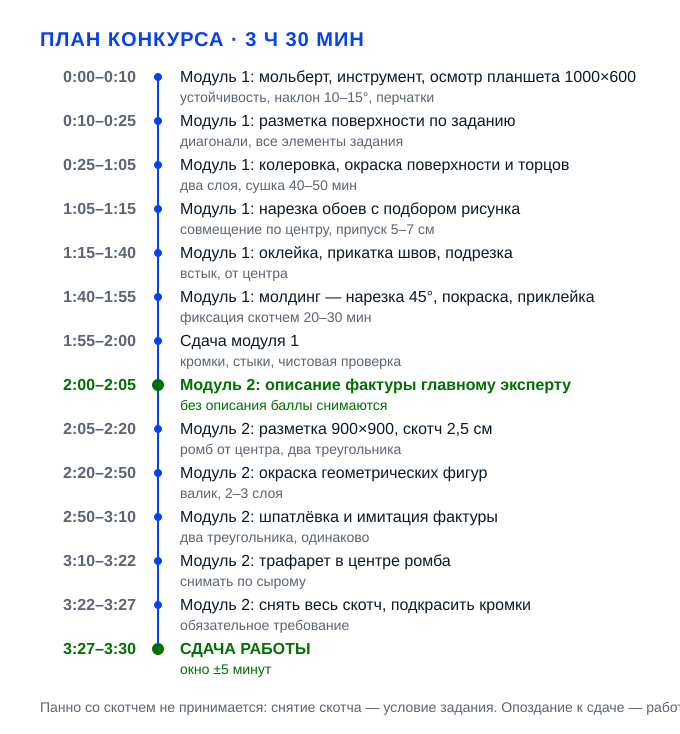
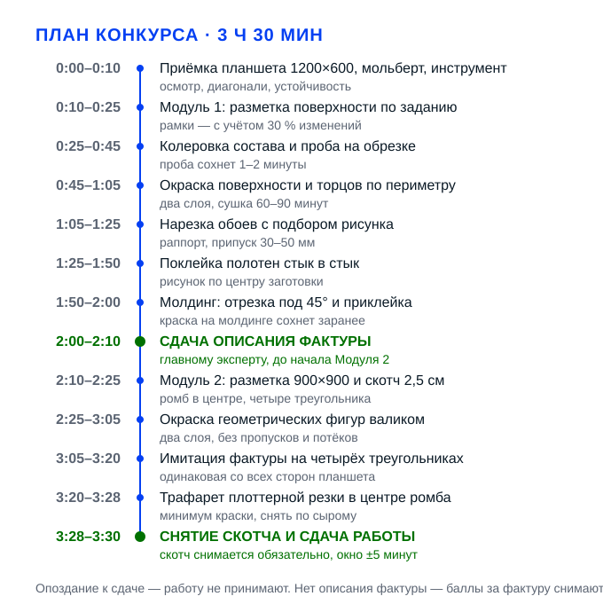
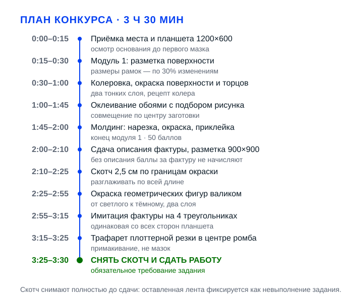

Малярное дело (Р)
Задания ниже — официальные файлы «Абилимпикс» (источник: abilympics-russia.ru), разложенные по категориям. Решения написаны по тексту задания, регламенту и критериям оценки; в них указано, что именно проверяет эксперт.
Школьник
14–16 лет, базовый уровень заданияВыдержка из официального конкурсного задания: страницы, относящиеся к категории «Школьник» (стр. 4–10 источника).
Пошаговое решение
Задание для школьников состоит из двух модулей на общем планшете-мольберте и укладывается в три часа тридцать минут: модуль 1 — два часа на окрашивание рабочей поверхности колером на водной основе, оклейку виниловыми обоями на бумажной основе с подбором рисунка и оформление молдингом по периметру и внутри (планшет 1000×600 мм), модуль 2 — полтора часа на декоративно-художественную отделку с зонированием поверхности (планшет 900×900 мм). Готовые изделия — панно, оклеенное обоями с оформлением молдингом, и панно с декоративно-художественной отделкой: геометрические фигуры, имитация фактуры на двух треугольниках и рисунок по самоклеящемуся трафарету плоттерной резки в центре ромба. Колеровку всех составов участник выполняет самостоятельно, цветовую гамму и вид фактуры определяет сам, но описание фактуры с названием, технологией и инструментом сдаёт главному эксперту в начале второго модуля — без этого листа баллы по фактуре снимаются полностью. Поверхность под окраску база готовит заранее, размеры фигур и рамок эксперты могут изменить при внесении тридцати процентов изменений в конкурсное задание, поэтому все цифры берутся только из выданного листа. Главные риски — потёки на наклонной плоскости, разошедшийся стык обоев и незакрытая граница под малярным скотчем шириной 2,5 см.

Задача 1. Подготовить мольберт, инструмент и планшетМодуль 1 · организация рабочего места
Модуль 1 длится два часа и выполняется не на столе, а на мольберте: планшет 1000×600 мм ставится почти вертикально, поэтому краска ведёт себя иначе, чем на горизонтали, и любая неустойчивость или лишний предмет под рукой сразу превращаются в потёк. Первые пятнадцать минут уходят не на отделку, а на организацию: устойчивый мольберт, инструмент, разложенный по операции, закрытый пол и проверенный планшет. Эти минуты окупаются дважды — и баллами за организацию рабочего места и соблюдение охраны труда, и тем, что дальше вы работаете без остановок, а не ищете валик в чужой ванночке.
Действие 1.1. Поставить мольберт и разложить инструмент
Шаг 1.1.1
Ставим мольберт на ровном участке пола, ноги разводим так, чтобы площадь опоры была больше ширины планшета, и подклиниваем ту ногу, которая качается, сложенным вчетверо куском картона или деревянной щепкой. Наклон рабочей плоскости выставляем примерно в десять — пятнадцать градусов от вертикали: при таком наклоне планшет читается целиком, а краска ещё не стекает вниз полосами. Зажимы затягиваем по диагонали, сначала нижние, потом верхние, и проверяем ладонью, что планшет не играет в раме.
Устойчивость мольберта — первое, что фиксирует эксперт по охране труда, и это же условие нормальной работы: на качающейся опоре вы не сможете ровно окрасить торцы и точно совместить рисунок обоев, потому что планшет будет уходить из-под линейки. Кроме того, падение планшета 1000×600 мм с высоты мольберта — это испорченная заготовка, которую в середине модуля никто не заменит.
Возьмитесь за верхнюю кромку рамы и покачайте планшет влево-вправо: люфта быть не должно, скрипа тоже. Проверьте отвесом или просто взглядом от пола вертикальность стоек и одинаковость наклона — перекос виден по тому, как планшет встаёт в раме.
Оставить мольберт «как стоял» без подклинивания: через двадцать минут он начнёт поскрипывать и смещаться, и вы потеряете контроль над линиями разметки. Вторая ошибка — наклон почти вертикальный: краска потянется вниз и даст потёки на кромке.
Эксперт обходит площадку в первые минуты и смотрит именно на устойчивость мольберта и наклон плоскости, а не на то, как быстро вы начали красить. Повторно он подходит к мольберту после окраски торцов: пошатывание под нагрузкой он заметит и запомнит.
Шаг 1.1.2
Раскладываем инструмент по операции, а не «в кучу»: слева на подставке — ванночка с сеткой и меховой валик 250 мм со средним ворсом, рядом кисть флейц 50–70 мм для торцов и углов, справа — кювета для колера, мерный стакан, палочка для размешивания и салфетки. Малярный скотч, ножницы, нож со сменными лезвиями, рулетка, угольник и карандаш лежат отдельно, на сухой тряпке, чтобы не пачкались краской. Всё, что не нужно в первые полчаса — обойный клей, молдинг, шпатель, — убираем в ящик.
Разложенный по операции инструмент экономит не меньше десяти минут из двух часов и, что важнее, не даёт испачкать краской то, чем потом придётся клеить обои. Критерий «Организация рабочего места» оценивают по этой самой картине: видно ли, что участник понимает последовательность работы, или собирает инструмент заново перед каждым переходом.
Проверьте себя простым тестом: возьмите в руку валик, не сходя с места у планшета, и верните его на подставку, не глядя. Если для этого приходится наклоняться или переставлять банки — переложите инструмент. Все жидкости стоят на подносе с бортом.
Класть валик ворсом вниз прямо на пол или на планшет: ворс забивается пылью и соринками, а первый же слой краски получается с «мусором». Вторая ошибка — держать открытую банку с колером у ног, где её легко опрокинуть.
Эксперт смотрит на расположение инструмента и на порядок на подставке дважды — в начале модуля и после окраски поверхности. Если валик лежит на полу или в чужой ванночке, он отмечает это как нарушение организации, даже когда панно вышло аккуратным.
Шаг 1.1.3
Надеваем перчатки по руке, потому что колер на водной основе и обойный клей сушат кожу и плохо смываются с ногтей; при колеровке добавляем защитные очки, чтобы капля концентрата не попала в глаз при размешивании. Пол под мольбертом и вокруг закрываем плёнкой с нахлёстом на стены, плёнку фиксируем малярным скотчем, и отдельно стелем газету под ванночку — именно там образуется основная лужа.
Требования охраны труда — отдельная строка в оценочном листе, и нарушение по ней снимает баллы независимо от качества панно. Практическая сторона не менее важна: капля краски на полу через час превращается в размазанный по всей площадке след, а испачканный пол в конце модуля придётся отмывать за счёт времени на отделку.
Плёнка лежит без складок под ногами, скотч держит её по всему периметру, перчатки целые и не сползают, очки не мешают смотреть вниз. Проверьте, что ни один провод и ни одна ножка мольберта не стоят на незакрытом полу.
Работать без перчаток «чтобы чувствовать инструмент»: колер въедается в кожу, а потом отпечатки остаются на светлых торцах планшета. Вторая ошибка — постелить плёнку только под сам мольберт, забыв зону, куда ставится ванночка.
Эксперт по охране труда проверяет перчатки, очки и закрытый пол до старта, а потом следит, снимает ли участник перчатки в процессе. Отдельно фиксируется, убраны ли перчатки и очки после работы: разбросанные средства защиты на площадке тоже считаются нарушением.
Действие 1.2. Осмотреть и подготовить планшет к работе
Шаг 1.2.1
Осматриваем лицевую сторону планшета на просвет, наклоняя его к свету: ищем царапины, вмятины, следы клея и наплывы на кромке. Поверхность база уже подготовила и окрасила в белый, поэтому шпатлевать её заново не нужно, но мелкие дефекты, которые всё же есть, проходим мелкозернистой шкуркой на бруске движением вдоль волокон, а не поперёк, и снимаем пыль мягкой щёткой.
Окрашенная поверхность проявляет любой дефект основания: краска ложится тонко, и каждая вмятина читается как тень, а шероховатость даёт «шагрень». Критерий «Качество выполненной работы» требует ровной поверхности без пропусков и дефектов, поэтому дешевле потратить пять минут на осмотр, чем объяснять эксперту пятно на лицевой стороне.
Проведите по поверхности ладонью в двух направлениях: она должна быть гладкой и одинаково прохладной, без липких участков. Посмотрите на планшет под углом к свету — при косом свете видны все неровности, которые не заметны прямо.
Начать сразу красить, не осмотрев основание: через слой краски вмятины проявятся резче, и исправить их будет уже нельзя без перекраски всего поля. Вторая ошибка — шлифовать «на глаз» крупной шкуркой и оставить риски.
Эксперт осматривает планшет до начала окраски и отмечает, были ли дефекты устранены или закрашены. Ему важно увидеть, что после шлифовки снята пыль: если поверхность не очищена, это заметно уже по первому слою.
Шаг 1.2.2
Протираем поверхность влажной, хорошо отжатой тряпкой и даём высохнуть пять-семь минут, не ускоряя процесс феном: тёплый воздух поднимает пыль, и она снова садится на планшет. Торцы по периметру протираем отдельно, потому что именно они забиты пылью от транспортировки, а кромку с наплывом краски аккуратно снимаем ножом, держа его плашмя к плоскости.
Пыль — главный враг первого слоя: краска на водной основе обволакивает частицы и оставляет на поверхности мелкие бугорки, которые потом видны на светлом фоне. Обезжиривание и обеспыливание — обязательная часть технологии, и эксперт отличает «покрашено по пыли» от нормального покрытия сразу, по характеру шероховатости.
Проведите по сухой поверхности белой салфеткой: на ней не должно остаться серого следа. Торцы на ощупь сухие и не липкие, кромка ровная, без наплывов, которые помешают обрезать обои по контуру. Проверьте также углы планшета: там пыль скапливается плотнее всего, а потом собирается ворсом валика в комки.
Мыть планшет мокрой тряпкой и сразу начинать красить: вода в порах разбавляет первый слой, и он ложится пятнами. Вторая ошибка — не обработать торцы, хотя их тоже окрашивают колером. Третья по частоте — начать разметку по влажной поверхности: карандаш рвёт размягчённую основу и оставляет борозду.
Эксперт смотрит на чистоту поверхности и на состояние кромки перед разметкой, это часть подготовки основания. Он проводит пальцем по торцу и по кромке: липкость или наплыв краски сразу видны и снижают оценку подготовки.
Шаг 1.2.3
Кладём перед собой задание и чертёж, отмечаем на плане планшета, где проходят границы окраски, где будет оклейка обоями и где крепится молдинг. Размеры фигур и рамок эксперты могут изменить при внесении тридцати процентов изменений в конкурсное задание, поэтому цифры переписываем с выданного листа и пересчитываем от них, а не от привычной схемы. Все пометки делаем карандашом на обороте или на отдельном листе, а не на лицевой стороне.
Модуль 1 и модуль 2 делаются на разных планшетах — 1000×600 мм и 900×900 мм, — и путать их планировки нельзя: разметка, сделанная по памяти, гарантированно разойдётся с заданием в изменённой части. План, записанный цифрами, позволяет дважды проверить себя до того, как на планшете появится первая линия.
На листе выписаны все размеры из задания: ширина рамки молдинга, границы обойного поля, отступы от кромки. Сверьте каждую цифру с чертежом вслух — так ошибка в разряде замечается сразу. Полезно проговорить план вслух перед стартом: ошибка в разряде на слух замечается сразу.
Размечать по памяти или «примерно как на фото»: при изменении тридцати процентов задания композиция съезжает, и часть баллов теряется ещё до начала работы. Вторая ошибка — писать размеры на лицевой стороне планшета.
Эксперт сверяет вашу разметку с выданным чертежом, поэтому план с цифрами стоит держать на виду до конца модуля. Если размеры записаны не с листа, а по памяти, он замечает расхождение уже на первой линии разметки.
Задача 2. Разметить планшет, заколеровать состав и окрасить поверхность с торцамиМодуль 1 · разметка и окраска
Вторая задача — самая ответственная по времени: на разметку, колеровку и окраску поверхности с торцами уходит больше половины первого модуля, потому что краске нужно высохнуть до оклейки обоями. Логика здесь жёсткая: сначала линии, потом цвет, и только потом обои. Если перепутать порядок и начать колеровать раньше, чем размечено поле, придётся либо красить дважды, либо клеить обои на непросохшее основание, и то и другое видно на сдаче. Колер вы подбираете сами, и оценивают не только ровность слоя, но и оригинальность цветового решения в общей гамме с обоями.
Действие 2.1. Разметить рабочую поверхность
Шаг 2.1.1
Берём рулетку, металлический угольник, остро заточенный карандаш твёрдостью 2Т и длинную рейку-правило. Первым делом проверяем сам планшет: рулеткой измеряем обе диагонали рабочего поля — на 1000×600 мм они должны быть равны, расхождение больше двух миллиметров означает, что планшет стоит с перекосом или кромка неровная. От базовой кромки откладываем размеры из задания: сначала общий контур, потом внутренние линии, каждый размер отмеряем дважды и точку ставим коротким штрихом, а не крестом.
Разметка — фундамент всей композиции: сдвиг линии на пять миллиметров потом невозможно исправить, потому что обои уже нарезаны по этим размерам, а молдинг отрезан под эти углы. Проверка диагоналей ловит перекос раньше, чем он превратится в клин между полотнами. Кроме того, на подготовленном планшете должны быть все элементы задания, и эксперт сверяет их наличие с чертежом.
Диагонали рабочего поля совпадают с точностью до одного-двух миллиметров, все размеры сходятся при повторном промере, углы проверены угольником. Отойдите на два шага: линии должны читаться как параллельные кромкам.
Мерить одной рулеткой без натяжения и ставить точки «на глаз»: полмиллиметра на каждом размере дают видимый клин на длинной стороне. Вторая ошибка — разметить только внешний контур и не отметить внутренние границы, из-за чего молдинг потом ложится не по заданию.
Эксперт подходит с рулеткой в момент разметки и после неё, сверяя размеры с чертежом и оценивая аккуратность линий. Он просит показать, от какой базы отложен каждый размер, — так проверяется, не случайно ли сошлись цифры.
Шаг 2.1.2
Длинные линии отбиваем малярным шнуром или проводим по правилу, прижатому двумя струбцинами, — от руки карандаш уводит на длине в метр. Правило ставим так, чтобы оно опиралось на две уже проверенные точки, и ведём карандаш одним движением от себя, держа его почти вертикально, чтобы графит не уходил под кромку рейки. Короткие линии в пределах двадцати сантиметров можно провести по угольнику, но и их проверяем на продолжении.
Ровная линия нужна не для красоты: по ней вы будете резать обои и ставить молдинг, а молдинг повторяет все изломы разметки с точностью до миллиметра. Дрожащая линия превращается в волнообразный шов, который эксперт видит с расстояния двух метров, и это прямой минус по критерию качества.
Приложите правило к проведённой линии в двух местах: зазор между рейкой и линией не должен меняться. Посмотрите на линию вдоль — искривление видно лучше, чем поперёк. Отметьте карандашом начало и конец каждой линии — по ним потом сверяется подрезка обоев и установка молдинга.
Проводить линии от руки, «аккуратно»: на длине в метр рука всегда даёт пологий изгиб. Вторая ошибка — вести карандаш с наклоном, тогда линия смещается на полтора-два миллиметра от кромки правила. Ещё одна ошибка — вести линию по правилу, не прижав его: рейка сдвигается, и линия уходит дугой.
Эксперт проверяет прямолинейность линий и параллельность их кромкам планшета, это видно сразу. Он смотрит на линию вдоль, присев к уровню планшета: пологий изгиб в метр длиной заметен только под таким углом.
Шаг 2.1.3
Отмечаем рабочие зоны точками и подписями на обороте: где поверхность останется под колер, где будет оклейка обоями, где пройдёт молдинг по периметру и где — внутри. Границы обойного поля обводим тонкой линией с припуском, потому что полотна потом подрезаются по месту. Отдельно ставим метки под крепление молдинга: по четыре-пять точек на каждую сторону, чтобы не искать середину на весу.
Зоны, отмеченные заранее, не дают закрасить колером то место, куда придётся клеить обои: краска на водной основе держит обойный клей хуже, чем впитывающее основание, и полотно в таком месте отходит по кромке. Метки под молдинг экономят время на самом ответственном этапе, когда каждая минута сушки на счету.
На плане видны все зоны и все элементы задания без исключения; границы обойного поля совпадают с размерами из чертежа, метки под молдинг расположены симметрично относительно центра. Сфотографируйте размеченный планшет: на снимке несимметричность видна лучше, чем вблизи.
Отметить зоны только в голове: к моменту оклейки вы уже будете думать о стыке рисунка и закрасите лишнее. Вторая ошибка — несимметричные метки, из-за которых молдинг встаёт с перекосом на несколько миллиметров.
Эксперт сверяет наличие всех элементов задания на планшете до начала окраски — это отдельный пункт критериев. Отсутствие хотя бы одной метки он трактует как неполную разметку, даже если композиция выглядит цельной.
Действие 2.2. Заколеровать окрасочный состав
Шаг 2.2.1
Выбираем цвет, отталкиваясь от обоев: раскладываем образец обоев на белом планшете и смотрим, какие два-три тона из рисунка можно усилить в краске. Практичнее брать не чистый цвет с упаковки, а его приглушённый вариант — с добавкой белого или капли чёрного, тогда фон не спорит с обоями. Определяемся с двумя составами: основной фон и цвет для торцов и молдинга, и записываем рецепт в блокнот: сколько колер-пасты на сколько граммов краски.
Колеровку участник выполняет сам, и оценивают именно оригинальность цветового решения и сочетаемость цвета в общей гамме. Рецепт, записанный цифрами, — единственный способ повторить тон, если придётся доводить недостающий объём: на глаз второй замес того же цвета не сделать, а разница в полтона на стыке торца и лица бросается в глаза.
Наклейте мазок краски на белый лист и подсушите феном тридцать секунд: влажная краска выглядит на два тона темнее сухой. Сравните сухой мазок с обоями при дневном свете и при лампах площадки — тон должен читаться одинаково.
Выбирать цвет по влажному мазку: после высыхания фон оказывается светлее и контраст с обоями пропадает. Вторая ошибка — колеровать «на глаз» без записи пропорций и потом не попасть в тон при добавке. Третья — брать цвет «как на фотографии в задании», не проверяя его на своих обоях.
Эксперт оценивает цветовое решение по готовому панно, но подходит и в момент колеровки — смотрит, осознанно ли подобран тон. Он может спросить, из какого тона обоев взят цвет фона, и по ответу видно, был ли выбор случайным.
Шаг 2.2.2
Отливаем нужное количество краски в чистую ёмкость, а не колеруем всю банку: так остаётся запас базового состава на исправление. Колер-пасту добавляем по капле, каждый раз размешивая палочкой не меньше минуты и смотря на цвет при хорошем свете, а не под собственной тенью. Для основного фона на полтора-два литра краски обычно уходит от пяти до двадцати миллилитров пасты — точная цифра зависит от пигмента, поэтому добавляем порциями.
Колер-паста — концентрированный пигмент: если вылить её сразу «примерно сколько надо», вернуть светлый тон уже невозможно, придётся разбавлять белой краской и увеличивать объём втрое. Постепенное добавление с размешиванием даёт контроль над насыщенностью и гарантирует повторяемость второго замеса.
Капните размешанной краской на белую керамическую плитку или на стекло и наклоните: тон должен быть однородным, без тёмных прожилок и крупинок. Проведите палочкой по дну — осадка пигмента быть не должно.
Сыпать пасту ложкой и размешивать «до исчезновения пятен»: неразмешанный пигмент даёт на поверхности тёмные полосы, которые проявляются уже на высохшем слое. Вторая ошибка — колеровать всю банку и остаться без чистого белого для исправлений.
Эксперт смотрит на однородность состава и на то, записывает ли участник пропорции — это часть технологической грамотности. Наличие записанного рецепта он проверяет ещё раз, когда вы доводите тон перед вторым слоем.
Шаг 2.2.3
Доводим состав до рабочей консистенции: для первого слоя по окрашенному белому основанию добавляем воды не больше десяти процентов от объёма, для второго слой оставляем чуть гуще. Перемешиваем и процеживаем через капроновый чулок или строительное сито в чистую ванночку — это убирает плёнку и комочки. Ванночку наполняем на две трети, чтобы валик набирал краску равномерно и не «пил» её со дна.
Первый слой на пористом окрашенном основании уходит быстро, и слишком густая краска даёт полосы от валика, а слишком жидкая — потёки на вертикальном планшете. Процеживание — не формальность: одна плёнка, попавшая под валик, оставляет на поверхности тёмную точку с валиком вокруг, и убрать её можно только перекраской участка.
Краска стекает с палочки ровной струёй и оставляет на стенке ванночки однородный след без крупинок. Проведите пальцем в перчатке по сетке — краска должна проходить через неё, а не лежать сверху. Капните состав на наклонную плитку: он должен сползать медленно, ровной полосой, не оставляя комков.
Разбавлять «на глаз» до состояния воды: жидкая краска на наклонном планшете сразу течёт вниз и оставляет на кромке капли. Вторая ошибка — не процедить состав и потом собирать комочки валиком по всему полю.
Эксперт обращает внимание на консистенцию и на чистоту состава, когда подходит к ванночке во время окраски. Слишком жидкая краска в ванночке видна по плёнке на сетке и по каплям на плёнке пола.
Действие 2.3. Окрасить рабочую поверхность и торцы
Шаг 2.3.1
Набираем краску валиком, прокатывая его по сетке ванночки два-три раза, и снимаем лишнее о бортик: валик должен быть влажным, но не капать. Первый слой ведём сверху вниз полосами шириной около полуметра, каждую следующую полосу перекрываем на треть ширины валика, не отрывая его от поверхности. Затем, не дожидаясь высыхания, проходим теми же полосами в поперечном направлении — так называемая крестовая прокатка убирает следы ворса.
На вертикальном планшете краска ведёт себя иначе, чем на стене: она стремится вниз, и если вести валик только в одном направлении, к нижней кромке собирается утолщение. Крестовая прокатка распределяет слой равномерно, без полос, а критерий качества прямо требует отсутствия пропусков, потёков и прочих дефектов.
Посмотрите на поверхность под косым светом: не должно быть светлых проплешин, полос от края валика и капель у нижней кромки. Проведите тыльной стороной ладони — слой должен быть одинаково прохладным по всей площади, без липких сгустков.
Давить на валик изо всех сил «чтобы лучше прилипло»: краска выдавливается по краям и образует валики, которые после сушки видны как рельеф. Вторая ошибка — вести валик только вверх-вниз и получить полосатость.
Эксперт оценивает равномерность слоя и отсутствие дефектов, подходя к планшету до оклейки обоями. Он смотрит на поле под косым светом, приставляя ладонь к поверхности, — так видны полосы от валика и просветы.
Шаг 2.3.2
Торцы окрашиваем кистью-флейцем шириной 50–70 мм, а не валиком: узкая полоса торца требует контроля, иначе краска затекает на лицевую сторону. Кисть окунаем на треть ворса, отжимаем о край ванночки и ведём по торцу от середины к углам, затем проходим углы торцом кисти. Если на лицевую сторону всё же попала капля, снимаем её сразу влажной тряпкой, пока краска не схватилась.
Торцы по периметру — обязательный элемент задания: панно смотрят не только фронтально, но и сбоку, и неокрашенный торец сразу читается как недоделанная работа. Краска на торце сохнет быстрее, чем на плоскости, поэтому её наносят тонким слоем, не «лужей»: толстый слой на узкой кромке даёт наплыв и морщины.
Проведите пальцем в перчатке по торцу по всей длине: цвет должен быть одинаковым, без светлых участков у углов. Посмотрите на планшет сбоку — граница между лицом и торцом должна быть ровной линией, без зубцов.
Красить торцы валиком: он перехлёстывает через кромку и пачкает лицевую сторону, а снять краску с уже подсохшего фона невозможно без пятна. Вторая ошибка — оставить торцы «на потом», к моменту оклейки они уже не высохнут.
Эксперт обходит планшет и смотрит на торцы отдельно, это пункт критерия качества окраски. Он проверяет все четыре торца, включая нижний, который обычно окрашивают последним и хуже всех.
Шаг 2.3.3
Даём первому слою высохнуть до отлипа — при обычной температуре площадки это сорок-пятьдесят минут, при жаре быстрее; проверяем аккуратно, касаясь тыльной стороной пальца в незаметном месте у кромки. Второй слой наносим тем же валиком в том же крестовом порядке, но чуть тоньше: его задача — перекрыть просветы, а не утолщить покрытие. Если после второго слоя остались светлые пятна, точечно подкрашиваем их кистью, а не третьим слоем по всей площади.
Окраска в два слоя — это укрывистость: один слой на белом фоне всегда даёт просветы, особенно на светлых тонах, а три и более слоя на наклонной плоскости дают потёки и долго сохнут, съедая время на оклейку. Время сушки между слоями — часть технологии, и его нарушение видно по поверхности: сырая краска при втором проходе «тащится» и оставляет полосы.
Сравните цвет в двух-трёх точках поля с мазком-образцом: после второго слоя он должен совпасть. На поверхности нет просветов, полос и капель; при нажатии палец не оставляет отпечатка и не липнет. Сравните цвет у верхней и нижней кромки: на наклонной плоскости низ всегда темнее, если слой там толще.
Наносить второй слой по сырому: валик снимает первый слой и оставляет проплешины и борозды. Вторая ошибка — торопиться и начать клеить обои на непросохшую краску, из-за чего полотно потом отходит пузырями.
Эксперт проверяет укрывистость и сухость поверхности перед оклейкой обоями, это его ключевая точка контроля в середине модуля. Отпечаток пальца на фоне в этот момент означает, что второй слой нанесён с нарушением времени сушки.
Задача 3. Оклеить панно виниловыми обоями и оформить молдингомМодуль 1 · оклейка обоями и молдинг
Третья задача — сердцевина первого модуля: именно здесь панно из окрашенного щита превращается в готовое изделие. Обои виниловые на бумажной основе, с подбором рисунка, причём совмещение делается по центру заготовки — это требование задания, а не пожелание, и именно по центру проверяют симметрию композиции. Дальше по периметру и внутри ставится молдинг, окрашенный в тон, и работа сдаётся. Порядок жёсткий: нарезка с подбором раппорта, наклейка от центра, прикатка швов, и только после полного схватывания клея — молдинг, иначе его вес и нажим сместят полотна.
Действие 3.1. Нарезать обои с подбором рисунка
Шаг 3.1.1
Замеряем зону оклейки рулеткой по размеченному контуру: высоту и ширину обойного поля, а не всего планшета. К каждой стороне прибавляем припуск пять-семь сантиметров на подрезку и на выравнивание кромки — обои режутся с запасом, потому что подрезать по месту проще, чем добавить недостающее. Считаем число полотен: ширину поля делим на ширину рулона, округляем в большую сторону и записываем на листе, сколько полотен и какой длины нужно.
Расчёт до нарезки — это защита от нехватки материала: рулон один, и если нарезать «по одному полотну» без плана, к последнему куску может не хватить длины с нужным раппортом. Припуск в пять-семь сантиметров нужен ещё и потому, что клеить приходится на наклонной плоскости, и край полотна смещается относительно разметки.
На листе записаны ширина поля, высота, ширина рулона, число полотен и длина каждого с припуском. Проверьте расчёт обратным действием: число полотен умножить на ширину рулона — должно получиться не меньше ширины поля.
Нарезать полотна впритык по размеру поля: при наклейке на наклонной плоскости край уходит на сантиметр, и полотно оказывается короче. Вторая ошибка — забыть, что рисунок при подборе «съедает» до полуметра длины с каждого полотна.
Эксперт смотрит на расчёт и на раскрой: лишние обрезки и явно неэкономное использование рулона видны сразу. Он сверяет число нарезанных полотен с шириной поля: недостача полотна к концу наклейки считается грубой ошибкой раскроя.
Шаг 3.1.2
Раскладываем рулон на полу рисунком вверх и находим раппорт — расстояние, через которое рисунок повторяется. Отмеряем его рулеткой по двум-трём повторам и делим, чтобы получить среднее значение, а не разовую цифру. Дальше нарезаем полотна со сдвигом на раппорт: второе полотно начинается не там же, где первое, а на один шаг рисунка выше или ниже, чтобы при стыковке элементы совпали. Совмещение по заданию делается по центру заготовки, поэтому среднее полотно выставляем симметрично.
Виниловые обои на бумажной основе требуют совмещения рисунка, и без подбора стык читается как разрыв композиции — это прямой минус по критерию качества. Сдвиг на раппорт, а не «на глаз», гарантирует, что элементы узора сойдутся на шве. Симметрия относительно центра заготовки прописана в задании отдельно, и её проверяют линейкой.
Сложите два соседних полотна лицевой стороной вверх и состыкуйте по кромке: узор должен совпадать без сдвига по всей высоте, а не только внизу. Расстояние от центра полотна до центра заготовки сверьте рулеткой с двух сторон — оно должно быть одинаковым.
Нарезать полотна подряд, не учитывая раппорт: на стыке узор «ломается» на половину элемента, и это самая заметная ошибка в оклейке. Вторая — выравнивать рисунок по нижнему краю, тогда расхождение накапливается кверху.
Эксперт проверяет стык рисунка при сдаче модуля, прикладывая линейку к шву и смотря вдоль него. Ему важно увидеть, что раппорт измерен, а не угадан: он спросит, чему равен шаг рисунка.
Шаг 3.1.3
Режем полотна ножницами по длинной линии или ножом по правилу, держа лезвие под углом и не отрывая его от рейки, — кромка получается ровной, без «лесенки». Каждое полотно подписываем карандашом с изнанки: номер, верх и направление рисунка. Полотна сворачиваем в рулончики лицом внутрь и укладываем в порядке наклейки, чтобы не искать нужное в процессе.
Подписанные полотна — это скорость и отсутствие путаницы: на площадке легко перевернуть полотно и получить рисунок вверх ногами, а заметить это можно только после приклейки. Ровная кромка после ножа нужна потому, что виниловые обои на бумажной основе клеятся встык, и кромка сразу становится швом.
Проведите по кромке пальцем в перчатке: она должна быть ровной, без зазубрин и «ступенек». Разложите рулончики по порядку и убедитесь, что метки «верх» стоят на всех полотнах одинаково. Сложите два рулончика рядом и проверьте, что рисунок на них смотрит в одну сторону.
Резать ножницами «по линии» на весу: кромка уходит волной, и стык потом не сходится. Вторая ошибка — не подписать полотна и клеить наугад. И резать на весу, без подложки: нож уходит в стол и рвёт нижний слой полотна.
Эксперт смотрит на раскрой и на аккуратность кромок, когда подходит к столу с обоями. Зазубренная кромка для него — прямой признак того, что шов не сойдётся встык.
Действие 3.2. Наклеить полотна и прикатать швы
Шаг 3.2.1
Готовим обойный клей по инструкции на упаковке: засыпаем в воду при постоянном размешивании, даём отстояться положенные минуты и перемешиваем ещё раз до исчезновения комков. Клей наносим на изнанку полотна малярным валиком или широкой кистью от середины к краям, чтобы не растянуть кромку, и оставляем пропитаться на пять-семь минут — бумажная основа должна размягчиться и «сесть» ровно.
Виниловые обои на бумажной основе клеятся клеем, нанесённым на полотно, а не на основание: бумага должна набухнуть до наклейки, иначе после высыхания полотно стянется и разойдутся стыки. Пропитывание — это и защита от пузырей: неприпылённый клей остаётся под оболочкой и проступает буграми.
Клей на изнанке лежит ровным слоем без сухих участков у кромок, полотно стало мягче и податливее. Проведите рукой — слой должен быть скользким по всей площади, без сгустков. Возьмите полотно за угол: оно должно провисать мягко, без хруста сухой бумаги.
Нанести клей на планшет вместо полотна: бумажная основа не пропитается, и обои отойдут по кромке при высыхании. Вторая ошибка — наклеить сразу, не дав клею пропитать основу: полотно растянется и после сушки даст расхождение в стыке. И наносить клей на полотно, растягивая его за кромку: кромка деформируется и не ложится встык.
Эксперт смотрит на подготовку клея и на то, пропитано ли полотно, это часть технологии оклейки. Он проверяет, размешан ли клей до однородности: комки на изнанке он видит, когда приподнимает угол полотна.
Шаг 3.2.2
Первое полотно ставим по центральной линии заготовки, потому что совмещение рисунка по заданию идёт от центра. Прикладываем верхний край с припуском над линией, выравниваем по вертикали отвесом или по размеченной оси, прижимаем ладонью по центру и разглаживаем щёткой с мягким ворсом от середины к краям — сначала вверх, потом вниз, потом в стороны, выгоняя воздух к кромкам. Кромку у угла подворачиваем и прижимаем отдельно.
Разглаживание от центра — единственный способ выгнать воздух без пузырей: если вести щётку от края к центру, воздух загоняется в середину и остаётся под оболочкой. Центр как точка отсчёта нужен ещё и потому, что от него симметрично расходятся остальные полотна, и любая ошибка делится пополам.
Под полотном нет пузырей и складок, рисунок стоит вертикально по оси, кромки не завернулись. Посмотрите на планшет под углом к свету — бугры и волны видны как тени. Измерьте расстояние от центра полотна до обеих боковых кромок планшета — оно должно совпасть.
Клеить от угла, а не от центра: к противоположному краю накапливается перекос в сантиметр, и рисунок уходит в сторону. Вторая ошибка — разглаживать от краёв к середине и оставить воздушный «пузырь» в центре.
Эксперт проверяет положение первого полотна относительно центральной оси — это ключевая точка контроля оклейки. Смещение центра даже на пять миллиметров он измеряет рулеткой от кромок и фиксирует в оценочном листе.
Шаг 3.2.3
Второе и следующие полотна клеим встык, подводя кромку к кромке без нахлёста: виниловые обои на бумажной основе нахлёст не допускают, при подрезке по мокрому оболочка тянется и шов расходится. Совмещаем рисунок по всей высоте, начиная сверху и постепенно опускаясь, прижимаем шов ладонью и прокатываем валиком для швов или пластиковым шпателем через мягкую тряпку, двигаясь сверху вниз одним движением.
Шов встык — требование технологии для этого типа обоев, и он же самый заметный элемент качества: даже полуторамиллиметровый зазор читается на светлом фоне как тёмная линия. Прикатка валиком выдавливает остатки клея из-под кромки и прижимает оболочку к основанию, поэтому шов не расходится после высыхания.
Кромки стоят без зазора и без нахлёста, рисунок совпадает по всей высоте, из-под шва не выступают капли клея. Проведите пальцем поперёк шва — ступеньки быть не должно. Осмотрите шов сверху и снизу: расхождение рисунка чаще появляется у края, где полотно подрезано.
Клеить с нахлёстом «для надёжности»: после высыхания нахлёст даёт утолщение и тень, а подрезать его по мокрому нельзя. Вторая ошибка — не прикатать шов и получить расхождение кромок через полчаса. Третья — подрезать кромку ножницами уже после наклейки: линия получается волной.
Эксперт осматривает швы при косом свете и проверяет совпадение рисунка на каждом стыке. Он проводит ногтем поперёк шва: ступенька означает нахлёст, которого для этих обоев быть не должно.
Шаг 3.2.4
Остатки клея сразу снимаем влажной, хорошо отжатой губкой, двигаясь от шва к краю полотна, чтобы не залить стык. После схватывания клея и подсыхания кромки подрезаем полотна по размеченному контуру: ножом по металлической линейке или по правилу, одним движением, прижимая линейку ладонью. Углы подрезаем в два приёма — сначала одну сторону, потом перпендикулярную, чтобы не вырвать угол.
Клей, оставленный на лицевой стороне, после высыхания даёт матовые пятна, которые не смываются и особенно заметны на глянцевом виниле. Подрезка по контуру нужна потому, что полотно клеится с припуском, и только после схватывания можно провести точную линию без смещения.
На лицевой стороне нет разводов и капель, контур подрезан ровно, без зазубрин и «бахромы», линия подрезки совпадает с разметкой по всей длине. Углы целые, полотно не отслоилось. Проведите ногтем вдоль линии подрезки: ровная кромка не даёт зацепов и не тянется за пальцем.
Тереть шов мокрой губкой: кромка размокает, оболочка отходит, шов раскрывается. Вторая ошибка — подрезать полотно, пока клей не схватился: полотно тянется за ножом и уходит с линии. И оставлять клей на шве «до высыхания»: он впитывается в кромку и даёт тёмную полосу.
Эксперт проверяет чистоту лицевой стороны и ровность подрезки по периметру обойного поля. Разводы клея он ищет на тёмных участках узора, где они проявляются матовыми пятнами.
Действие 3.3. Изготовить и установить молдинг
Шаг 3.3.1
Молдинг по заданию оформляет поверхность по периметру и внутри, поэтому сначала переносим на планшет линии его установки: отмеряем от кромки одинаковое расстояние по всем четырём сторонам и отбиваем прямоугольник, проверяя равенство диагоналей. Внутренние элементы размечаем от центра заготовки, чтобы рамка стояла симметрично. Каждую линию дублируем карандашной меткой на торце — она нужна, когда планшет стоит на мольберте.
Молдинг — это рамка, и любая несимметричность рамки видна мгновенно: глаз замечает перекос в три миллиметра даже без линейки. Отбивка линий до нарезки экономит материал: детали режутся под конкретные размеры, а не «примерно», и стыки в углах сходятся.
Диагонали внутреннего прямоугольника равны, отступы от кромок одинаковы с четырёх сторон, метки на торцах совпадают с линиями на лицевой стороне. Промерьте отступ в четырёх местах каждой стороны. Промерьте отступы на противоположных сторонах попарно: они должны быть равны между собой, а не только по чертежу.
Размечать только лицевую сторону и «доводить» молдинг по месту: на мольберте линия не видна, и деталь встаёт с перекосом. Вторая ошибка — размечать внутреннюю рамку от края, а не от центра, из-за чего она смещается относительно обойного поля.
Эксперт сверяет положение рамки с чертежом и проверяет симметрию относительно центра панно. Он меряет отступ от кромки в четырёх точках и сравнивает их между собой, а не только с заданием.
Шаг 3.3.2
Режем молдинг в стусле ножовкой с мелким зубом или ножом по профилю, укладывая деталь в лоток лицевой стороной вверх и прижимая рукой. Для наружного угла рез делаем под сорок пять градусов в одну сторону, для внутреннего — в другую, и обязательно проверяем направление скоса до реза, потому что испорченную деталь уже не исправить. Длину каждой детали отмеряем по своей линии и прибавляем два-три миллиметра на подгонку.
Скос под сорок пять градусов — единственный способ получить чистый угол без щели: два среза, сложенные вместе, дают ровные девяносто градусов. Стусло держит угол жёстко, от руки такой рез не сделать, а щель в углу рамки — первое, что бросается в глаза при осмотре панно.
Сложите две детали срезами вместе на ровной поверхности: линия стыка должна быть без просвета, кромки совпадать по высоте. Приложите деталь к размеченной линии — длина совпадает с точностью до миллиметра.
Пилить без стусла «по разметке»: угол уходит на три-пять градусов, и в стыке остаётся клиновая щель. Вторая ошибка — перепутать направление скоса и отрезать деталь зеркально, после чего она не встаёт в угол.
Эксперт осматривает углы рамки на просвет, это классическая точка контроля столярно-отделочных работ. Смотрит он и на кромку среза: рваная кромка от тупого полотна выдаёт работу без стусла.
Шаг 3.3.3
Красим нарезанные детали колером, подобранным в тон обоям и окрашенной поверхности: сначала грунтуем срез и тыльную сторону, затем красим лицевую грань тонким слоем. Удобнее разложить детали на подставках, чтобы краска не прилипала к столу, и проходить кистью вдоль профиля, а не поперёк, иначе в канавках остаются непрокрашенные участки. Второй слой наносим после высыхания первого, при необходимости — с лёгкой шлифовкой между слоями.
Цвет молдинга должен сочетаться с обоями и окрашенной поверхностью — это прямо прописано в задании и оценивается по оригинальности цветового решения. Прокраска срезов и тыльной стороны нужна потому, что торец профиля виден в углу стыка, и неокрашенный срез светится белым пятном.
Цвет деталей совпадает с мазком-образцом и с фоном панно, на профиле нет просветов и наплывов, краска не закрыла рельеф. Проведите по грани пальцем — ступенек и капель быть не должно. Посмотрите на детали под лампой сбоку: на рельефе профиля непрокрасы видны как светлые точки.
Красить детали после приклейки: подтёки на обоях уже не убрать, а малярный скотч на виниле оставляет след. Вторая ошибка — один толстый слой, который на профиле собирается в капли и долго сохнет. Третья — красить детали на газете: шрифт отпечатывается на сыром профиле.
Эксперт оценивает сочетаемость цвета молдинга с общей гаммой панно и качество его окраски. Отдельно он проверяет, прокрашены ли срезы: белый торец в углу стыка он замечает первым.
Шаг 3.3.4
Клеим молдинг на монтажный клей для профилей: наносим его «змейкой» на тыльную сторону детали, выдерживаем указанное на упаковке время, прикладываем по размеченной линии и прижимаем по всей длине ладонью. Каждую деталь фиксируем малярным скотчем в двух-трёх местах поперёк профиля, натягивая скотч от планшета к планшету, и оставляем на двадцать-тридцать минут до схватывания клея.
Монтажный клей держит профиль на вертикальной плоскости, а скотч удерживает деталь, пока клей набирает прочность: без фиксации молдинг сползает вниз на несколько миллиметров, и рамка перестаёт быть симметричной. Фиксация скотчем — приём, который экономит нервы: деталь не нужно держать рукой, и руки остаются свободными.
Деталь стоит точно по линии, не сползает при нажатии, стыки в углах сомкнуты без щели. Проверьте отступ от кромки в начале и в конце детали — он одинаковый, значит, деталь не повернулась. Проверьте деталь через десять минут: если она сдвинулась под скотчем, клей нанесён слишком тонко.
Приклеить деталь на клей «намертво» без фиксации: пока клей схватывается, молдинг съезжает, а сдвинуть его уже нельзя — клей держит крепко. Вторая ошибка — выдавить клей за края и не снять излишки сразу.
Эксперт проверяет плотность прилегания молдинга и ровность линий после схватывания клея. Щупом или ногтем он проверяет, нет ли зазора под профилем: пустота под молдингом означает, что клей нанесён не по всей длине.
Шаг 3.3.5
Снимаем фиксирующий скотч медленно, под острым углом к поверхности, придерживая пальцем соседний участок профиля. Излишки клея, выступившие по кромке, снимаем сразу: застывший клей убирается только механически и вместе с краской. Щели в углах, если они остались, заполняем акриловым герметиком в тон, разглаживаем влажным пальцем и после высыхания подкрашиваем тонкой кистью.
Аккуратно снятый скотч не тянет за собой ни краску, ни обои — на виниле это особенно важно, потому что плёнка отходит целыми полосами. Заполненные углы дают ту самую чистую рамку, по которой оценивают качество: щель в полмиллиметра на светлом фоне читается как чёрная линия.
Проведите пальцем вдоль кромки молдинга: она прилегает плотно, без зазоров и наплывов клея. Углы сомкнуты, подкраска совпадает по тону, обои вокруг чистые. Проведите по стыку влажной салфеткой: на белой ткани не должно остаться следа краски.
Срывать скотч рывком: вместе с ним уходит кусок краски с молдинга или полоса обоев. Вторая ошибка — оставить выступивший клей «до сдачи», он желтеет и собирает пыль. И оставлять скотч на молдинге до сдачи: при снятии он уносит краску вместе с собой.
Эксперт осматривает стыки и кромки рамки при финальной оценке модуля, это последняя точка контроля первого модуля. Следы клея и отпечатки пальцев на профиле он относит к аккуратности выполнения и снижает за них оценку.
Задача 4. Выполнить декоративно-художественную отделку второго панноМодуль 2 · 1 час 30 минут
Второй модуль идёт на планшете 900×900 мм и длится полтора часа — это ровно вдвое меньше времени на более сложную работу. Здесь вы сами определяете цветовую гамму, фактуру и цвет трафарета, но есть одно жёсткое условие: описание фактуры с названием, технологией и инструментом сдаётся главному эксперту в начале модуля, и без этого листа снимаются все баллы по критериям, даже если имитация выполнена идеально. Дальше работа идёт слоями: разметка и скотч, окраска фигур, шпатлёвка с фактурой на двух треугольниках, трафарет в центре ромба, и в самом конце — обязательное снятие скотча.
Действие 4.1. Сдать описание фактуры, разметить поверхность и наклеить скотч
Шаг 4.1.1
До первого мазка отдаём главному эксперту заранее подготовленный лист с описанием фактуры: название приёма, технология выполнения по шагам и инструмент, которым вы будете работать. Лист печатаем заранее, подписываем своей фамилией и указываем модуль, чтобы он не потерялся в общем потоке. Если описание не сдано, работа по фактуре не оценивается вообще — это единственное условие конкурса, которое обнуляет целый блок критериев.
Задание прямо говорит: описание фактуры сдаётся главному эксперту в начале модуля, а если его нет, снимаются все баллы, даже когда имитация выполнена в полном объёме. Практический смысл тоже есть: эксперт заранее видит, какой инструмент вы принесли, и потом сверяет результат с заявленной технологией, а не догадывается, что вы хотели изобразить.
Лист принят главным экспертом, у вас остался второй экземпляр или фотография, в описании названы приём, инструмент и порядок движений. Проверьте, что в листе нет общих слов вроде «декоративная фактура» — должно быть понятно, чем и как вы работаете.
Оставить описание «на потом» или пересказать фактуру на словах: по правилам конкурса это равносильно отсутствию описания, и весь блок баллов по фактуре снимается. Вторая ошибка — описать один приём, а выполнить другой.
Главный эксперт фиксирует факт сдачи в начале модуля и сверяет с результатом на сдаче панно. Если описание есть, но приём в работе другой, он отмечает несоответствие и снижает оценку по фактуре.
Шаг 4.1.2
Размечаем планшет 900×900 мм по чертежу: находим центр пересечением диагоналей рабочего поля, от центра откладываем размеры ромба и геометрических фигур, проверяя симметрию рулеткой в четырёх направлениях. Два треугольника под фактуру размещаем с любых сторон планшета, но так, чтобы они не перекрывали ромб с трафаретом и читались как пара. Все линии проводим мягким карандашом тонко, чтобы они не просвечивали через краску.
На планшете квадратной формы ошибка в центре заметна сразу: ромб, смещённый на сантиметр, выглядит кривым, потому что поле симметрично. Тонкая карандашная линия нужна ещё и потому, что толстая после двух слоёв краски проступает тёмным следом, а стереть её уже не получится.
Диагонали дают точный центр, расстояния от центра до вершин ромба равны, треугольники одинаковы по площади и расположены симметрично относительно осей. Проверьте равенство сторон ромба рулеткой — расхождение больше двух миллиметров недопустимо.
Размечать от угла планшета, а не от центра: при квадратном поле любая погрешность в угле даёт перекос всей композиции. Вторая ошибка — рисовать линии жирным карандашом или маркером, которые потом проступают через краску.
Эксперт проверяет разметку по чертежу в начале модуля, пока поверхность ещё чистая и линии видны. Он измеряет равенство сторон ромба и расстояние между треугольниками — асимметрию видит и без рулетки.
Шаг 4.1.3
Границы окраски фиксируем малярным скотчем шириной 2,5 см: полосу наклеиваем так, чтобы её край точно совпал с карандашной линией, и разглаживаем по всей длине — сначала пальцем, потом ребром пластиковой карты или ногтем, с усилием прижимая к поверхности. Скотч на углах подрезаем ножом и укладываем с нахлёстом в один-два сантиметра, а не встык, чтобы краска не затекла в щель. Длинные полосы ведём от середины к краям, разгоняя воздух.
Скотч — это граница между цветами, и подтёк под него исправляется только перекраской соседней зоны. Разглаживание по всей длине нужно потому, что краска на водной основе затекает в микрозазоры под неплотно прижатой кромкой, и после снятия скотча остаётся рваная граница. Подрезка на углах даёт чистый стык без утолщения.
Край скотча лежит точно по линии, без волн и отставаний, углы подрезаны, нахлёсты аккуратные. Проведите пальцем по кромке — она должна быть прижата плотно, без «пузырей» и подъёмов. Проверьте углы ромба отдельно: там скотч подрезан, и вероятность отставания выше.
Клеить скотч на пыльную или непросохшую поверхность: он держится на пыли и отходит вместе с краской при снятии. Вторая ошибка — клеить встык на углах, где образуется щель и краска затекает под соседнюю зону.
Эксперт смотрит на плотность прилегания скотча и на совпадение его края с линией разметки. Куски скотча, наклеенные внахлёст без подрезки, он отмечает как риск подтёка под соседнюю зону.
Действие 4.2. Окрасить геометрические фигуры
Шаг 4.2.1
Определяем гамму на весь модуль сразу: три-четыре цвета, которые согласуются между собой и с первым панно, если работы смотрят вместе. Колеруем каждый цвет в отдельной ёмкости, добавляя пасту по капле, и обязательно делаем мазки-образцы на обрезке планшета или на белом листе: подсохший мазок показывает настоящий тон. Пропорции записываем, чтобы можно было повторить цвет для подкраски.
Цветовое решение участник определяет сам, и оценивают оригинальность и сочетаемость в общей гамме — то есть решение должно читаться как единая композиция, а не как набор случайных пятен. Образцы на обрезке нужны потому, что на большой площади цвет воспринимается иначе, чем на капле, и соседние фигуры начинают «спорить» друг с другом.
Образцы высохли и разложены рядом: цвета различаются между собой, но не конфликтуют, каждый читается на фоне соседнего. Проверьте пары, которые будут граничить на панно, а не только каждый цвет отдельно.
Подбирать цвет прямо на панно, нанося пробный мазок в углу фигуры: убрать его без следа уже невозможно. Вторая ошибка — брать четыре насыщенных цвета без нейтрального, из-за чего композиция выглядит пёстрой.
Эксперт оценивает цветовое решение по готовой работе, но подходит и во время колеровки — смотрит на осознанность выбора. Он сверяет цвета панно с первым модулем: расхождение гаммы между двумя работами считает слабым решением.
Шаг 4.2.2
Красим фигуры валиком с коротким ворсом или узким валиком 100 мм: набираем краску, снимаем излишек о сетку и ведём от середины фигуры к краям, не заезжая на скотч. Первый слой делаем тонким, даём высохнуть двадцать-тридцать минут и наносим второй, при необходимости — третий, если фигура просвечивает. Углы и узкие места проходим кистью, аккуратно прижимая ворс к скотчу, чтобы краска легла вплотную к границе.
Количество слоёв участник определяет сам, но укрывистость — это первое, что проверяют: просвечивающий слой читается как небрежность, а на окрашенной поверхности не должно быть пропусков, потёков и прочих дефектов. Валик лучше кисти тем, что даёт равномерный слой без полос, а кисть нужна только там, где валик не достаёт.
Проверьте фигуру под косым светом: фон не просвечивает, границы цвета ровные, слои не «съели» рельеф поверхности. Цвет совпадает с образцом в двух разных точках фигуры. Сравните цвет фигуры с образцом в двух точках — у центра и у границы, где слой тоньше.
Красить одним толстым слоем «чтобы сразу закрыло»: на вертикальной плоскости краска собирается у скотча и после снятия оставляет валик. Вторая ошибка — водить валиком вдоль скотча и загонять краску под кромку.
Эксперт оценивает равномерность окраски фигур и отсутствие дефектов при осмотре под углом к свету. Просвет у границы фигуры он проверяет, отгибая край скотча: именно там слой чаще всего тоньше.
Шаг 4.2.3
Через десять-пятнадцать минут после нанесения слоя осматриваем фигуры: ищем пропуски у границ, потёки у нижней кромки скотча, отпечатки ворса и случайные капли. Пропуски подкрашиваем точечно кистью, потёки снимаем сразу сухой салфеткой, а если краска уже подсохла — аккуратно срезаем наплыв ножом плашмя. Работать с дефектами нужно до снятия скотча, пока границы ещё закрыты.
Дефекты, замеченные сразу, исправляются за минуту, а замеченные на сдаче — уже нет: перекрашивать фигуру в конце модуля нечем и некогда. Потёк у кромки скотча — самый частый случай, потому что краска стекает по кромке вниз, и после снятия скотча он оказывается на соседнем цвете.
Фигуры чистые, без пропусков и капель, границы не поплыли. Посмотрите на панно с расстояния двух метров: дефекты, незаметные вблизи, там читаются как грязь. Проведите пальцем в перчатке по границе: мокрая краска на скотче выдаст будущий наплыв.
Оставить потёк «он подсохнет и будет незаметен»: под скотчем краска образует валик, который после снятия остаётся выпуклой полосой. Вторая ошибка — тереть мокрый потёк, размазывая его по площади. Третья — подкрашивать пропуск поверх мокрого слоя: краска скатывается и оставляет бугор.
Эксперт отмечает дефекты, которые видны невооружённым глазом, при промежуточном осмотре модуля. Потёк, снятый салфеткой, он отличает от потёка, оставленного сохнуть: у второго остаётся плотный валик у кромки.
Шаг 4.2.4
Если фигура получилась неровной по тону или на ней остался след от скотча, проходим её ещё одним тонким слоем, предварительно дав предыдущему высохнуть. Кистью добираем углы, где валик не достаёт, и проверяем, что краска не заходит на скотч сверху — иначе после снятия останется тёмная полоса по границе. Время на исправления закладываем заранее: на весь модуль полтора часа, и последние двадцать минут должны остаться на трафарет и снятие скотча.
Тон и укрывистость — это то, что видно на сдаче в первую очередь, и лучше потратить восемь минут на дополнительный слой, чем объяснять пятно. Контроль времени здесь так же важен, как техника: модуль короткий, и работа, брошенная на середине из-за нехватки минут, теряет баллы по всем критериям сразу.
Все фигуры одинаковы по плотности цвета, границы чистые, на скотче нет слоя краски. По часам у вас остаётся не меньше сорока минут на фактуру и трафарет. Проверьте, не осталось ли на скотче слоя краски: после снятия он даст тёмную полосу по границе.
Увлекаться доводкой одной фигуры и оставить трафарет на последние пять минут: снять скотч и докрасить рисунок за это время невозможно. Вторая ошибка — наносить слой на непросохшую краску и поднять предыдущий.
Эксперт оценивает качество окраски фигур в совокупности — по всем фигурам сразу, а не по одной. Он сравнивает плотность цвета в разных фигурах: если одна темнее остальных, это читается как небрежность колеровки.
Действие 4.3. Нанести шпатлёвку и выполнить имитацию фактуры
Шаг 4.3.1
Готовим шпатлёвочный состав: берём готовую акриловую шпатлёвку или сухую смесь, затворяем по инструкции и колеруем в выбранный цвет, добавляя пасту в небольшое количество состава. Перемешиваем до однородности шпателем или миксером на малых оборотах, добиваясь консистенции густой сметаны: состав должен держаться на шпателе и не стекать с него. Готовим ровно столько, сколько нужно на два треугольника, — через полчаса шпатлёвка начинает схватываться.
Колеровку состава участник выполняет самостоятельно, и цвет фактуры участвует в оценке общей гаммы. Консистенция определяет, получится ли фактура: жидкая шпатлёвка растекается и не держит рельеф, густая — не заполняет поверхность и тянется комками за инструментом.
Шпатлёвка держится на шпателе, при наклоне сползает медленно, комков и крупинок нет. Цвет совпадает с образцом после высыхания — проверьте на кусочке картона. Проведите шпателем по дну ёмкости: на нём не должно оставаться сухих комков.
Затворять смесь «на глаз» по воде: пропорция влияет на прочность, и перелив воды даёт состав, который после высыхания трескается. Вторая ошибка — колеровать уже схватывающийся состав, пигмент ложится пятнами.
Эксперт смотрит на подготовку состава и на его однородность — это начало блока оценки фактуры. Он может попросить показать, сколько состава замешано: объём сверх нужного говорит о нерасчётливом планировании.
Шаг 4.3.2
Наносим шпатлёвку шпателем шириной 100–150 мм на два треугольника, расположенных с любых сторон планшета: набираем состав на край шпателя и распределяем движением на себя под углом около тридцати градусов к поверхности, слоем два-три миллиметра. Края треугольника формируем по разметке, подрезая состав кромкой шпателя и снимая излишки в банку. Работаем быстро, не возвращаясь к уже нанесённому участку.
Толщина в два-три миллиметра — рабочий диапазон для имитации фактуры: более тонкий слой не держит рельеф и рвётся, более толстый долго сохнет и трескается. Движение «на себя» под тридцать градусов даёт ровный слой без борозд от кромки шпателя, а подрезка по разметке сразу формирует чистую границу треугольника.
Слой одинаков по толщине по всей площади треугольника, границы ровные, по краям нет наплывов. Проверьте шпателем у края: состав не сползает вниз по наклонной плоскости. Приложите шпатель плашмя к поверхности: зазор между полотном и слоем не должен меняться по длине.
Наносить шпатлёвку движениями «от себя» и возвращаться по подсыхающему слою: на поверхности остаются рваные борозды и комки. Вторая ошибка — сделать слой тоньше миллиметра, и фактура получается плоской.
Эксперт осматривает слой до начала фактурирования, отмечая ровность и одинаковость толщины на обоих треугольниках. Он смотрит на кромку шпателя: полосы от угла означают, что инструмент вели под неправильным наклоном.
Шаг 4.3.3
Сразу, пока состав не схватился, проходим поверхность своим инструментом для имитации фактуры — тем самым, который описан в сданном листе. Движения делаем от центра треугольника к краям, с одинаковым нажимом и одинаковым шагом: гребёнкой — параллельными полосами, щёткой — короткими отрывистыми мазками, шпателем с зубчатым краем — протяжкой по дуге. Инструмент держим под постоянным углом и периодически очищаем от налипшего состава, иначе рисунок фактуры смазывается.
Фактуру участник выбирает сам, но выполнить её нужно тем инструментом, который указан в описании: эксперт сверяет результат с заявленной технологией, и расхождение читается как несоответствие заданию. Постоянный угол и шаг дают повторяемый рисунок, а очистка инструмента нужна потому, что налипший состав превращает чёткие борозды в месиво.
Рисунок фактуры читается, повторяется по всей площади треугольника, борозды одинаковой глубины, края не размазаны. Проведите пальцем поперёк — рельеф ощущается, а не только виден. Сфотографируйте фактуру под боковым светом: на снимке глубина борозд читается точнее, чем глазами.
Работать инструментом по подсохшему составу: шпатлёвка крошится и рвётся кусками, вместо рельефа получаются сколы. Вторая ошибка — менять нажим по ходу, тогда фактура выглядит как случайные полосы. И работать инструментом в одном направлении без поворотов: рельеф получается плоским, как след граблей.
Эксперт оценивает выразительность и повторяемость фактуры, а также её соответствие описанию. Он сравнивает заявленный в листе инструмент с тем, что видит в руках, — расхождение фиксируется сразу.
Шаг 4.3.4
Второй треугольник обрабатываем тем же инструментом, тем же составом и в том же направлении движений, что и первый: фактура с двух сторон должна быть выполнена одинаково, это прямое требование задания. Сначала повторяем шаг и угол, потом проверяем рисунок на одинаковость, отойдя на два шага, и только после этого поправляем отдельные участки тем же инструментом, не добавляя новый состав.
Одинаковость двух треугольников — отдельный критерий: работа, где одна фактура гребёнчатая, а вторая размазана, читается как неумение повторить приём. Сравнение с расстояния двух шагов нужно потому, что вблизи вы видите детали, а эксперт и зритель воспринимают панно целиком.
Оба треугольника дают похожий рисунок: шаг борозд совпадает, глубина рельефа одинакова, направление движений то же. Сфотографируйте оба и сравните на экране — расхождение видно лучше, чем глазами. Приложите линейку поперёк борозд на обоих треугольниках — шаг должен совпасть с точностью до миллиметра.
Выполнить второй треугольник «по памяти» другим инструментом или в другом направлении: фактуры не совпадают, и баллы по этому критерию теряются. Вторая ошибка — долепливать состав на уже сформированный рельеф и затирать рисунок.
Эксперт сравнивает оба треугольника между собой, это его основная точка контроля в блоке фактуры. Он встаёт так, чтобы свет падал сбоку: при боковом освещении разница в направлении борозд видна сразу.
Шаг 4.3.5
Даём шпатлёвке высохнуть полностью — при комнатной температуре это тридцать-сорок минут, и это время используем для трафарета, а не стоим над треугольниками. Готовность проверяем тыльной стороной пальца в незаметном месте: состав не должен липнуть и продавливаться. Если после высыхания рельеф просел, допускается одна аккуратная подправка тем же инструментом без добавления состава.
Сырая шпатлёвка при снятии скотча и при финальном осмотре смазывается, и вся работа по фактуре идёт насмарку. Сушка параллельно с трафаретом — это планирование времени: модуль длится полтора часа, и ждать впустую нельзя, иначе на обязательное снятие скотча не останется минут.
Рельеф сухой, не липнет, не крошится при легком нажатии, цвет не изменился по сравнению с влажным состоянием. Границы треугольников чёткие, состав не зашёл на соседние зоны. Нажмите ногтем в середине треугольника: на сухом составе остаётся светлая точка без вмятины.
Торопиться и начинать финиш по сырому составу: при снятии скотча шпатлёвка тянется за ним и обрывает край треугольника. Вторая ошибка — сушить феном в упор, от горячего воздуха состав трескается. И проверять готовность ладонью: на шпатлёвке остаётся вмятина, которую потом видно под краской.
Эксперт проверяет сухость и прочность фактуры перед финальной оценкой модуля. Нажатие пальцем в углу треугольника показывает, держит ли рельеф форму или поплыл от влаги.
Действие 4.4. Нанести рисунок по самоклеящемуся трафарету
Шаг 4.4.1
Трафарет плоттерной резки располагаем и закрепляем в центре ромба: находим центр пересечением диагоналей ромба, прикладываем трафарет лицевой плёнкой вверх, совмещаем его оси с диагоналями и прихватываем малярным скотчем за края, не натягивая. Проверяем симметрию: расстояние от трафарета до каждой вершины ромба должно быть одинаковым. Только после этого снимаем подложку и разглаживаем плёнку от центра к краям.
Положение трафарета в центре ромба прописано в задании, и смещение читается сразу, потому что ромб сам по себе симметричен. Прихватка скотчем до снятия подложки нужна, чтобы плёнка не «уехала» в момент, когда вы её разглаживаете: самоклеящийся трафарет цепляется с первого касания, и подвинуть его потом нельзя.
Оси трафарета совпадают с диагоналями ромба, отступы до вершин равны, плёнка лежит без пузырей и складок. Посмотрите на ромб под углом — рисунок должен стоять ровно по осям. Проверьте, не завёрнут ли край плёнки: подвёрнутая кромка потом даёт рваную линию контура.
Прикладывать трафарет на глаз и приглаживать сразу: он прилипает с перекосом, и отодрать его без повреждения рисунка уже не получится. Вторая ошибка — тянуть плёнку при разглаживании, из-за чего после снятия она стягивается и рисунок искажается.
Эксперт проверяет центровку трафарета до начала окраски, это самостоятельный пункт задания. Отступы от трафарета до вершин ромба он измеряет линейкой, а не оценивает на глаз.
Шаг 4.4.2
Закрепляем трафарет окончательно: разглаживаем плёнку ребром пластиковой карты или ногтем по всем перемычкам, с усилием прижимая к поверхности, и отдельно проходим края и мелкие элементы. Вокруг трафарета, если рисунок близко к границе ромба, прокладываем полосу малярного скотча шириной 2,5 см, чтобы защитить соседние зоны от случайного мазка. Скотч вокруг прокладываем в один слой и прижимаем с тем же усилием, что и плёнку: слабо прижатая полоса пропускает краску под себя и пачкает соседний цвет.
Плотное прилегание — единственная защита от подтёков под трафарет: краска на водной основе затекает под неприжатую кромку за секунды, и рисунок получается с рваными краями. Защитная полоса вокруг нужна потому, что вы работаете кистью или тампоном у самой границы ромба, и одно неосторожное движение портит соседний цвет.
Плёнка прижата по всей площади, пузырей нет, края держатся плотно, защитный скотч лежит по границе. Проведите пальцем по перемычкам — они не должны подниматься. Проведите по плёнке тыльной стороной ногтя: при плотном прилегании звук глухой, пузырь щёлкает.
Прижимать «в целом», пропуская перемычки: именно под ними краска протекает и рисунок теряет чёткость. Вторая ошибка — клеить защитный скотч поверх трафарета и снять вместе с ним часть рисунка. И прижимать плёнку через бумажную салфетку: она прилипает к трафарету и рвёт перемычки.
Эксперт осматривает трафарет перед окраской и отмечает качество подготовки. Неприжатые перемычки он проверяет ногтем: поднятая кромка означает риск подтёка.
Шаг 4.4.3
Наносим краску по трафарету тампоном из поролона или коротковорсовым валиком: набираем немного состава, снимаем излишек о палитру и припудривающими движениями заполняем рисунок, двигаясь от центра к краям. Краска должна ложиться тонким слоем, без лужиц; если рисунок двухцветный, сначала закрываем один элемент, даём подсохнуть и только потом берём второй цвет. Цвет рисунка участник определяет сам, и он должен поддержать гамму панно.
Тампон вместо кисти нужен потому, что он не загоняет краску под кромку и не оставляет мазков; излишек состава — главная причина подтёков под трафарет. Тонкий слой сохнет за минуты, что критично при полутора часах на модуль, а поддержка гаммы — прямое требование критериев оригинальности цветового решения.
Рисунок заполнен равномерно, цвет плотный, но без луж, края чёткие, под кромками трафарета нет ореолов. Посмотрите на рисунок с расстояния метра — он должен читаться целиком. Поднимите край трафарета в незакрашенном месте: под ним не должно быть краски.
Макать тампон в краску и сразу вести по трафарету: состав продавливается под кромку, и рисунок расплывается. Вторая ошибка — наносить второй цвет по сырому первому, краски смешиваются на границе. И брать краску прямо из банки, не снимая излишек: слой получается толстым и расплывается.
Эксперт оценивает чёткость и цвет рисунка, а также аккуратность выполнения отделки по трафарету. Он смотрит на ореолы вокруг элементов: размытый край говорит о лишней краске на тампоне.
Шаг 4.4.4
Снимаем трафарет, пока краска не высохла полностью: тянем плёнку плавно под острым углом к поверхности, придерживая второй рукой соседний участок, и снимаем её целиком, а не по частям. Мелкие элементы, которые остались на поверхности, аккуратно снимаем пинцетом или кончиком ножа, не задевая краску вокруг. Если под кромку всё же затекла краска, подчищаем её влажной ватной палочкой сразу, пока она не схватилась.
Снятие по сырому даёт чистую границу: подсохшая краска образует плёнку, которая при отрыве тянется и рвёт контур рисунка. Плавное движение под углом и придерживание соседнего участка защищают окрашенные зоны — самоклеящаяся плёнка держит крепко и при рывке уносит кусок краски.
Контур рисунка чёткий, без рваных краёв, на поверхности нет остатков плёнки и клеевого слоя. Проверьте мелкие элементы — они чаще всего остаются на планшете. Проверьте контур на просвет под лампой: размытые края видны как серый ореол.
Ждать полного высыхания краски и снимать трафарет «потом»: контур получается рваным, а плёнка отходит вместе с краской. Вторая ошибка — снимать трафарет рывком и задеть соседнюю зону. И снимать трафарет после полной сушки в спешке: половина рисунка остаётся на плёнке.
Эксперт осматривает контур рисунка при финальном осмотре, это самая заметная часть декоративной отделки. Остатки плёнки и клеевой слой на поверхности он отмечает отдельно — их видно под лампой.
Действие 4.5. Снять скотч, довести края и сдать панно
Шаг 4.5.1
Снимаем малярный скотч со всей поверхности — это обязательное требование задания, скотч, оставленный на панно, считается незавершённой работой. Тянем полосу медленно, под углом около сорока пяти градусов к плоскости, в сторону от окрашенной зоны, придерживая пальцем край краски. Начинаем с коротких сторон, потом снимаем длинные, и в последнюю очередь — внутренние границы у фактуры и трафарета.
Угол в сорок пять градусов и медленное движение — это то, что отделяет чистую границу от рваной: при отрыве «на себя» скотч поднимает краску по кромке. Снятие скотча в конце работы прописано в задании отдельной строкой, и это же момент, когда видно качество всех границ сразу.
Скотч снят полностью, нигде не осталось полос и клочков, границы цветов ровные, без сколов и волн. Пройдите по всему периметру и проверьте углы — там скотч рвётся чаще всего. Осмотрите места, где скотч пересекал границу двух цветов: там краска рвётся чаще всего.
Снимать скотч рывком или оставить его на панно: в первом случае рвётся краска по границе, во втором работа считается незавершённой. Третья ошибка — снимать скотч до того, как краска перестала быть липкой, и размазать границу пальцем.
Эксперт проверяет, снят ли скотч, в первую очередь — это формальное требование задания. Полосы скотча, оставленные на уголках, он считает работой, не доведённой до конца.
Шаг 4.5.2
Осматриваем все границы и подкрашиваем сколы тонкой кистью: краску набираем минимально, ставим её точечно и растираем по краю, не заходя на соседний цвет. Мелкие наплывы, оставшиеся после скотча, срезаем ножом плашмя, держа лезвие почти параллельно поверхности, а пыль от среза смахиваем мягкой кистью. Работаем при хорошем свете и с расстояния вытянутой руки, чтобы видеть границу целиком.
Именно кромки читаются на сдаче как показатель аккуратности: ровная граница между цветами — признак профессиональной работы, рваная — признак спешки. Точечная подкраска узкой кистью не оставляет пятен, а срезание наплыва ножом плашмя убирает рельеф, который иначе виден как тень.
Все границы ровные, сколов и наплывов нет, подкраска совпадает по тону и не отличается по фактуре. Проведите пальцем поперёк границы — ступеньки быть не должно. Проверьте границы с расстояния вытянутой руки и с двух шагов — на разных дистанциях видны разные дефекты.
Подкрашивать широкой кистью «пятном»: на границе появляется тёмное пятно, которое заметнее самого скола. Вторая ошибка — срезать наплыв с нажимом и снять краску до основания. И подкрашивать скол, не дождавшись высыхания соседнего цвета: краски сливаются в размытое пятно.
Эксперт осматривает кромки и границы при финальной оценке, часто с лупой или под лампой. Подкраску он отличает от исходного слоя по фактуре: пятно гуще основного цвета заметно на светлом фоне.
Шаг 4.5.3
Даём панно высохнуть полностью — не меньше двадцати минут после последней подкраски, а если работали шпатлёвкой поздно, ориентируемся по её готовности. Сушим при обычной температуре, без фена в упор и без сквозняка: от направленного горячего воздуха акрил покрывается сеткой трещин. Пока сохнет, убираем инструмент, моем валики и кисти, протираем ванночку и складываем всё на подставку.
Сдавать работу с сырой краской нельзя: её заденут при переноске, и все границы, которые вы выводили полтора часа, смажутся. Уборка инструмента в это же время — не формальность: критерий организации рабочего места оценивают в конце модуля, а чистая зона и вымытый инструмент подтверждают, что работа доведена до конца.
Краска не липнет при касании тыльной стороной пальца, шпатлёвка прочная, инструмент вымыт и разложен, рабочая зона чистая. Плёнка на полу не разъехалась и не запачкана. Проверьте, что кисти вымыты до чистой воды: акрил в ворсе засыхает за ночь намертво.
Ставить панно на просушку у открытого окна или под кондиционер: поток воздуха сушит неравномерно, и на границах цветов появляются разводы. Вторая ошибка — уйти пить чай, оставив грязные валики, — их потом не отмыть.
Эксперт обходит рабочие места в конце модуля и оценивает порядок и состояние инструмента. Вымытый валик и чистая ванночка для него — признак того, что участник умеет завершать работу.
Шаг 4.5.4
Сдаём панно: ставим его на мольберт лицевой стороной к экспертам, убираем со стола всё лишнее, подписанные материалы — чертёж, описание фактуры, остатки — складываем в отведённое место. Коротко и по делу называем, что сделано: какие приёмы применены, каким инструментом выполнена фактура, почему выбраны эти цвета. Если эксперт задаёт вопрос по технологии, отвечаем конкретно: чем наносили, сколько слоёв, сколько сохло.
Сдача — это отдельный этап, и он тоже оценивается: аккуратно выставленная работа читается лучше, чем панно, лежащее на столе среди банок. Устный ответ показывает, что участник понимает свою технологию, а не выполнял движения механически, — это важно в критериях, где оценивают самостоятельность цветового решения и владение приёмами.
Панно стоит ровно, лицевой стороной к экспертам, скотча на нём нет, рабочее место убрано, инструмент сдан. Время сдачи — внутри отведённых на модуль полутора часов, а не после сигнала. Убедитесь, что на панно нет ваших отпечатков: их оставляют, когда поправляют работу перед сдачей.
Оставить панно на столе и уйти: его осмотрят в невыгодном ракурсе, и часть впечатления потеряется. Вторая ошибка — на вопрос о технологии отвечать «делал как лучше», не называя инструмент и приёмы. И сдавать работу молча, не называя приёмов: эксперт не увидит логики решения и снизит оценку за презентацию.
Эксперт осматривает панно целиком на мольберте и может задать два-три уточняющих вопроса по выполненной отделке. Ответы он сверяет с описанием фактуры и с тем, что видит на поверхности, — расхождение снижает оценку.
Студент
учащиеся колледжей и техникумовВыдержка из официального конкурсного задания: страницы, относящиеся к категории «Студент» (стр. 4–5, 10–14 источника).
Пошаговое решение
Конкурсное задание категории «Студенты» — два модуля на мольбертах, оба на планшетах, уже окрашенных базой в белый цвет: в Модуле 1 это 1200×600 мм, в Модуле 2 — 900×900 мм. На первый отводится 2 часа, на второй 1 час 30 минут, всего 3 часа 30 минут, и время уходит не на раздумья, а на паузы: колер сохнет, обои пропитываются клеем, скотч схватывается у границы. Сначала вы колеруете состав, красите поверхность и торцы, оклеиваете плоскость виниловыми обоями на бумажной основе с совмещением рисунка по центру заготовки и оформляете панно молдингом в тон. Затем на втором планшете — зонированная композиция: фигуры под малярным скотчем 2,5 см, фактура на четырёх треугольниках и трафарет плоттерной резки в центре ромба. Исход решают две вещи: описание фактуры сдаётся главному эксперту в начале Модуля 2, иначе баллы за фактуру снимают полностью, а скотч снимается в конце всей работы обязательно.

Задача 1. Принять планшет Модуля 1 и разметить поверхностьМодуль 1 · 0:00–0:25 из 2 ч 00 мин
Модуль 1 делается на планшете 1200×600 мм, который база уже подготовила и окрасила в белый цвет, поэтому своими руками мы ничего не грунтуем и не шпаклюем. Всё, что нам дано на старте, — ровная белая плоскость, мольберт и два часа времени, за которые на этой плоскости должны появиться разметка, колер, обои с совмещённым рисунком и окрашенный молдинг. Первые двадцать пять минут уходят на приёмку планшета, установку мольберта и разметку, и экономить на них нельзя: любая ошибка в геометрии потом всплывёт через обои, потому что обои кроют поверхность целиком и разметку под ними уже не поправить.
Действие 1.1. Принять планшет и выставить мольберт
Шаг 1.1.1
Кладём планшет на стол рабочей стороной вверх и осматриваем его по периметру: углы, кромки, торцы, лицевую плоскость. Планшет 1200×600 мм должен быть сухим, белым, без пятен, подтёков и масляных следов, потому что на жирное пятно ни колер, ни обойный клей не лягут. Рулеткой промеряем обе стороны и обе диагонали: расхождение диагоналей больше 2–3 мм означает, что планшет поведён, и его надо показать эксперту до старта, а не после того, как вы на нём всё сделали.
Приёмка — единственный момент, когда брак основы ещё можно предъявить и получить замену; в критериях Модуля 1 оценивается качество выполненной работы, а кривой планшет гарантирует волну на обоях и щель под молдингом, причём виноватым останетесь вы. Проверка диагоналей на 1200×600 занимает минуту и сразу показывает, прямоугольная ли заготовка.
Стороны 1200 и 600 мм сходятся с заданием, диагонали равны между собой с точностью до 2–3 мм, лицевая сторона сухая и без пятен. Если на плоскости есть карандашные пометки от базы, стираем их мягким ластиком, а не смываем водой.
Типичная ошибка — сразу начать разметку, не посмотрев на торцы: там остаётся заводская пыль и задиры, колер на них ложится пятнами, а торцы в этом модуле окрашиваются отдельно и оцениваются отдельно. Вторая ошибка — заметить пятно масла уже после покраски: перекрашивать придётся весь планшет, а это минус сорок минут из двух часов.
Эксперт подходит к мольберту в первые минуты и смотрит, осмотрел ли участник планшет и зафиксировал ли его до начала работы. Отсутствие осмотра он отмечает как слабую организацию, даже если дальше всё сделано чисто.
Шаг 1.1.2
Ставим мольберт так, чтобы планшет висел с наклоном примерно 10–15 градусов от вертикали, а его центр находился на уровне глаз стоя. Крепим планшет к мольберту струбцинами или штатными зажимами сверху и снизу по центру, подложив под губки полоску картона, чтобы не продавить кромку. Проверяем устойчивость: легонько толкаем раму ладонью — качаться не должно, потому что при накатке валиком вы давите на плоскость всем весом.
Наклон в 10–15 градусов даёт одновременно две вещи: краска не стекает вниз, как на вертикальной стене, и вы видите всю плоскость целиком, не наклоняясь. Жёсткое крепление нужно потому, что валик с усилием сдвигает планшет, и на разболтанном мольберте стык обоев уходит на 3–5 мм, а совмещение рисунка по центру заготовки в этом модуле оценивается прямо.
Толкаем раму — люфта нет, планшет не смещается в зажимах. Угол наклона проверяем угольником или просто отходим на два шага: плоскость должна быть чуть отклонена назад, а не висеть строго вертикально. Наклон проверяем повторно после первых проходов: под весом валика он иногда меняется.
Ошибка — прижать планшет одним зажимом сверху: низ гуляет, при накатке появляется волна краски и полосы от валика. Вторая — поставить мольберт строго вертикально и получить потёки колеровочной краски на нижней кромке, которые придётся срезать вместе с частью окраски.
Эксперт проверяет устойчивость мольберта после первых проходов валиком, когда видно, сместился ли планшет. Смещение он фиксирует как нарушение организации рабочего места.
Шаг 1.1.3
Раскладываем инструмент по зонам, чтобы в работе ничего не искать: справа на столе — ванночка для краски и валик 250 мм с ворсом 8–10 мм, рядом кисти флейц 100 мм и 50 мм, слева — шпатели 100, 250 и 350 мм, угольник 400 мм, рулетка 5 м, карандаш НВ, ластик, нож со сменными лезвиями и линейка. Отдельно, в сухом месте, кладём рулон обоев, клей, ведро для воды и две чистые ветоши: одну для клея, вторую для краски, потому что смешивать их нельзя.
Организация рабочего места в этом модуле не отдельный критерий, а условие всех остальных: пока вы ищете нож, клей на полотне уже впитался, а пока ищете ветошь, капля колера успевает высохнуть на белом фоне. Раздельные ветоши — не формальность: клей, размазанный тряпкой с краской, оставляет на обоях серые разводы, которые не смываются.
Проверяем просто: закрываем глаза и называем, где лежит каждая позиция из списка. Валик должен быть сухим и чистым, кисти не липкими, нож с новым лезвием, рулетка с нулём на конце, а не с оторванным краем.
Частая ошибка — вывалить всё в одну кучу на столе: тогда обойный клей попадает на ручку валика, а колер — на рулон, и обои приходят в негодность до начала оклейки. Вторая — взять валик с ворсом 15–20 мм: он даёт крупную шагрень и забирает слишком много краски.
Эксперт обходит рабочие места на старте и отмечает порядок раскладки, а затем следит, не появляется ли на столе грязь и не лежат ли материалы прямо на полу.
Действие 1.2. Разметить поверхность по заданию
Шаг 1.2.1
Читаем задание целиком и выписываем на листок все размеры, которые в нём есть: габарит планшета, размеры рамок, отступы от кромки, места приклейки молдинга. Помним, что размеры фигур и рамок эксперты определяют, внося 30 процентов изменений в конкурсное задание, поэтому цифры берём только из выданного листа, а не из памяти и не из прошлогодних тренировок. Рисуем эскиз от руки в масштабе примерно 1:10 и подписываем на нём каждую цифру.
На подготовленном планшете должны быть все элементы задания, и пропущенная рамка — это не мелкая небрежность, а невыполненный элемент, который видно сразу. Переписывание размеров на бумагу страхует от главной беды разметки: когда размер помнишь приблизительно и откладываешь 200 вместо 180 мм.
Сверяем листок с заданием построчно: каждая цифра на эскизе имеет источник в тексте. Если какая-то величина в задании не указана, идём к главному эксперту и уточняем до начала разметки, а не после. Уточнения записываем на тот же листок, чтобы не переспрашивать дважды.
Ошибка — начать разметку, прочитав только первый абзац: половина элементов задания остаётся за пределами внимания, и обнаруживается это на сдаче, когда добавить уже нечего. Вторая — взять размеры из тренировки, не заметив, что эксперты изменили рамки.
Эксперт сверяет эскиз и листок с размерами с выданным заданием при первом же подходе. Наличие эскиза с подписанными размерами он отмечает как признак профессионального планирования.
Шаг 1.2.2
Намечаем базовую геометрию: находим середину верхней и нижней кромки, соединяем их осевой линией, затем отбиваем горизонталь по середине высоты. От осевых линий откладываем рамки: сначала внешний контур с отступом от кромки, потом внутренние границы по размерам из задания. Карандашом НВ ведём тонкую линию с одного прохода, не обводя её по три раза, и промеряем каждую сторону отдельно, а не переносим размер угольником на глаз.
Осевая линия — это страховка на весь модуль: по ней выравнивается первое полотно обоев, по ней же потом совмещается рисунок по центру заготовки, как требует задание. Тонкая линия карандаша не просвечивает через обои и не мешает, а жирная, обведённая пять раз, остаётся видимой на белом фоне и портит вид готового панно.
Проверяем четырьмя промерами: расстояния от каждой кромки до рамки одинаковые с точностью до 1 мм, диагонали намеченного прямоугольника равны. Осевая линия должна делить планшет ровно пополам, а не примерно посередине.
Классическая ошибка — отложить все размеры от левой кромки: погрешность накапливается, и правая рамка выходит шире левой на 3–4 мм. Вторая — сильно давить на карандаш: линия не стирается и остаётся под обоями тёмной полосой.
Эксперт проверяет разметку рулеткой выборочно, по двум-трём размерам, и сразу видит, симметрична ли она. Несимметричная разметка оценивается как ошибка в выполнении задания.
Шаг 1.2.3
Размечаем зоны: участок под оклейку обоями, участок, который остаётся под колер, и линии приклейки молдинга по периметру и внутри, как требует задание. Границы зон отмечаем короткими штрихами-засечками длиной 20–30 мм, а не сплошными линиями через всю плоскость: засечку потом легко стереть, а длинную линию придётся снимать ластиком с риском размазать графит.
Разделение зон до покраски нужно потому, что окрашивать приходится раньше, чем клеить: колер должен высохнуть, а обои на мокрый колер не ложатся. Если зоны не размечены, вы красите до обоев на глаз и получаете неокрашенную полосу 5–10 мм, которая открывается после подрезки полотен.
Проходим по заданию и отмечаем пальцем каждую зону: всё, что должно быть окрашено, попало в окрашиваемую зону, всё, что под обоями, — в зону оклейки. Засечки видны, но не мешают, и лишних линий на плоскости нет.
Ошибка — разметить только контур обоев и забыть про молдинг: потом его приходится клеить по месту, и линии получаются кривыми, а зазоры между молдингом и краем обоев — разной ширины. Вторая — продавить карандашом рыхлую кромку планшета и получить скол.
Эксперт смотрит на разметку зон в связке с заданием и отмечает, все ли элементы задания присутствуют на планшете. Отсутствие разметки под молдинг он трактует как потерю элемента.
Шаг 1.2.4
Делаем контрольный обмер всей разметки: рулеткой проходим четыре стороны внешней рамки, обе диагонали, расстояния между внутренними линиями и толщину полос, если они есть в задании. Результаты записываем на тот же листок с эскизом, где уже выписаны размеры, и сравниваем цифру с цифрой, а не на глазок. Расхождения до 1 мм оставляем, больше — стираем и переносим линию заново.
Записанные результаты обмера — это единственный способ увидеть накопленную ошибку: глаз на плоскости 1200×600 мм разницу в 3 мм не замечает, а рулетка показывает её сразу. Плюс к тому эти же цифры пригодятся при подрезке обоев и отрезке молдинга, где нужны реальные размеры планшета, а не номинальные.
Все пары противоположных промеров совпадают с точностью до 1 мм, диагонали равны, размеры соответствуют заданию. Если разметка не сходится, исправляем её сейчас: позже, под обоями, это уже невозможно.
Самая дорогая ошибка модуля — принять примерно ровную разметку и начать красить: перекос в 3 мм под обоями превращается в клин, а молдинг, отрезанный по номинальным размерам, не садится в угол. Исправление стоит полного перекрашивания угла и переклейки полотна.
Эксперт снимает свои промеры после разметки и сравнивает со своим листом изменений. Это первая точка, где можно потерять или подтвердить баллы за точность выполнения задания.
Задача 2. Заколеровать состав, окрасить поверхность и торцыМодуль 1 · 0:25–1:05 из 2 ч 00 мин
Колеровку участник выполняет самостоятельно, и это отдельно оговорено в задании: цвет не выдаётся готовым, его надо подобрать так, чтобы он сочетался с обоями и работал в общей гамме с молдингом. Дальше окрашивается рабочая поверхность и торцы по периметру планшета, причём торцы — не мелочь, а обязательный элемент, который оценивают отдельно. На всё отведено около сорока минут с учётом сушки первого слоя, поэтому колеровку и первый слой надо делать без пауз, а второй слой накатывать уже по подсохшему.
Действие 2.1. Подготовить и заколеровать окрасочный состав
Шаг 2.1.1
Выбираем цвет под обои: отрезаем полосу обоев шириной 50 мм, кладём её на белый лист рядом с пробными выкрасами и смотрим при дневном свете, а не под жёлтой лампой цеха. Колер-пасту добавляем в белую водно-дисперсионную краску порциями по 1–2 процента от массы, размешиваем и делаем мазок на обрезке планшета или на куске гипсокартона. Мазок сушим феном на средней мощности 1–2 минуты и только тогда сравниваем с обоями.
Водная краска на мокром мазке выглядит на тон-два светлее, чем после высыхания, поэтому решение по сырому пятну почти всегда даёт переколеровку. Задание требует, чтобы цвет сочетался с обоями, и оценивается оригинальность цветового решения вместе с сочетаемостью в общей гамме, то есть промах по тону — это прямой минус по критерию, а не вкусовщина.
Высушенный мазок и полоса обоев лежат рядом и читаются как одна гамма: либо тон в тон, либо сознательный контраст на два-три шага по светлоте. Смотрим на них под углом и при боковом свете — на плоскости колер и обои должны выглядеть так же, как на пробе.
Типичная ошибка — колеровать на глаз ложкой пасты в литре краски: попасть в тон почти невозможно, а обратно осветлить состав нельзя, придётся разводить новую порцию. Вторая — сравнивать цвет под лампой накаливания, которая уводит всё в жёлтый и делает зелёный с синим неразличимыми.
Эксперт подходит в момент колеровки и смотрит, есть ли проба и сравнивается ли она с обоями. Наличие высушенной пробы он отмечает как осознанную работу с цветом.
Шаг 2.1.2
Дозируем пасту точно: отливаем краску в чистую ёмкость на 1–2 литра, отмеряем мерным стаканом, добавляем колер шприцем или капельницей по 5–10 мл и размешиваем миксером на 400–600 оборотов в минуту в течение 3–5 минут. Мешаем так, чтобы насадка была полностью в краске и не засасывала воздух, иначе в составе остаются пузыри, которые на поверхности дают кратеры. Готовый состав процеживаем через сетку-фильтр в чистую ванночку.
Недомешанная паста даёт на поверхности полосы и облака другого тона, а на белом планшете это видно отчётливо. Пузыри и комочки — прямой дефект по критерию качества: на окрашенной поверхности не должно быть пропусков, потёков и прочих дефектов, и кратеры от пузырей считаются именно прочим дефектом.
На дне и стенках ёмкости нет осадка пасты, состав однородный, мутной плёнки на поверхности нет. Проводим палочкой по дну: если поднимается цветная струйка — недомешали, мешаем ещё две минуты. Готовая порция должна давать ровный мазок без крупинок на стекле.
Ошибка — сыпать пасту в краску и мешать рукой: комки не разбиваются и потом выходят на поверхности тёмными точками. Вторая — мешать на высоких оборотах: в краску затягивается воздух, и после высыхания остаются мелкие раковины.
Эксперт смотрит процесс колеровки и оценивает, как участник работает с составом. Самостоятельная колеровка прямо оговорена в задании, и попытка взять готовый цвет у соседа видна сразу.
Шаг 2.1.3
Доводим вязкость до рабочей: если краска густая, добавляем воду порциями по 30–50 мл и размешиваем, пока она не начнёт стекать с палочки ровной струёй примерно за 20–30 секунд. Густоту проверяем той же палочкой, а не на глаз по ванночке: слишком жидкая краска течёт по наклонной плоскости и даёт потёки, слишком густая не раскатывается валиком и оставляет полосы.
Планшет висит с наклоном, поэтому вязкость здесь работает иначе, чем на стене: лишняя вода сразу стекает вниз и собирается валиком у кромки, образуя наплыв толщиной в полмиллиметра. Именно этот потёк потом виден как тёмная полоса, и он попадает в дефекты, за которые снимают баллы.
Струя с палочки однородная, без комков, время стекания 20–30 секунд. При пробном проходе валиком краска ложится ровным слоем и не стягивается в капли у нижней кромки. Пробный проход делаем на обрезке, а не на самом планшете.
Разбавить краску до состояния воды: она уходит в основание, укрывистость падает, и после двух слоёв просвечивает белый планшет. Обратная ошибка — оставить густую краску и получить полосы от валика, которые не растушёвываются.
Эксперт проверяет вязкость по факту работы: смотрит, есть ли потёки у нижней кромки после первого слоя. Потёк он фиксирует сразу, а не в конце модуля, когда исправить уже нельзя.
Действие 2.2. Окрасить рабочую поверхность
Шаг 2.2.1
Наливаем краску в ванночку на две трети, прокатываем валик по ребристой части, чтобы он набрал краску равномерно и с него не текло. Начинаем от верхнего левого угла и ведём полосами шириной около 600 мм, то есть в половину высоты планшета: первый проход зигзагом в виде буквы М, второй проход тем же валиком поперёк, без отрыва от плоскости. Движения держим одинаковыми по силе — валик должен катиться, а не тереться.
Зигзаг с последующей растушёвкой поперёк распределяет краску равномерно, без полос от края валика; при работе туда-сюда на одном месте краска вспенивается и на подсыхании даёт шагрень. Ровность первого слоя определяет, сколько времени уйдёт на второй, а время в модуле расписано по минутам.
На мокрой поверхности нет полос и пропусков, слой одинаковый на просвет, у нижней кромки не собирается валик краски. Возвращаемся к началу полосы: граница между проходами не должна быть видна. Прокатываем ещё раз поперёк, если граница между проходами всё-таки читается.
Катать валик только в одном направлении и не растушёвывать — остаются параллельные полосы, которые после высыхания видны на белом фоне. Вторая ошибка — слишком сильно давить на валик: краска выжимается к краям и там собирается в потёки.
Эксперт смотрит на поверхность при боковом свете, когда первый слой подсох: полосы и накат видны лучше всего именно так. Он же фиксирует, не осталось ли неокрашенных участков.
Шаг 2.2.2
Даём первому слою высохнуть до отлипа: при температуре около 20 градусов это 60–90 минут, и проверяем готовность тыльной стороной ладони у кромки — палец не должен оставлять вмятин и следов краски. Второй слой накатываем тем же валиком, но чуть тоньше: краску набираем меньше, проходы делаем быстрее и обязательно перекрёстно к первому слою. Больше двух слоёв на таком планшете не нужно, третий начинает давать шагрень.
Второй слой закрывает то, что просвечивает после первого, и убирает разнотон, а разнотон на белой основе читается как небрежность и попадает в критерий качества работы. Перекрёстное направление слоёв гасит полосы от валика: то, что осталось от первого слоя, перекрывается вторым под другим углом.
Высохшая поверхность однотонная, без светлых и тёмных пятен, без полос и шагрени. Проверяем на просвет и при боковом свете, а также на ощупь: поверхность должна быть гладкой, без крупинок. Через сутки пятен на поверхности не появится, если слой набран правильно.
Накатать второй слой по мокрому первому: краска скатывается, валик тащит за собой полутвёрдую плёнку, и образуются проплешины. Вторая ошибка — нанести третий и четвёртый слой для плотности: сохнуть они не успеют, и к моменту оклейки обои прилипнут к мягкой краске.
Эксперт оценивает поверхность перед оклейкой обоями, потому что после обоев её уже не увидеть. Он отмечает однотонность и отсутствие дефектов, а также то, насколько цвет совпадает с заколерованным молдингом.
Шаг 2.2.3
Пока второй слой сохнет, проходим всю плоскость на просвет и с фонарём под острым углом, отмечая мягким карандашом на кромке все места, где виден пропуск, потёк или крупинка. Мелкие крупинки снимаем ногтем или лезвием после полного высыхания, крупные дефекты подкрашиваем кистью 50 мм точечно, а не валиком через всю плоскость. Потёк у кромки, если он уже схватился, аккуратно срезаем лезвием насухо, а не смываем.
Критерий качества прямо перечисляет пропуски и потёки, поэтому все они должны быть убраны до оклейки: после обоев доступ к поверхности остаётся только на открытых участках, а под полотном дефект уже не исправить. Срезание схватившегося потёка лезвием не оставляет следа, а смывание водой размазывает пигмент и создаёт пятно больше исходного.
На плоскости не осталось ни одного пропуска, потёка и крупинки; после точечной подкраски место не отличается по тону и фактуре. Смотрим на планшет с расстояния вытянутой руки и под углом около 30 градусов к свету.
Заметить потёк у нижней кромки и оставить его, рассчитывая, что он уйдёт под молдинг: молдинг шириной 20–30 мм закрывает не всё, тёмная полоса под ним видна. Вторая ошибка — подкрашивать мокрым валиком по сухому слою: остаётся полоса другого тона.
Эксперт проходит вдоль планшета с фонарём и фиксирует дефекты до оклейки. Этот осмотр — последняя возможность увидеть качество окраски целиком. Второй раз он возвращается сюда после оклейки, чтобы сравнить открытые участки.
Действие 2.3. Окрасить торцы по периметру
Шаг 2.3.1
Протираем торцы от пыли сухой ветошью и снимаем остатки пыли липкой лентой. Проклеиваем границу лицо-торец малярным скотчем 2,5 см, разглаживая его ребром ногтя по всей длине, чтобы под лентой не осталось воздушных пузырей. Скотч кладём с небольшим натяжением, но не растягивая: растянутая лента при снятии тянет за собой свежую краску. Ширину ленты берём 2,5 см: она держит кромку и не закрывает окрашиваемую плоскость.
Торцы по периметру планшета окрашиваются обязательно, это прямо записано в задании, и оцениваются они вместе с рабочей поверхностью. Проклейка границы нужна для чистого ребра: колер, затекший на лицевую сторону через кромку, потом виден как тёмная кайма по всему периметру панно.
Скотч лежит ровно по ребру, без пузырей и отклеенных участков, пыли под ним нет. Проводим пальцем вдоль ленты: она должна держаться плотно, а не отходить волной. Если лента отошла, переклеиваем этот участок целиком, а не прижимаем отставший край.
Клеить скотч на пыльный торец: он отходит в процессе и краска затекает под него, давая рваную границу. Вторая ошибка — натянуть ленту как струну: при снятии она срезает слой краски с лицевой стороны. Клеить на мокрый торец тоже нельзя: лента на нём не держится совсем.
Эксперт смотрит чистоту ребра по периметру. Затёк на лицевую сторону он отмечает как дефект окраски торцов. Он же смотрит, прокрашены ли скосы и два нижних угла, где краска стекает чаще всего.
Шаг 2.3.2
Красим торцы кистью 50 мм с мягким ворсом, ведя вдоль кромки одним движением от угла к углу, без остановок посередине: остановка оставляет утолщение. Слой кладём тонкий, втирая краску в торец, а не накладывая её сверху. Через 20–30 минут, когда первый слой перестанет липнуть, проходим вторым слоем и особое внимание уделяем четырём углам, где торец стыкуется в двух плоскостях.
Торец — открытая кромка, она впитывает краску сильнее плоскости, и одного слоя на ней не хватает: остаются светлые полосы и видно фактуру основания. Два тонких слоя дают ровное укрытие и не образуют наплыва на ребре, который мешает потом подрезать обои по периметру.
Торец равномерно укрыт, фактура основания не просвечивает, наплыва на ребре нет. Проводим пальцем по ребру: переход с лица на торец должен быть гладким, без уступа из краски. Смотрим на торец под углом к свету: полосы от кисти видны лучше, чем при прямом взгляде.
Красить торец одним жирным слоем: краска стекает по кромке и образует наплыв, который при подрезке обоев цепляется за нож и рвёт полотно. Вторая ошибка — отложить торцы на потом: времени до сдачи остаётся меньше, чем кажется.
Эксперт проверяет торцы, обходя мольберт сбоку — с лицевой стороны их не видно. Неокрашенный торец он фиксирует как невыполненный элемент задания. Отдельно он проверяет два нижних угла, где краска стекает чаще всего.
Шаг 2.3.3
Снимаем малярный скотч через 20–30 минут после второго слоя, когда краска уже перестала течь, но окончательно не затвердела. Тянем ленту медленно, под углом примерно 45 градусов к плоскости, в сторону от окрашенного участка, а не вверх и не на себя. Если лента рвётся, поддеваем край ножом и продолжаем с нового места, не дёргая. Ленту держим близко к плоскости, иначе она тянет краску на себя.
Правильный угол и направление снятия — это то, что отличает чистое ребро от рваного: при снятии вверх лента поднимает вместе с собой полувысохшую плёнку и оставляет сколы. Снимать нужно до полного отверждения, иначе краска превращается в хрупкую корку и скалывается по границе ленты.
Кромка ровная, без сколов и бахромы, затёков на лицевую сторону нет, остатков клея от ленты не видно. Если клей остался, снимаем его мягким ластиком, а не растворителем. Клеевые следы ищем на светлом фоне, слегка наклонив планшет к окну.
Снять скотч сразу после покраски — краска ещё течёт и мажет ребро. Или наоборот, оставить до полного высыхания — тогда вместе с лентой уходят куски покрытия, и ребро приходится подкрашивать заново, уже без защиты.
Эксперт смотрит линию ребра по всему периметру, особенно на углах, где сколы появляются чаще всего. Рваное ребро он относит к дефектам окраски торцов.
Задача 3. Оклеить поверхность виниловыми обоями с подбором рисункаМодуль 1 · 1:05–1:50 из 2 ч 00 мин
Оклейка — сердцевина Модуля 1: окрашенная поверхность остаётся видна только в рамках, а всё остальное закрывают виниловые обои на бумажной основе. Главное требование задания — совмещение рисунка по центру заготовки, то есть композиция строится от середины планшета, а не от угла, и вся нарезка должна быть подчинена этому центру. Здесь же теряется больше всего времени: если полотна нарезаны без учёта раппорта, рисунок на стыке не сойдётся, и переделать это на уже приклеенном полотне невозможно.
Действие 3.1. Нарезать полотна с подбором рисунка
Шаг 3.1.1
Раскатываем рулон на чистом полу лицевой стороной вниз и измеряем рулеткой фактическую ширину: она бывает 0,53 или 1,06 м, и от этой цифры зависит вся раскладка. Затем находим раппорт — расстояние между одинаковыми элементами рисунка: прикладываем рулетку к двум соседним повторяющимся фрагментам и мерим от одного и того же места узора, например от центра цветка до центра следующего цветка. Записываем ширину рулона, раппорт и габарит планшета 1200×600 мм на листок с эскизом.
Совмещение рисунка по центру заготовки без знания раппорта невозможно: если сдвиг между полотнами не равен шагу узора, на стыке получится разрыв в половину элемента. Ширина рулона определяет число полотен, а значит и количество стыков, каждый из которых оценивается по точности совпадения, поэтому ошибка в расчёте умножается на число стыков.
На листке есть три цифры: ширина рулона, раппорт и габарит планшета. Раппорт проверен в двух-трёх местах рулона и везде одинаков — если он гуляет, значит замер сделан от разных элементов рисунка. Замер повторяем по длине рулона ещё раз, чтобы убедиться в постоянстве шага.
Мерить раппорт от края узора до края другого узора, а не от одинаковых точек: сдвиг получается на 10–15 мм, и рисунок на стыке расходится ровно на эту величину. Вторая ошибка — считать ширину рулона равной 0,53 м, не проверив: узкие и широкие рулоны дают совершенно разную раскладку.
Эксперт подходит в момент разметки рулона и смотрит, измерен ли раппорт и записан ли расчёт. Наличие расчёта на бумаге он отмечает как понимание технологии подбора рисунка.
Шаг 3.1.2
Считаем раскладку на листке: при ширине рулона 0,53 м на планшет шириной 1200 мм нужно три полотна с подрезкой крайних, при ширине 1,06 м — два полотна, и тогда центральный стык придётся ровно на ось. К длине полотна 600 мм добавляем по 30–50 мм сверху и снизу на подрезку по кромке, то есть режем заготовки длиной 660–700 мм. Если полотен несколько, к каждой следующей заготовке добавляем сдвиг на раппорт, чтобы узор совпал.
Припуск 30–50 мм нужен потому, что кромка планшета окрашена и её нельзя пачкать клеем: полотно всегда садится с запасом, а лишнее срезается ножом по линейке уже после приклейки. Без запаса полотно выходит короче плоскости на 3–5 мм, и этот зазор потом никак не закрыть, кроме молдинга, который шире зазора.
Число полотен и их длина на бумаге совпадают с фактической раскладкой: три заготовки по 0,53 м перекрывают 1200 мм с запасом на подрезку, две по 1,06 м тоже. Каждая заготовка длиннее 600 мм не меньше чем на 60 мм.
Резать полотно ровно 600 мм по длине планшета: после наклейки и разглаживания оно садится и открывает полосу основания у кромки. Вторая ошибка — нарезать все заготовки одинаковыми, забыв про сдвиг на раппорт: рисунок на стыке не сойдётся.
Эксперт проверяет количество и длину заготовок до наклейки. Заготовки без припуска он считает грубой ошибкой раскроя, потому что исправить это на месте уже нельзя.
Шаг 3.1.3
Режем полотна ножом по металлической линейке одним уверенным движением, а не пилой из нескольких проходов, и держим нож строго вертикально, чтобы кромка была ровной и не давала бахрому. Первое полотно выкраиваем так, чтобы центр рисунка пришёлся ровно на середину заготовки, это и есть требование совмещения по центру. Остальные полотна прикладываем к первому, совмещая узор на стыке, и отрезаем по нему, после чего подписываем карандашом на обороте порядковый номер и верх.
Совмещение по центру заготовки не пожелание, а прописанное в задании условие, и проверяется оно по готовому панно: если узор сбит к краю, композиция читается как случайная. Нумерация и метка верха спасают от классической ошибки, когда полотно приклеено вверх ногами, а обнаруживается это, когда клей уже схватился.
Заготовки лежат стопкой, рисунок на стыке двух соседних сходится без разрыва, метки верха и номера на обороте читаются. Прикладываем первое полотно к планшету без клея: центр узора должен оказаться на осевой линии.
Резать ножом в несколько проходов и с наклоном лезвия: кромка получается рваной, и стык встык не сходится, остаётся светлая полоса. Вторая ошибка — не пометить верх: полотно клеится перевёрнутым, и рисунок на нём оказывается зеркальным относительно соседнего.
Эксперт смотрит стопку нарезанных полотен и совмещает их края руками. Расхождение рисунка на этом этапе он показывает участнику сразу, потому что дальше исправление будет стоить клея и времени.
Действие 3.2. Наклеить полотна и совместить рисунок
Шаг 3.2.1
Кладём полотно лицевой стороной вниз на чистую плёнку и наносим клей малярным валиком или широкой кистью от середины к краям, чтобы не залить кромки. Клея нужно столько, чтобы он покрывал бумажную основу ровным слоем без сухих пятен, но не стекал с полотна. Складываем полотно клей к клею и выдерживаем 5–7 минут, чтобы основа пропиталась и обои стали эластичными.
Виниловые обои на бумажной основе требуют клея на полотне, а не на стене: бумажная основа при пропитке набухает и потом садится, поэтому выдержка в 5–7 минут снимает основную часть усадки. Без пропитки полотно начнёт садиться уже на планшете, стык разойдётся на 2–3 мм, и совмещение рисунка, которое оценивается, будет нарушено.
Полотно равномерно влажное на ощупь, кромки не пересушены и не залиты клеем, сухих пятен на просвет нет. После выдержки полотно стало мягким и не ломается на сгибе. Полотно, пропитанное правильно, не рвётся при подъёме за угол.
Наносить клей на планшет, как под флизелиновые обои: бумажная основа не пропитается, полотно будет коробиться и отходить по краям. Вторая ошибка — передержать в скрутке 20–30 минут: клей начинает подсыхать, и полотно приклеивается только по центру.
Эксперт проверяет, нанесён ли клей на полотно и выдержано ли время пропитки. Это техническая часть критерия, и она видна сразу по тому, как полотно ведёт себя при разглаживании.
Шаг 3.2.2
Прикладываем первое полотно к планшету так, чтобы его центр совпал с осевой линией, а верхний припуск вышел за кромку на 30–50 мм. Прижимаем верхний край ладонью, выравниваем полотно по оси и разглаживаем от центра к краям: сначала рукой, потом пластиковым шпателем или обойным валиком с мягким роликом. Воздух выгоняем короткими движениями от середины к периметру, не растягивая полотно.
Разглаживание от центра к краям выгоняет воздух и излишек клея в стороны, где его легко снять; при разглаживании от края к центру воздух запирается в середине и остаётся пузырём, который на белом фоне виден как тёмное пятно. Совпадение центра полотна с осью и есть выполнение условия о совмещении рисунка по центру заготовки.
Под полотном нет пузырей и складок, оно лежит без перекоса, припуск сверху и снизу одинаковый. Прикладываем линейку к осевой линии: центр рисунка должен быть на ней, а не сбоку. Припуск сверху и снизу проверяем пальцем: за кромку он должен выходить одинаково.
Приклеить полотно от угла, а не от оси: рисунок уходит в сторону, и центральная композиция, требуемая заданием, не получается. Вторая ошибка — тянуть полотно за угол при разглаживании: оно растягивается, а после высыхания стягивается обратно и открывает стык.
Эксперт смотрит именно на положение первого полотна относительно оси. Смещение центра он фиксирует как нарушение требования о совмещении рисунка по центру заготовки.
Шаг 3.2.3
Второе и следующие полотна клеим стык в стык, без нахлёста: подводим кромку к уже приклеенному полотну так, чтобы узор совпал, и только потом прижимаем и разглаживаем. Совпадение проверяем на уровне глаз, наклонившись к стыку, а не сверху: сверху разрыв в 2 мм почти не виден. Прокатываем стык валиком через полосу бумаги, чтобы не выдавить клей на лицевую сторону.
Стык встык на виниловых обоях единственно правильный вариант: нахлёст потом придётся подрезать по мокрому, а на тонком виниле нож легко прорезает нижнее полотно. Прокатка через бумагу распределяет давление и не даёт клею выступить на лицо, где он оставляет глянцевые пятна после высыхания.
Рисунок на стыке сходится без разрыва и без нахлёста, кромки не расходятся, клея на лицевой стороне нет. Проводим пальцем поперёк стыка: ступеньки не чувствуется. Стык осматриваем и после высыхания: кромки расходятся обычно через час.
Клеить с нахлёстом 10–15 мм, рассчитывая подрезать потом: на мокром виниле подрезка идёт с задиром, кромка получается волнистой. Вторая ошибка — прижимать полотно, ещё не совместив рисунок: сдвинуть приклеенное полотно уже не получится.
Эксперт осматривает стыки при боковом свете, когда обои подсохли. Расхождение рисунка на стыке самый заметный дефект оклейки, и именно его он проверяет первым.
Шаг 3.2.4
Подрезаем припуски по периметру: прижимаем металлическую линейку к кромке планшета, ведём нож вдоль неё одним движением, держа лезвие под углом около 30 градусов к плоскости, и меняем лезвие, как только оно начинает рвать полотно. Излишки клея снимаем влажной, хорошо отжатой ветошью сразу, не давая ему подсохнуть, а затем проходим сухой тканью. Наплывы у кромки аккуратно прикатываем валиком к торцу.
Подрезка по линейке даёт ровную линию по всему периметру, а подрезка на весу даёт волну, которая открывает торец и портит вид. Убирать клей нужно сразу: высохший обойный клей на виниле оставляет матовое пятно, которое не смывается и читается как дефект качества работы.
Линия подрезки ровная, полотно закрывает планшет до кромки без зазоров и без захода на торец, следов клея нет. Проходим по периметру пальцем — ступенек и заусенцев нет. Кромку проверяем на ощупь по всему периметру, а не только на видимых сторонах.
Подрезать ножом с тупым лезвием: полотно тянется и рвётся, кромка получается бахромой, а зазоры доходят до 5 мм, и их приходится закрывать молдингом не по заданию. Вторая ошибка — стереть клей сухой тряпкой: размазывается по площади и оставляет глянцевую полосу.
Эксперт проверяет периметр и кромки после подрезки, а также отсутствие клеевых пятен. Заход обоев на торец он отмечает отдельно, потому что торец окрашен и его чистота оценивается.
Задача 4. Оформить панно молдингом с покраскойМодуль 1 · 1:50–2:00 из 2 ч 00 мин
Молдинг оформляет оклеенную поверхность по периметру и внутри, и по заданию он не приклеивается в готовом виде, а окрашивается подобранным колером: цвет должен сочетаться и с обоями, и с окрашенной поверхностью. На этот этап остаётся около десяти минут плюс время, пока сохнет краска на молдинге, поэтому колеровать и красить молдинг надо заранее, а на финише только отрезать, примерить и приклеить. Здесь же проходит последняя проверка всей композиции: рамки, стыки, зазоры, общий цветовой баланс.
Действие 4.1. Отрезать и окрасить молдинг
Шаг 4.1.1
Промериваем рулеткой все длины по разметке: периметр панно и внутренние рамки, если они есть в задании. Отрезаем заготовки ножовкой по металлу или ножом на стусле с запилом под 45 градусов, добавляя к каждому размеру 2–3 мм запаса на подгонку. Сразу раскладываем детали на столе в том порядке, в каком они будут приклеены, и подписываем карандашом на обороте, к какой стороне относится каждая.
Запил под 45 градусов единственный способ свести углы без зазора: при прямом резе на стыке двух планок остаётся щель в толщину детали, и она видна на белом фоне. Запас 2–3 мм нужен для подгонки по месту, потому что реальные размеры окрашенного планшета после оклейки отличаются от номинальных на 1–2 мм.
Все детали нарезаны, углы запилены под 45 градусов, при примерке на столе стыки сходятся без зазора, детали не короче размера по разметке. Подписи на обороте читаются. Длины деталей сверяем с разметкой на планшете, а не с номинальными размерами.
Резать молдинг под прямым углом: в углу остаётся клиновая щель, которую видно даже с расстояния. Вторая ошибка — отрезать все детали строго по номиналу, без запаса: после подгонки одна планка оказывается короче на 2 мм, и угол расходится.
Эксперт смотрит углы молдинга в первую очередь, потому что это самый заметный элемент отделки. Зазор в углу он относит к дефектам оформления. После приклейки он проверяет те же углы ещё раз, уже на смонтированной рамке.
Шаг 4.1.2
Колеруем тот же состав, которым окрашена поверхность, или подбираем тон в той же гамме, если задание требует отличия: добавляем пасту в небольшую порцию краски, размешиваем и делаем мазок на обрезке молдинга. Красим молдинг кистью 50 мм в два тонких слоя с промежутком 20–30 минут, прокрашивая и лицевую грань, и оба скоса, которыми он будет опираться при приклейке. Сушим детали на подставках, а не на газете, иначе к ним прилипнет краска с бумаги.
Задание отдельно требует, чтобы цвет молдинга сочетался с обоями и окрашенной поверхностью, и оценивает оригинальность цветового решения в общей гамме. Прокрашивать скосы нужно потому, что при приклейке молдинг ложится ими на плоскость, и непрокрашенный скос даёт белую полоску по краю детали.
Высохший молдинг однотонен, просветов основы нет, цвет совпадает с окрашенной поверхностью или сознательно с ней сочетается. Краска не липнет к пальцу через 40–60 минут сушки. Оттенок сверяем с поверхностью при том освещении, при котором работу будут сдавать.
Красить молдинг в один жирный слой: краска собирается в углублениях профиля и не сохнет к моменту приклейки, а при прижатии остаётся отпечаток пальца. Вторая ошибка — красить только лицевую грань: по краю видна белая полоса основы.
Эксперт сравнивает цвет молдинга с обоями и поверхностью, прикладывая деталь к панно. Несовпадение тона он фиксирует по критерию сочетаемости цвета. Он же смотрит, прокрашены ли торцы деталей, которые видны у кромки панно.
Шаг 4.1.3
Раскладываем окрашенные детали на планшете без клея, собираем рамку целиком и проверяем четыре угла: стыки должны сходиться без зазора, а контур повторять разметку. Промеряем диагонали собранной рамки: у прямоугольника они равны, расхождение больше 2 мм означает, что одна деталь длиннее и рамка ушла в ромб. Помечаем карандашом на обороте места приклейки, чтобы не искать их с клеем в руках.
Примерка без клея последняя возможность исправить длину: подрезать на 1–2 мм легко сейчас и невозможно после приклейки. Диагонали показывают перекос раньше, чем он станет заметен глазом, а перекошенная рамка на симметричном панно читается как брак всей композиции.
Углы сходятся без щелей, контур совпадает с разметкой, диагонали равны с точностью до 2 мм, все детали лежат на своих местах. Разметка приклейки видна и не мешает. Зазор между деталями проверяем полоской бумаги: в стык она проходить не должна.
Начать клеить без примерки: выясняется, что одна планка длиннее на 3 мм, и её приходится подрезать уже с клеем на обороте, пачкая обои. Вторая ошибка — не проверить диагонали и получить рамку-ромб с расхождением углов в 4–5 мм.
Эксперт наблюдает за примеркой и оценивает, проверяет ли участник геометрию. Собранная насухо и выверенная рамка говорит о понимании последовательности работы.
Действие 4.2. Приклеить молдинг по периметру и внутри
Шаг 4.2.1
Наносим клей на оборотную сторону молдинга точечно, с шагом 100–150 мм, отступая от края детали на 5–7 мм, чтобы при прижатии клей не выступил на обои. Для молдинга подходит клей для тяжёлых обоев или жидкие гвозди, нанесённые тонкой колбаской, а не сплошной лентой: сплошной слой выдавливается по всей длине и пачкает поверхность. Начинаем с нижней планки, чтобы верхние опирались на уже закреплённые.
Точечное нанесение даёт возможность поджать деталь и снять лишний клей, а сплошная лента выдавливает его наружу по всей длине, и отмыть винил от клея без разводов почти невозможно. Отступ от края нужен потому, что именно кромка прижимается сильнее всего, и клей из-под неё выходит первым.
Клей нанесён точками одинакового размера с равным шагом, до края детали остаётся 5–7 мм, подтёков на обороте нет. Деталь при подъёме не капает. Клей наносим на сухую и чистую поверхность детали, иначе он не схватится по всей площади.
Намазать молдинг сплошной полосой клея: при прижатии он выходит по всей длине и оставляет на обоях блестящие следы, которые не убираются. Вторая ошибка — нанести клей на обои, а не на деталь: слой получается неравномерным, и молдинг приклеивается только местами.
Эксперт смотрит, как наносится клей, и проверяет оборот детали после прижатия. Следы клея на обоях он относит к дефектам качества работы. Точки клея он проверяет на просвет, поднимая деталь до прижатия к обоям.
Шаг 4.2.2
Прикладываем деталь по разметке, сначала выставляем один угол, затем второй, и прижимаем ладонью по всей длине, продвигаясь от середины к краям. Держим давление 10–15 секунд на каждом участке, проверяя, не выступил ли клей у кромки. Выступивший клей снимаем сразу влажной ветошью, а затем сухой, не давая ему схватиться. Деталь держим строго по разметке: сдвинуть её после прижатия можно только вместе со слоем клея.
Порядок от угла к углу исключает накопление перекоса: если прижать середину и потом тянуть углы, деталь встанет с волной. Немедленное удаление клея принципиально: через 10 минут обойный клей полимеризуется в плёнку, и снять его с винила без следа невозможно.
Деталь лежит по разметке без зазора к плоскости, углы сходятся, следов клея нет, деталь не пружинит при нажатии. Проводим пальцем вдоль кромки — она прилегает плотно по всей длине. Кромку проверяем на просвет: полоски света под ней быть не должно.
Прижать середину и оставить углы: под ними остаётся воздух, и через час угол отходит. Вторая ошибка — стереть клей ладонью: размазывается по площади и оставляет матовое пятно на глянцевом виниле. Клеить по мокрому молдингу тоже нельзя: краска снимется вместе с клеем.
Эксперт проверяет прилегание молдинга после приклейки, нажимая на кромки. Отходящие углы он фиксирует как незавершённое оформление. Он же смотрит на положение детали относительно края обоев: зазор должен быть равномерным.
Шаг 4.2.3
Когда все детали приклеены, отходим на два шага и оцениваем композицию целиком: рамки по периметру и внутри на своих местах, стыки без зазоров, цвет молдинга сочетается с обоями и с окрашенной поверхностью. Проходим по периметру ещё раз с сухой ветошью, убираем пыль от запила и случайные капли краски. Если задание предусматривает внутренние рамки, проверяем, что они не перекрывают рисунок обоев в центре, где он должен читаться.
Итоговая композиция это то, что эксперт видит первым, и оценивается она по сочетаемости цвета и завершённости оформления. Пыль от запила молдинга оседает на обоях и на белом колере, и на контрастной поверхности её видно как серый налёт, хотя формально это не дефект окраски.
Все элементы задания на месте, стыки ровные, зазоры не больше 0,5 мм, цвет в одной гамме, пыли и капель нет. Смотрим на панно с расстояния двух метров и прищурившись: композиция должна читаться как единое целое.
Оставить пыль от запила на обоях: она въедается в тиснение винила и после снятия скотча выглядит как грязь по всей плоскости. Вторая ошибка — приклеить внутреннюю рамку так, что она срезает центр рисунка, и совмещение по центру заготовки теряет смысл.
Эксперт осматривает готовое панно Модуля 1 сразу после того, как истекло время модуля: рамки, стыки, цвет, следы клея. Это финальная оценка первой половины работы.
Задача 5. Сдать описание фактуры и разметить поверхность Модуля 2Модуль 2 · 2:00–2:25 из 1 ч 30 мин
Модуль 2 делается на втором планшете 900×900 мм, и начинается он не с краски, а с документа: описание фактуры сдаётся главному эксперту в начале модуля, и если его нет, снимаются все баллы за имитацию фактуры, даже если она выполнена идеально. Поэтому первые десять минут уходят на то, чтобы положить описание на стол главному эксперту, и только потом берёмся за разметку. Дальше по чертежу наносим геометрию: ромб в центре, четыре треугольника по сторонам планшета, границы фиксируем малярным скотчем 2,5 см, и от аккуратности этой оклейки зависит чистота всех линий на готовой работе.
Действие 5.1. Подготовить и сдать описание фактуры
Шаг 5.1.1
Пишем описание на листе А4, и в нём должно быть четыре вещи: название фактуры, технология выполнения по шагам, инструмент, которым вы будете её делать, и цветовая гамма, то есть какой колер и в какой пропорции вы добавляете в шпатлёвку. Технологию описываем так, как вы реально будете двигать рукой: чем наносите состав, в каком направлении снимаете, какое усилие прикладываете, в какой момент останавливаетесь. Внизу ставим подпись и фамилию, чтобы лист нельзя было перепутать с чужим.
Задание прямо говорит, что описание сдаётся главному эксперту в начале выполнения модуля, и без него баллы за фактуру снимаются полностью, даже при качественно выполненной работе. Кроме того, написанная технология дисциплинирует: если в описании указан гребёнчатый шпатель с зубом 3 мм, вы уже не начнёте делать фактуру мастихином на глаз.
В листе есть все четыре элемента, описание читается без вопросов, подпись стоит. Технология не противоречит тому инструменту, который лежит у вас на столе: если описан гребёнчатый шпатель, он должен быть в наличии.
Написать общими словами вроде декоративная фактура шпателем, не указав направление и усилие: эксперт не может сопоставить описание с работой, и это трактуется как отсутствие описания. Вторая ошибка — описать один инструмент, а работать другим, что видно по рисунку фактуры.
Главный эксперт принимает описание и проверяет, есть ли в нём название, технология и инструмент. Именно он фиксирует факт сдачи, и от этой отметки зависит, будут ли начислены баллы за имитацию фактуры.
Шаг 5.1.2
Сдаём лист главному эксперту лично в руки в первые минуты модуля, до того как возьмёте шпатель, и уточняем, нужно ли оставить копию себе. Если эксперт просит второй экземпляр, пишем его сразу, пока состав и инструмент ещё не в работе. Держим копию рядом с рабочим местом и сверяемся с ней по ходу: это ваш собственный чек-лист технологии. Лист подписываем печатными буквами, чтобы фамилию было видно без разбора почерка.
Сдача в начале модуля это организационное требование, а не формальность: эксперт должен увидеть описание до начала работы, чтобы потом сравнить заявленное с выполненным. Уточнение про копию снимает риск, что единственный лист уйдёт в папку экспертов, и вам не с чем будет сверяться.
Лист у эксперта, вы помните, кому именно его отдали, и у вас есть копия или хотя бы фотография на телефоне. Время сдачи попадает в первые десять минут модуля. Фамилия на листе совпадает с фамилией в протоколе участника.
Отложить сдачу на конец модуля: по заданию описание подаётся в начале, и баллы за фактуру снимаются целиком, сколько бы сил вы ни вложили в треугольники. Вторая ошибка — отдать лист волонтёру или положить на край стола, откуда он может пропасть.
Эксперт отмечает время сдачи в протоколе. Отсутствие отметки почти всегда означает, что баллы за фактуру не начисляются. Лист он подшивает к протоколу и возвращается к нему при оценке фактуры.
Действие 5.2. Разметить поверхность по чертежу
Шаг 5.2.1
Находим на планшете 900×900 мм центр: соединяем середины противоположных кромок двумя осевыми линиями и проверяем, что они пересекаются ровно в середине. От центра по осям откладываем вершины ромба и соединяем их линиями, а по сторонам планшета размечаем четыре треугольника так, чтобы их основания лежали на кромках. Все размеры берём из выданного чертежа, а не из памяти, потому что тридцать процентов изменений в задании как раз и касаются размеров и расположения фигур.
От центра строится вся композиция: ромб с трафаретом и четыре треугольника должны читаться симметрично, иначе панно выглядит перекошенным. Разметка от центра, а не от угла, даёт одинаковые поля со всех сторон, а это первое, что замечает глаз на квадратной плоскости.
Осевые линии пересекаются в центре, все четыре вершины ромба равноудалены от центра, треугольники по сторонам одинакового размера. Промеряем расстояния от кромок до оснований треугольников: они равны между собой.
Размечать от верхнего левого угла: на плоскости 900×900 мм погрешность накапливается, и правый треугольник выходит на 4–5 мм больше левого. Вторая ошибка — рисовать ромб от руки без промера диагоналей и получить фигуру с разной длиной сторон.
Эксперт проверяет симметрию разметки промерами от кромок. Асимметричная разметка на квадратном планшете видна сразу и оценивается как ошибка выполнения чертежа.
Шаг 5.2.2
Проверяем построение по четырём признакам: диагонали ромба делят друг друга пополам, стороны ромба равны, треугольники по сторонам имеют одинаковую высоту, поля от кромок до фигур одинаковые по всему периметру. Все промеры записываем на листок и сравниваем цифры, а не впечатление. Линии ведём карандашом НВ тонко, чтобы они не просвечивали через краску и не мешали потом.
Ошибка в 2–3 мм на квадрате 900×900 мм глазом не читается как ошибка, но она проявится в готовой работе, когда треугольники окажутся разной высоты. Тонкая линия карандаша перекрывается двумя слоями колера, а жирная может проступить сквозь светлый тон и стать дефектом.
Диагонали ромба равны, его стороны одинаковы, высоты треугольников совпадают с точностью до 1 мм, поля по периметру равны. Если хоть один промер выпадает, стираем и строим заново этот элемент. Инструмент проверки — рулетка и угольник, а не глаз.
Проверять разметку на глаз и начать оклейку скотчем: скотч фиксирует ошибку, и снять его с уже наклеенного под покраску слоя без потерь не выйдет. Вторая ошибка — продавить карандашом рыхлую основу и получить борозду, которая видна под краской.
Эксперт выборочно промеряет геометрию до начала окраски. Точность разметки в Модуле 2 оценивается отдельно от качества покраски. Он же смотрит, откуда построена разметка: от центра планшета или от угла.
Шаг 5.2.3
Клеим малярный скотч 2,5 см по границам фигур: сначала длинные стороны, потом короткие, ленту ведём от угла к углу одним движением и разглаживаем ребром ногтя или пластиковой картой по всей длине. В углах ленту не рвём, а надрезаем ножом по линии пересечения и убираем лишний треугольник, чтобы не было двойного слоя, под который затекает краска. Края ленты должны лежать строго по карандашной линии, а не рядом с ней.
Задание прямо требует клеить полосы тщательно, разглаживая скотч по всей его длине, и это не про аккуратность ради аккуратности: под неприглаженную ленту краска затекает по капиллярам, и граница получается рваной. Двойной слой в углу даёт ступеньку, из-под которой после снятия ленты выходит наплыв краски в самом заметном месте.
Лента лежит по линии без пузырей и отклеенных участков, углы надрезаны и не утолщены, клейкая полоса держится плотно. Проводим пальцем вдоль ленты: она не должна отходить волной и не должна морщить. Ленту проверяем на отрыв: она должна держаться, но сниматься без усилия.
Клеить скотч на пыльную или жирную поверхность: он отходит в процессе, краска затекает под него, и линия получается с языками. Вторая ошибка — натягивать ленту при оклейке: она стягивается обратно и уводит границу на 2–3 мм.
Эксперт проверяет качество оклейки скотчем до покраски, проводя пальцем по ленте. Плохо приклеенный скотч он фиксирует как причину будущих дефектов границ.
Задача 6. Заколеровать состав и окрасить геометрические фигурыМодуль 2 · 2:25–3:05 из 1 ч 30 мин
Геометрические фигуры окрашиваются валиком, и задание оставляет за участником выбор цвета, тона и количества слоёв, оценивая при этом оригинальность цветового решения и сочетаемость в общей гамме. Это значит, что решение принимается до первого мазка: палитра из двух-трёх цветов, которые работают вместе с обоями и молдингом предыдущего модуля, а не набор случайных ярких пятен. Красить нужно так, чтобы на поверхности не осталось пропусков и потёков, потому что качество работы проверяется на просвет и при боковом свете.
Действие 6.1. Заколеровать составы в выбранные цвета
Шаг 6.1.1
Выбираем палитру из двух-трёх цветов и проверяем её на пробах: на обрезке планшета или куске гипсокартона наносим по мазку каждого цвета, сушим феном и смотрим рядом с полосой обоев из первого модуля. Один цвет берём основным, второй поддерживающим, третий, если он нужен, акцентным и самым насыщенным. Колер добавляем по 1–3 процента от массы краски, размешиваем и доводим до нужного тона постепенно, записывая количество капель на листке.
Оценивается оригинальность цветового решения и сочетаемость цвета в общей гамме, а гамма эта задана обоями и молдингом первого модуля: фигуры должны читаться как продолжение композиции. Запись количества капель нужна потому, что второй слой иногда приходится доводить, и повторить тон по памяти почти невозможно.
Высушенные пробы лежат рядом с обоями и не спорят с ними: основной цвет спокойнее обоев или в тон, акцент заметно темнее или насыщеннее. Все пробы подписаны количеством пасты. Пробу смотрим и через час, когда краска наберёт окончательный тон.
Взять три цвета из разных гамм, чтобы работа была ярче: композиция распадается, и оценка за сочетаемость падает, даже если каждый цвет сам по себе хорош. Вторая ошибка — колеровать без пробы и увидеть настоящий цвет только на готовой фигуре, когда переделывать уже поздно.
Эксперт подходит в момент колеровки и смотрит на палитру целиком, вместе с обоями и молдингом. Несогласованную гамму он отмечает по критерию сочетаемости цвета.
Шаг 6.1.2
Разливаем заколерованные составы по отдельным чистым ёмкостям и подписываем каждую маркером: название цвета и место, где он применяется. Считаем нужное количество из площади: на один квадратный метр при двух слоях уходит примерно 150–200 граммов краски, а площадь фигур на планшете 900×900 мм редко превышает половину квадратного метра, поэтому хватает порций по 150–250 граммов. Отдельно оставляем небольшую порцию каждого цвета в закрытой баночке на подкраску.
Отдельные ёмкости и подписи исключают главную ошибку цветной покраски, когда кисть после тёмного цвета попадает в светлый и портит весь объём состава. Запас на подкраску нужен потому, что после снятия скотча почти всегда обнаруживается пропуск у самой границы, и подкрашивать его надо тем же тоном, а не новым.
Каждая ёмкость подписана, ёмкости стоят отдельно и не путаются, в каждой есть запас. Кисти и валики распределены по цветам: на светлый цвет отдельный инструмент, иначе тон уйдёт в грязь. Остатка в банке должно хватать на одну фигуру целиком, на случай подкраски.
Налить все цвета в одинаковые банки без подписей: через десять минут вы путаете поддерживающий и акцентный и красите фигуру не тем тоном. Вторая ошибка — экономить краску и получить на втором слое другой оттенок из-за разной толщины слоя.
Эксперт проверяет, отдельным ли инструментом работают с каждым цветом. Смешение цветов на границе фигур видно как грязная полоса и оценивается как дефект.
Шаг 6.1.3
Проводим контрольный выкрас прямо на планшете, в углу одной из фигур, площадью примерно 50×50 мм, и сушим его феном 1–2 минуты. Смотрим результат при дневном свете и под лампой: тон должен совпасть с пробой на обрезке и не измениться от основания. Если тон ушёл, доводим состав в ёмкости и повторяем выкрас, а не красим всю фигуру на удачу. Выкрас делаем в том месте, которое потом закроется основным слоем.
Белый планшет может отличаться от обрезка по впитываемости, и краска на нём иногда садится на полтона светлее, особенно первый слой. Контрольный выкрас стоит двух минут, а перекраска фигуры в другой тон стоит четверти модуля и не всегда возможна из-за времени сушки.
Выкрас на планшете совпадает с пробой и с задуманной гаммой, границы выкраса потом перекроются основным слоем. Фен не оставил на поверхности ореола и пузырей. Ореол проверяем на просвет: у края выкраса не должно быть светлой каймы.
Красить фигуру без выкраса и увидеть, что тон светлее задуманного: добавлять колер в уже нанесённый слой бессмысленно, придётся перекрывать двумя слоями более тёмного. Вторая ошибка — сушить феном в упор: краска вскипает и даёт пузыри, которые остаются в покрытии.
Эксперт наблюдает за выкрасом и оценивает, проверяет ли участник цвет на самом изделии. Это признак профессионального подхода к колеровке. Он же отмечает, записан ли рецепт колера, по которому тон повторяют.
Действие 6.2. Окрасить фигуры валиком
Шаг 6.2.1
Красим мини-валиком с ворсом 6–8 мм: начинаем от границы скотча и ведём к центру фигуры, не заезжая на ленту, потому что на ленте краска собирается и потом стекает под неё. Первый слой кладём тонко, распределяя краску равномерно по всей площади фигуры за один проход, без возвратов по подсохшему. Углы и узкие места проходим кистью 25–30 мм, чтобы не осталось неокрашенных клиньев.
Движение от скотча к центру прижимает ленту к плоскости и не даёт краске затекать под кромку, а излишек уходит внутрь фигуры, где он не портит границу. Тонкий первый слой сохнет за 20–30 минут, и второй ложится на него ровно; при жирном первом слое краска тянется и даёт полосы.
Краска лежит ровно, без полос от валика, границы фигуры чистые, у скотча нет валика краски. При боковом свете поверхность однородная, пропусков нет. Валик держим под углом к плоскости, чтобы не выдавливать краску к скотчу.
Катать валик через ленту и за её край: краска собирается на скотче и после снятия оставляет наплыв по всей границе. Вторая ошибка — начать с центра фигуры и гнать краску к скотчу, подминая его кромку и открывая щель для затекания.
Эксперт смотрит границы фигур при боковом свете уже после первого слоя. Наплывы у скотча он фиксирует как дефект окраски. Он же смотрит, не заходит ли краска на соседнюю фигуру другого цвета.
Шаг 6.2.2
Второй слой наносим через 20–30 минут, когда первый перестал липнуть, тем же валиком и в том же направлении, но чуть тоньше: краску набираем меньше и распределяем быстрее. Если фигура должна быть плотной и тёмной, второй слой делаем основным, а первый считаем грунтовочным. Больше двух слоёв не кладём: на планшете с наклоном третий слой даёт потёки у нижней границы фигуры.
Количество слоёв задание оставляет на усмотрение участника, но именно второй слой даёт укрывистость и однотонность, по которым оценивается качество. Третий слой на наклонной плоскости не успевает схватиться и стекает к нижней границе, образуя тёмную кайму, которую видно после снятия скотча.
Поверхность фигуры однотонная, белое основание не просвечивает, потёков у нижних границ нет. Проверяем на просвет и при боковом свете, а также на ощупь: без крупинок и сгустков. Сравниваем фигуру с пробой: тон должен совпасть, а не быть похожим.
Накатать второй слой по мокрому первому: краска скатывается, валик тащит плёнку и оставляет проплешины. Вторая ошибка — гнаться за плотностью и нанести три-четыре слоя, получив потёк у скотча и не успев высушить поверхность к трафарету.
Эксперт оценивает однотонность и отсутствие потёков на фигурах. Просвечивающее основание он относит к пропускам, а потёк у границы к дефектам. Отдельно он проверяет углы фигур, где слой обычно тоньше.
Шаг 6.2.3
Снимаем ленту по границе каждой фигуры через 15–20 минут после второго слоя, когда краска перестала течь, но ещё не затвердела: тянем медленно, под углом около 45 градусов, в сторону от окрашенной площади. Если граница получилась с затеком, даём ей полностью высохнуть и снимаем затек лезвием под углом 10–15 градусов к плоскости, а не смываем растворителем. Остальные ленты, которые ещё пригодятся как защита соседних зон, оставляем на месте.
Правильный момент снятия ленты определяет чистоту линии: слишком рано краска мажет, слишком поздно она скалывается по кромке вместе с лентой. Снятие затека лезвием по сухому не оставляет следа, а растворитель на водной краске размывает пигмент и оставляет светлое пятно.
Линия границы ровная, без затеков и сколов, соседние зоны не задеты. Краска по краю не тянется за лентой. Проверяем линию на просвет и под углом 30 градусов. Сколы ищем на светлых границах: там они видны как белые точки.
Снять ленту сразу после покраски: краска ещё жидкая, и граница получается смазанной на 2–3 мм. Или передержать ленту до полного высыхания: край скалывается, и линия становится рваной по всей длине. Тянуть ленту вверх тоже неверно: край краски поднимается вместе с ней.
Эксперт проверяет границы фигур именно после снятия ленты, потому что до этого дефект скрыт. Рваная граница оценивается как низкое качество работы. Границу он смотрит и на просвет, приложив линейку к линии.
Задача 7. Выполнить имитацию фактуры на четырёх треугольникахМодуль 2 · 3:05–3:20 из 1 ч 30 мин
Четыре треугольника по сторонам планшета должны получить одинаковую фактурную отделку, и это самое сложное условие модуля: одинаковость на четырёх разных плоскостях достигается только повторением одного и того же движения рукой с одинаковым усилием. Состав колеруется самостоятельно, цветовую гамму участник определяет сам, инструмент для фактуры приносится с собой и описан в сданном листе. Пятнадцати минут хватает только в том случае, если шпатлёвка заколерована заранее и первая пара треугольников делается без проб и раздумий.
Действие 7.1. Заколеровать состав и нанести его на треугольники
Шаг 7.1.1
Берём готовую шпатлёвку на водной основе и колеруем её пастой в тот же тон, что и пробы из описания: пасту добавляем по 1–2 процента от массы и размешиваем шпателем до однородности, разбивая комки. Доводим консистенцию до состояния густой сметаны, добавляя воду по 10–15 мл, чтобы состав держал след инструмента и не сползал с наклонной плоскости. Сразу делаем пробный мазок на обрезке и проходим по нему тем инструментом, которым будем делать фактуру.
Шпатлёвка сохнет быстрее краски, и переколеровать её на треугольнике уже невозможно, поэтому цвет проверяется на пробе до нанесения. Слишком густой состав не даст следа инструмента и порвётся, слишком жидкий сползёт по наклону и смажет рисунок, а одинаковость фактуры на четырёх треугольниках тогда не получится.
Проба однотонная, без комков, цвет совпадает с описанной гаммой, след инструмента на пробе читается чётко и держит форму. Состав не стекает с вертикально поставленной обрезки. Пробу проходим дважды, чтобы понять, держит ли состав повторный след.
Колеровать шпатлёвку на глаз и получить на разных треугольниках разные оттенки: одинаковость фактуры в задании относится и к цвету, и к рисунку. Вторая ошибка — разбавить состав до текучего состояния: след инструмента заплывает, и фактура выглядит как неровно зашпаклёванная плоскость.
Эксперт сверяет цвет и характер фактуры с описанием, которое вы сдали в начале модуля. Расхождение описания с исполнением он отмечает отдельно. Расхождение цвета он отмечает так же строго, как расхождение рисунка.
Шаг 7.1.2
Наносим состав шпателем 250 мм на первый треугольник: набираем на кромку инструмента небольшую порцию и распределяем её от широкого основания к вершине, держа шпатель под углом около 60 градусов к плоскости. Слой нужен толщиной 1,5–2 мм, ровный по всей площади, без пропусков и наплывов по краям. Сразу переходим ко второму треугольнику и повторяем то же движение с той же порцией состава, а затем к третьему и четвёртому.
Одинаковая толщина слоя это обязательное условие одинаковой фактуры: при разной толщине один и тот же инструмент оставляет разный по глубине след. Порядок от основания к вершине задаёт единое направление движения на всех четырёх треугольниках, и именно это направление читается как целостная фактура по периметру панно.
Слой на всех четырёх треугольниках одинаковый по толщине, края ровные, пропусков нет, состав не сползает к нижней кромке. Проверяем шпателем: при снятии излишка на кромке остаётся ровная полоса. Кромки треугольников должны быть ровными, без наплыва состава на скотч.
Наносить состав на все четыре треугольника разными инструментами и разными порциями: глубина следа получается разной, и одинаковость фактуры нарушается сразу. Вторая ошибка — намазать толстый слой в 4–5 мм: он не успеет схватиться, и след инструмента заплывёт.
Эксперт смотрит нанесение состава и оценивает, одинаков ли слой по четырём сторонам. Разная толщина для него сигнал, что фактура не будет единой. Толщину он оценивает по кромке, сняв излишек шпателем.
Шаг 7.1.3
Проходим по составу своим инструментом, пока он не начал схватываться: первые два треугольника делаем сразу один за другим, затем ещё два, и на каждом повторяем одно и то же движение с одинаковой силой и в одном направлении, например короткими дугами слева направо с наклоном инструмента 30–40 градусов. Инструмент не мочим и не останавливаем в середине плоскости: остановка оставляет точку, которая читается как дефект. Работаем быстро, потому что шпатлёвка держит пластичность 5–8 минут.
Одинаковость фактуры на четырёх треугольниках со всех сторон планшета прямо прописана в задании, и достигается она только механическим повторением движения, а не творческим подходом к каждому треугольнику. Остановка инструмента в середине плоскости оставляет локальное утолщение, и при боковом свете это пятно выделяется на общем рисунке.
Все четыре треугольника имеют одинаковый рисунок: та же частота дуг, та же глубина, то же направление. Смотрим при боковом свете от окна или фонаря и сравниваем попарно: рисунок должен читаться как продолжение одного узора.
Импровизировать на каждом треугольнике и получить четыре разных фактуры вместо одной: задание требует одинаковости, и оценка снижается по всем четырём зонам. Вторая ошибка — начать фактуру, когда состав уже начал подсыхать: след получается рваным, с задирами по кромке.
Эксперт обходит мольберт по кругу и сравнивает все четыре треугольника между собой. Именно это сравнение и решает, начисляются ли баллы за одинаковость фактуры.
Действие 7.2. Проверить одинаковость фактуры
Шаг 7.2.1
Отходим от мольберта на два метра и обходим его по кругу, оценивая все четыре треугольника по очереди, а затем сравнивая их попарно: верхний с нижним, левый с правым. Включаем фонарь и ведём луч вдоль плоскости под углом около 20 градусов: боковой свет проявляет глубину и частоту рисунка, которые при прямом освещении не видны. Делаем снимок на телефон с одной точки и смотрим его на экране, уменьшив до размера ладони: на уменьшенном изображении разница читается лучше.
Глаз на близком расстоянии адаптируется и перестаёт замечать разницу в фактуре, а при боковом свете и на уменьшенном снимке она видна сразу. Проверка по кругу нужна потому, что фактура на четырёх сторонах оценивается в сравнении, а не по отдельности, и слабый треугольник тянет за собой оценку всех.
На снимке и при боковом свете все четыре треугольника выглядят как один узор, без выделяющегося по глубине или частоте. Нет треугольника с рваным или заплывшим следом. Частоту дуг считаем на отрезке 50 мм: число следов должно совпасть на всех четырёх.
Проверять фактуру стоя вплотную и только на одном треугольнике: разница в 0,5 мм по глубине на близком расстоянии не читается, а на сдаче бросается в глаза. Вторая ошибка — смотреть при прямом верхнем свете, который выравнивает рельеф.
Эксперт осматривает работу при боковом свете и с расстояния, а не вплотную. Этот ракурс он использует как основной при оценке одинаковости фактуры. Сравнение он делает по кругу, обходя мольберт с четырёх сторон.
Шаг 7.2.2
Если один треугольник выбивается, исправляем его сразу, пока состав не встал: снимаем шпателем слой до основания и наносим заново той же порцией и тем же движением, что и на остальных. Если состав уже начал схватываться, смачиваем поверхность водой из пульверизатора двумя-тремя нажатиями и проходим инструментом ещё раз, повторяя рисунок. Исправлять надо тот треугольник, который отличается, а не подгонять остальные три под него.
Исправление отличается по времени: по сырому составу достаточно снять и нанести заново, по схватившемуся нужна вода, иначе инструмент рвёт поверхность и оставляет задиры. Подгонка трёх остальных под слабый треугольник отнимает время, которого в модуле нет, и увеличивает площадь риска.
После исправления все четыре треугольника снова сравниваем при боковом свете: рисунок совпадает по частоте, глубине и направлению. Следов снятия и наложения старого слоя не видно. После исправления снова делаем снимок и сравниваем его с прежним.
Оставить отличающийся треугольник, рассчитывая, что его закроет трафарет или что эксперт не заметит: фактура оценивается именно по четырём зонам, и одна выбивающаяся снижает общую оценку. Вторая ошибка — затереть схватившийся состав насухо инструментом и получить рваную кромку.
Эксперт может подойти в момент исправления и оценить, умеет ли участник видеть и править собственные дефекты. Способность к самоконтролю он отмечает положительно.
Задача 8. Нанести трафарет, снять скотч и сдать работуМодуль 2 · 3:20–3:30 из 1 ч 30 мин
Финальная часть модуля: самоклеящийся трафарет плоттерной резки ставится в центр ромба, отделка выполняется красками, а в конце всей работы обязательно снимается скотч. На этот этап остаётся около десяти минут, и в них входит всё: выставить трафарет по осям, аккуратно прокрасить рисунок, снять трафарет, снять скотч по всем границам и привести рабочее место в порядок. Именно здесь чаще всего теряются уже заработанные баллы, потому что забытый кусок ленты или смазанная граница видны на сдаче сразу.
Действие 8.1. Выполнить отделку по трафарету в центре ромба
Шаг 8.1.1
Вырезаем трафарет из листа плоттерной резки, убираем подложку и прикладываем его к центру ромба так, чтобы оси рисунка совпали с осями ромба, а поля слева и справа были одинаковыми. Прихватываем трафарет за углы и разглаживаем от центра к краям пластиковой картой или валиком, чтобы он приклеился по всей площади и под ним не осталось воздуха. Края трафарета дополнительно проклеиваем малярным скотчем 2,5 см, чтобы краска не затекла под кромку.
Задание требует правильно расположить и закрепить трафарет именно в центре ромба: смещение на 5 мм сразу читается как небрежность, потому что ромб симметричен и центр виден. Приглаживание от центра выгоняет воздух, а под пузырём краска не пропечатывается, и рисунок получается с белым пятном внутри элемента.
Поля от рисунка до сторон ромба равны, оси совпадают, трафарет держится плотно, пузырей нет. Проводим пальцем по кромке: она прилегает, а не отходит. Совпадение осей проверяем линейкой, а не на глаз: ромб симметричен и ошибки не прощает.
Поставить трафарет на глаз, без осей: рисунок уходит в сторону, и центр ромба оказывается смещённым, что на симметричной композиции видно сразу. Вторая ошибка — не проклеить края: краска затекает под трафарет, и рисунок получается с рваными, расплывшимися краями.
Эксперт проверяет положение трафарета относительно центра ромба до начала покраски. Смещение он фиксирует как ошибку расположения элемента. Отдельно он смотрит, проклеены ли края трафарета малярным скотчем.
Шаг 8.1.2
Красим по трафарету тампоном из поролона или коротковорсовым валиком: набираем минимум краски, снимаем излишек о салфетку и наносим короткими прижимающими движениями сверху вниз, не размазывая краску вдоль кромок. Второй тон, если рисунок двухцветный, наносим после подсыхания первого, промыв инструмент. Краска должна быть гуще, чем для фигур: разбавленная течёт под трафарет и даёт ореол.
Прижимающие движения с минимальным количеством краски не позволяют составу затечь под кромку трафарета, и рисунок получается с чётким контуром. Оценивается качество выполненной работы, и ореол вокруг элементов читается как брак, который невозможно исправить после снятия трафарета.
Рисунок пропечатан по всей площади, контур чёткий, ореола и потёков нет, краска не выступает за кромку трафарета. Цвет рисунка сочетается с фигурами и обоями. Проверяем и просветы внутри мелких элементов: они проявляются после снятия трафарета.
Набрать на валик много краски и прокатать по трафарету: состав выдавливается под кромку по всему периметру элемента, и рисунок расплывается. Вторая ошибка — тереть валиком в одном направлении и сдвинуть трафарет, получив двойной контур.
Эксперт смотрит на рисунок после снятия трафарета: чёткость контура и отсутствие ореола он оценивает по критерию качества работы. Он же смотрит, не разбавлена ли краска: жидкая сразу течёт под кромку.
Шаг 8.1.3
Снимаем трафарет через 3–5 минут после нанесения краски, пока она не высохла: тянем за угол под острым углом к плоскости, медленно и равномерно, придерживая второй рукой полотно. Если трафарет многоразовый, промываем его водой и сушим на столе, а не на планшете. Остатки клея от трафарета снимаем мягким ластиком, а краску, случайно попавшую за контур, убираем сухой ватной палочкой сразу.
Снятие по мокрой краске даёт ровный контур: подсыхающая плёнка на границе рвётся и оставляет бахрому по краю элемента. Промывать трафарет нужно потому, что на нём остаётся краска, и при следующем использовании она переносится на поверхность пятнами. Снимать трафарет по сухому нельзя: он отрывает краску вместе с собой.
Контур рисунка ровный, без бахромы и подтёков, клеевых следов на поверхности нет, лишней краски за контуром нет. Рисунок читается целиком. Край элемента ровный по всему контуру, без затекания за линию и без светлой каймы.
Снять трафарет по высохшей краске: плёнка приклеивается к трафарету и отрывается вместе с ним, рисунок получается с рваными краями. Вторая ошибка — дёрнуть трафарет за один угол резко: часть элементов остаётся на поверхности вместе с краской.
Эксперт проверяет контур рисунка и отсутствие клеевых следов. Бахрома по краю элемента оценивается как низкое качество отделки. Он же проверяет, совпадает ли рисунок с заявленной тематикой.
Действие 8.2. Снять скотч и сдать работу
Шаг 8.2.1
Проходим по всему планшету и снимаем весь малярный скотч, включая полосы, которые оставались как защита соседних зон: тянем каждую ленту медленно, под углом 45 градусов к плоскости, в сторону от окрашенной площади, придерживая пальцем край краски. Двигаемся по часовой стрелке от верхнего левого угла, чтобы не пропустить ни одного куска. Наплывы краски на границе, если они есть, снимаем лезвием после полного высыхания.
Задание прямо требует обязательно снять скотч в конце выполнения всей работы, и забытая лента это не мелкая небрежность, а незавершённая работа: эксперт видит её на сдаче сразу и оценивает как нарушение последовательности. Правильный угол снятия не даёт утащить за лентой слой краски и не оставляет сколов по границе.
На планшете не осталось ни одного куска ленты, границы фигур чистые, сколов нет. Проходим взглядом по периметру и по всем линиям, где был скотч, проверяя каждый угол. Остатки ленты ищем и на торцах: туда она заходит при оклейке границ.
Снять основные ленты, но оставить те, что были защитой, или куски в углах: забытый скотч целиком перекрывает впечатление от работы и снимает баллы за завершённость. Вторая ошибка — снимать ленту рывком и утащить за собой краску по границе.
Эксперт при сдаче первым делом проверяет, снят ли скотч, потому что это оговорено в задании отдельной строкой. Оставленная лента фиксируется как незавершённый этап.
Шаг 8.2.2
Делаем финальный осмотр по чек-листу: все элементы задания на месте, фактура на четырёх треугольниках одинаковая, трафарет стоит в центре ромба, границы фигур чистые, пропусков и потёков нет, клеевых пятен и отпечатков пальцев нет. Смотрим работу при дневном свете и при боковом освещении, отходим на два метра и обходим мольберт по кругу. Крупинки и пыль снимаем сухой мягкой кистью, а не ладонью.
Финальный осмотр это последняя возможность убрать то, что можно убрать за минуту: пыль, отпечаток, каплю. В критериях качества перечислены пропуски, потёки и прочие дефекты, и на белой основе каждый из них виден без приборов, а на сдаче времени на исправление уже не будет.
Все пункты чек-листа закрыты: элементы на месте, фактура одинаковая, трафарет по центру, границы чистые, дефектов нет. Работа читается как единое панно с двух метров. Отпечатки ищем при косом свете: на матовой поверхности они проявляются только так.
Пропустить финальный осмотр и оставить отпечаток ладони на светлом колере: он проявляется через сутки как тёмное пятно, но оценивают работу сразу. Вторая ошибка — стирать пыль рукой и размазать её по влажной ещё краске.
Эксперт осматривает работу целиком в момент сдачи, последовательно по зонам. Финальный осмотр участника он оценивает как часть профессиональной дисциплины.
Шаг 8.2.3
Убираем рабочее место: инструмент промыт и разложен, ёмкости закрыты, ветошь в отведённое место, пол под мольбертом сухой и без капель краски, обрезки обоев и скотча собраны. Планшет снимаем с мольберта вдвоём с волонтёром, держа за торцы, и ставим на подставку для сдачи лицом к экспертам. Сдаём работу в окно 3:30 с отклонением до пяти минут и коротко, в двух-трёх фразах, называем фактуру и материалы.
Чистое рабочее место и аккуратная передача планшета входят в общую оценку организации работы, и испачканный пол читается как незавершённость. Короткий рассказ о фактуре связывает сданное ранее описание с готовой работой и подтверждает, что технология выполнена осознанно.
Стол и пол чистые, инструмент на местах, планшет стоит на подставке лицом к экспертам, время сдачи в пределах окна. Вы можете назвать фактуру, инструмент и цвета без подготовки. Планшет стоит устойчиво, подставка не шатается, лицо работы обращено к экспертам.
Опоздать к сдаче из-за уборки: работа, сданная позже окна, оценивается с потерей баллов за время, а опоздание больше пяти минут может означать, что работу не принимают. Вторая ошибка — нести планшет одному, за один угол, и смазать свежую фактуру о собственную руку.
Эксперт фиксирует время сдачи и порядок на рабочем месте, а затем слушает короткое объяснение. Точность формулировок о фактуре он сопоставляет со сданным описанием.
Специалист
работающие профессионалыВыдержка из официального конкурсного задания: страницы, относящиеся к категории «Специалист» (стр. 4–5, 14–20 источника).
Пошаговое решение
Конкурсное задание категории «Специалисты» — два модуля на мольбертах, всего 3 часа 30 минут и 100 баллов. Первый модуль идёт 2 часа и стоит 50 баллов: разметить планшет 1200×600 мм, заколеровать состав на водной основе и окрасить поверхность с торцами, оклеить её виниловыми обоями с подбором рисунка — совмещение по центру заготовки, — и оформить молдингом по периметру и внутри. Второй идёт 1 час 30 минут и стоит ещё 50 баллов: на планшете 900×900 мм разметить поверхность по чертежу, закрепить границы окраски скотчем 2,5 см, окрасить геометрические фигуры валиком, выполнить имитацию фактуры шпатлёвкой на четырёх треугольниках со всех сторон и отделку по самоклеящемуся трафарету плоттерной резки в центре ромба. Исход решают геометрия разметки при 30-процентных изменениях, самостоятельная колеровка под цвет обоев и описание фактуры, без которого баллы за фактуру не начисляются.

Задача 1. Принять площадку и подготовить планшет к первому модулюМодуль 1 · подготовка · первые 15 минут из 2 часов
До первого мазка нужно принять мольберт и планшет 1200×600 мм, убедиться, что основание пригодно для работы, обеспылить его и закрепить, а инструмент разложить по зонам. Это подготовительная часть модуля, которая не приносит баллов напрямую, но определяет, удержится ли геометрия работы: на качающемся мольберте разметка уезжает, на пыльном основании краска крапит, на незафиксированном планшете обои ложатся с перекосом. Пятнадцати минут на всё хватает, если идти по порядку, и не хватает, если начать с красок.
Действие 1.1. Принять рабочее место и подготовиться к старту
Шаг 1.1.1
Подходим к мольберту и начинаем не с красок, а с конструкции: раздвигаем ноги на ширину плеч, затягиваем барашки, выставляем нижнюю полку строго горизонтально. Планшет 1200×600 мм вытянутый, центр тяжести смещён вверх: завал полки даже на градус поднимает правую сторону, и разметка уезжает. Свет ставим слева и чуть сверху, чтобы тени от валика и шпателя ложились вбок и не скрывали, где слой тоньше.
Модуль 1 стоит 50 баллов из 100, и почти все они снимаются за геометрию и качество поверхности. Кривое стоящее основание — это не «мелочь обстановки»: на заваленном планшете колер ложится с наплывом к нижнему краю, обои клеятся с перекосом, а молдинг, отрезанный по перекошенной разметке, уже не встанет в угол. Плюс рабочее место и соблюдение требований охраны труда оценивают отдельно, и захламлённая зона читается как неготовность к работе.
Нажмите ладонью на верхнюю планку мольберта: конструкция не должна качаться и скрипеть. Проверьте полку уровнем или хотя бы рулеткой — расстояние от полки до пола слева и справа одинаковое, расхождение не больше 5 мм. Планшет, поставленный на полку, не съезжает вбок от легкого толчка, а тень от него на стене идёт вертикально.
Частая ошибка — поставить планшет «как встал» и начать разметку, а через двадцать минут обнаружить перекос в сантиметр: переделывать в модуле на два часа некогда, и работа идёт с перекосом до сдачи. Вторая — завалить проход кюветами: замечание технического эксперта, и баллы за организацию уходят до первого мазка.
Технический эксперт обходит площадку до старта и смотрит именно на устойчивость мольберта и на свободный подход к рабочему месту. Качающийся мольберт он отмечает как нарушение организации и требует устранить до начала работы.
Шаг 1.1.2
Надеваем спецодежду до того, как откроем первую банку: халат или рабочий костюм, головной убор, закрытую обувь на нескользящей подошве. Рукава подворачиваем по локоть, чтобы манжета не цепляла кромку обоев и не размазывала клей по лицевой стороне полотна. На руках — перчатки: нитриловые для колеровки и клея, а на шлифовку и работу со шпатлёвкой лучше брать плотные хлопковые, потому что в нитриле рука потеет и шпатель скользит. Очки надеваем при колеровке пигментом и при работе со шпатлёвкой, респиратор — на время шлифовки и сухого обеспыливания.
Требования охраны труда прописаны в конкурсном задании отдельным разделом, и их соблюдение входит в оценку каждого модуля. Пигмент в порошке и акриловая пыль от шлифовки — это не абстрактная угроза: попадание в глаза останавливает работу минимум на полчаса, а этого времени в двухчасовом модуле просто нет. Защита рук важна ещё и потому, что клей на крахмальной основе сушит кожу, и к концу модуля пальцы начинают цеплять обои.
Проверьте себя по трём признакам: волосы убраны полностью, манжеты не свисают на ладонь, обувь закрытая и сухая. Перчатки подобраны по размеру — они сидят по руке, а не болтаются на пальцах, иначе валик прокручивается в ладони и слой выходит неровным. Очки и респиратор лежат на своём месте в зоне, а не в общей куче.
Классика — работать в открытой обуви и без перчаток «пока не запачкаюсь»: первое же касание клеевой кромки оставляет на обоях тёмный след, который уже не снять. Вторая ошибка — надеть нитриловые перчатки на шлифовку: шпатель и наждак скользят, и вместо ровной снятой кромки получается волнистая полоса.
Эксперт фиксирует спецодежду и средства защиты при первом подходе к рабочему месту, а дальше смотрит, остаются ли они на руках по ходу работы. Снятые «чтобы удобнее» перчатки во время колеровки он отмечает как нарушение требований охраны труда.
Действие 1.2. Принять и подготовить планшет 1200×600 мм
Шаг 1.2.1
Берём планшет за торцы, ставим на подкладку лицевой стороной к себе. Подготовку и окраску в белый цвет выполняет база, поэтому наша задача — проверить, что основание пригодно для работы. Смотрим кромки: сколы, вмятины, задранный картон по углам. Рулеткой промеряем обе диагонали — у прямоугольника 1200×600 мм они равны, расхождение до 3 мм в допуске. Потом смотрим плоскость в косом свете: лампу держим сбоку под углом 15–20 градусов, и тени показывают волны.
Модуль 1 оценивают по готовому изделию, поэтому поведённое основание обнуляет и ровную покраску, и точную стыковку: на волне обои дают пузырь, а молдинг отходит от плоскости. Проверка до начала работы — единственный момент, когда дефект ещё можно предъявить экспертам и получить замену или разрешение работать с оговоркой.
Диагонали совпадают в пределах 3 мм, кромки целые, углы не разбиты. Проведите ладонью по плоскости: рука не запинается на буграх, ноготь не цепляется за скол. На просвет вдоль плоскости не видно волн выше 1 мм. Найденный дефект покажите техническому эксперту сразу.
Начать сразу с разметки, не осмотрев основание: потом неровность проступает через обои, и вместо работы начинается попытка её замаскировать, а это съедает весь запас времени модуля. Вторая ошибка — увидеть скол на кромке и промолчать: при оценке краёв его запишут в вашу работу, хотя он был до вас.
Эксперт при приёмке работы возвращается к состоянию основания: если дефект был предъявлен до старта и зафиксирован, он в оценку не идёт, а незаявленный скол на кромке читается как ваш брак.
Шаг 1.2.2
Обеспыливаем плоскость: сухой мягкой щёткой или пылесосом снимаем пыль, затем проходим влажной, хорошо отжатой тряпкой без мыла — мыло оставляет плёнку, и акрил на ней не держится. Если на поверхности видны жирные пятна от рук или следы карандаша от предыдущей разметки, протираем именно эти места тампоном со спиртовым составом и даём испариться. Отдельно проверяем углы и кромку: там скапливается пыль от зачистки, и именно на пыльной кромке первым отходит край обоев.
Пыль — главная причина, по которой акрил «крапит» и не растекается ровным слоем: сухие частицы собирают краску вокруг себя, и после высыхания по плоскости идут шершавые островки. На обоях пыль работает ещё хуже: клей схватывается не с основанием, а с пылью, и полотно отходит по краю уже к концу модуля. Критерий качества окраски требует, чтобы на поверхности не было пропусков, потёков и прочих дефектов.
Проведите по плоскости белой сухой тряпкой: на ней не должно остаться серого следа. Посмотрите на поверхность под углом к свету — влажные полосы и разводы должны исчезнуть после высыхания, а не остаться тёмными пятнами. Пальцем в перчатке проведите вдоль кромки: пыли под пальцем не остаётся.
Протереть поверхность «на глаз» одной тряпкой и сразу колеровать: на плоскости остаются влажные разводы, краска на них сохнет дольше и даёт матовые пятна. Вторая ошибка — мыть основание с мылом: акрил на мыльной плёнке потом отслаивается полосами вместе с обоями.
Эксперт проверяет подготовку визуально и на ощупь, а на окрашенной поверхности при боковом свете ищет крапины и шершавость — след пыли под первым слоем. Пыльную кромку он отмечает отдельно: по ней потом отходит край обоев.
Шаг 1.2.3
Ставим планшет на мольберт и фиксируем: снизу он опирается на полку, сверху прижимается струбцинами или прихватывается саморезами через технологические отверстия, если они есть. Под струбцины подкладываем полоски картона или резины, чтобы не продавить кромку и не оставить вмятин на лицевой стороне. Наклон делаем небольшой, 10–15 градусов от вертикали: работать так удобнее, а колер не стекает к нижней кромке, как на сильно наклонённой плоскости. Если мольберт с наклоном по умолчанию, сначала выставляем его, потом крепим планшет, иначе перекос уйдёт в работу.
Жёсткая фиксация нужна из-за характера операций: мы будем накатывать валиком, прикатывать обои и подрезать кромку ножом. Люфт планшета на полке даёт сдвиг на 2–5 мм в момент нажима, и обои ложатся с перекосом, который уже не исправить без снятия полотна. Кроме того, незафиксированный планшет может упасть при переносе, а это сколы по всей кромке — прямая потеря баллов за края и за качество поверхности.
Покачайте планшет за верхний угол: он не должен ходить относительно мольберта. Зазор между нижней кромкой и полкой нулевой по всей длине, струбцины затянуты равномерно — планшет не выгнут винтом. Проверьте диагонали ещё раз уже на мольберте: если они разошлись сильнее, чем до установки, значит, вы перетянули один край.
Притянуть планшет одной струбциной по центру: края остаются свободными, и при накатке валиком они играют, давая волну по краске. Вторая ошибка — затянуть струбцину до упора без подкладки: на лицевой стороне остаётся вмятина, которую видно на просвет и которая считается дефектом основания, даже если краска легла хорошо.
Эксперт проверяет фиксацию, когда подходит смотреть разметку: качнувшийся планшет он отмечает как риск для геометрии работы. Вмятины от струбцин на кромке он находит при оценке краёв.
Действие 1.3. Разложить инструмент и материалы по зонам
Шаг 1.3.1
Раскладываем инструмент по принципу «что беру в правую руку, то справа, что в левую — слева», и держим эту раскладку до конца конкурса. Справа от мольберта ставим кювету с колером, валик 250 мм с коротким ворсом, кисть для торцов шириной 40–50 мм, шпатель, нож со сменными лезвиями. Слева — чистую зону: обои в рулоне, обрезки для проб, чистые тряпки, линейку и рулетку. Клей наливаем в малярную ванночку и ставим её так, чтобы до неё не надо было тянуться через работу: клей капает с полотна, и любое лишнее движение над планшетом заканчивается каплей на лицевой стороне.
Раскладка по зонам экономит в двухчасовом модуле не меньше десяти минут: за работу мы переставляем валик, кювету и клей десятки раз, и каждый поиск — это остановка с мокрым полотном в руках. Организация места прямо входит в оценку модуля. Чистая зона слева нужна не для красоты: на испачканной тряпке обои пачкаются с лицевой стороны.
Проверьте себя просто: чтобы взять валик, кювету, клей и нож, вам не нужно делать шаг или тянуться через планшет. На столе нет открытых банок с пигментом без крышек, обрезки обоев не лежат на рабочей плоскости, пол под мольбертом свободен. Всё, что стоит справа, испачкано краской и клеем — это нормально; всё, что слева, чистое.
Свалить инструмент в одну кучу за мольбертом: половину времени тратите на поиск, а кювета с колером стоит так, что задеваешь её локтем при накатке. Вторая ошибка — положить обрезки и тряпки на нижнюю полку мольберта: они пачкаются клеем и переносят его на обои.
Эксперт оценивает организацию места в первые минуты работы и потом, в середине модуля: порядок на столе виден сразу, а беспорядок к моменту оклейки читается как потеря контроля над процессом.
Шаг 1.3.2
Проверяем то, чем будем работать, до первого мазка. Валик: шубка держится на оси, не съезжает вбок, ворс короткий и ровный — для акрила и обойного клея длинный ворс не нужен, он оставляет полосы. Кисть: щетина не лезет, обойма не болтается, на руке нет засохшей краски. Шпатель: кромка ровная, без заусенцев и зазубрин, иначе на шпатлёвке в модуле 2 пойдут борозды. Нож: лезвие новое, колпачок на месте. Кювета: чистая, без остатков прошлого колера, потому что старый пигмент даст грязный тон.
Инструмент с дефектом портит работу не хуже ошибки в технологии: съехавшая шубка валика оставляет полосу по всей высоте планшета, а тупая кромка шпателя даёт борозды, которые на фактуре читаются как брак. В модуле 2 участник приносит свой инструмент для имитации фактуры, и его состояние — это ещё и вопрос заявленной технологии: если инструмент не работает, фактура не совпадёт с описанием, сданным главному эксперту.
Проведите валиком по сухой чистой поверхности один раз: полоса ровная, без проплешин и полос по краям шубки. Кисть сожмите в кулаке и отпустите — щетина возвращается, не вылезая пучками. Нож отрезает полоску бумаги без задиров. Всё это занимает две минуты и делается до старта, а не в процессе.
Начать колеровать инструментом, который «вроде нормальный»: первый слой выходит полосатым, и приходится перекрывать третьим слоем, теряя время на сушку. Вторая ошибка — не проверить шпатель и обнаружить заусенец уже на фактуре, когда исправить борозду можно только перешпатлёвкой всего треугольника.
Эксперт смотрит на инструмент участника, когда тот начинает колеровку: чистый валик и ровный шпатель он отмечает как признак профессиональной подготовки, а работу «на чём попало» видно по первым же полосам.
Задача 2. Разметить и окрасить поверхность колером на водной основе — модуль 1Модуль 1 · 50 баллов · 2 часа
Первая половина модуля: перевести задание в план разметки, отбить оси, проверить геометрию, заколеровать состав и окрасить рабочую поверхность и торцы по периметру. Колеровку участник выполняет самостоятельно, и цвет должен сочетаться с обоями — оценивают и оригинальность цветового решения, и сочетаемость в общей гамме. Результат этой части — ровная однотонная поверхность без пропусков, потёков и шагрени, с прокрашенными торцами и с рецептом колера, записанным в каплях и миллилитрах: тот же тон понадобится для молдинга, и он обязан совпасть.
Действие 2.1. Разметить поверхность по заданию
Шаг 2.1.1
Садимся с распечатанным заданием и переводим его в план разметки: выписываем размеры рамок, расстояния от кромок и привязку рисунка, рядом рисуем прямоугольник 1200×600 мм в масштабе с теми же числами. Размеры фигур и их расположение эксперты определяют при внесении 30-процентных изменений, поэтому цифры берём из листа, который лежит на столе, а не из памяти. Спорную формулировку уточняем у главного эксперта до старта.
Разметка — фундамент всего модуля: по ней режут обои, по ней ставят молдинг, по ней потом эксперт проверяет, совпадает ли работа с заданием. Внесённые изменения касаются именно размеров и расположения, и работа, размеченная по старому образцу, теряет баллы не за качество исполнения, а за несоответствие заданию — самое обидное, потому что исполнение может быть безупречным.
На листе есть схема с числами, и сумма размеров по каждой стороне сходится с 1200 и 600 мм без остатка. Все привязки указаны однозначно: от какой кромки и до какой линии. Если хотя бы одна цифра осталась «на глаз», разметку начинать рано.
Размечать прямо на планшете, держа задание в голове: к третьей линии числа путаются, и рамка выходит на 20–30 мм шире. Вторая ошибка — взять размеры из тренировочной работы, не сверившись с выданным листом: при 30-процентных изменениях это гарантированное несоответствие заданию.
Эксперт сверяет готовую работу с заданием по размерам, а не по общему впечатлению. Работу, размеченную не по выданным размерам, он отмечает как несоответствие заданию, и часть баллов уходит независимо от аккуратности.
Шаг 2.1.2
Отбиваем оси: находим центр планшета (600 мм по длинной стороне, 300 мм по короткой), ставим тонкую карандашную метку и через неё проводим вертикальную и горизонтальную оси длинной линейкой или правилом, прижатым к кромке. Карандаш держим остро заточенным и ведём с минимальным нажимом — линия нужна как ориентир, а не как рисунок, потому что акрил тонкий карандаш перекрывает, а жирный графит проступит через слой. Метки по периметру ставим через 100–150 мм: рулетку держим строго перпендикулярно кромке, иначе на длине 1200 мм наклон даёт ошибку 2–3 мм.
Оси — база, от которой считается всё остальное: центр композиции, положение рамок, стык обоев. Совмещение рисунка по заданию выполняется по центру заготовки, поэтому ось должна быть выставлена с точностью до миллиметра, иначе симметрия «поедет» и это будет видно на глаз. Карандашные линии потом закрываются колером.
Проверьте центр рулеткой с двух сторон: от левой кромки до оси и от оси до правой расстояние одинаковое, то же по вертикали. Оси пересекаются под прямым углом — проверьте угольником. Метки по периметру лежат на одной линии, а не «гуляют» на 2 мм.
Отбивать оси «на глаз», совмещая метку с краем линейки: ошибка в 5 мм по центру даёт заметную асимметрию рамок, и работа выглядит перекошенной, хотя все размеры соблюдены. Вторая ошибка — вести карандаш с сильным нажимом и оставить борозду, которая проступит через краску при боковом свете.
Эксперт проверяет симметрию работы, отойдя на два шага: смещённый центр виден сразу, даже если размеры формально соблюдены. Отдельно он смотрит, симметричны ли рамки относительно центральной оси.
Шаг 2.1.3
Проверяем размеченную геометрию до колеровки, пока ошибку ещё можно стереть ластиком. Промеряем диагонали каждой рамки: у прямоугольника они равны, расхождение до 2 мм допустимо, больше — рамка уже не прямоугольник, а трапеция. Проверяем равенство противоположных сторон и прямые углы в четырёх точках. Отдельно смотрим на симметрию: расстояние от рамки до кромки слева и справа должно совпадать, то же сверху и снизу. Найденные отклонения исправляем сразу, а не «подтягиваем» при оклейке.
Рамки и молдинг — элементы, которые эксперт измеряет рулеткой, а не оценивает на глаз: перекошенная рамка читается как ошибка геометрии и стоит баллов независимо от того, насколько ровно легла краска. Исправлять геометрию после окраски дорого: придётся перекрывать слой и ждать сушки, а времени в двухчасовом модуле нет. Промер диагоналей занимает минуту и закрывает всю группу рисков разметки.
Все диагонали в парах равны, расхождение не больше 2 мм; противоположные стороны равны; углы прямые по угольнику; симметрия относительно осей сохранена. Запишите промеры карандашом на полях задания — так видно, что контроль проведён, и это пригодится, если эксперт спросит о допусках.
Проверять только одну рамку, а остальные считать «такими же по построению»: ошибка построения повторяется во всех, и работа уходит в оценку с системным перекосом. Вторая ошибка — тянуть размеры «до красивых чисел», подгоняя миллиметры под линейку: геометрия становится ровной, а привязка к заданию теряется.
Эксперт при оценке промеряет рамки выборочно, в двух-трёх местах, и сравнивает с заданием. Перекос в 3–4 мм он фиксирует как нарушение геометрии, и это снимает часть баллов за разметку.
Действие 2.2. Заколеровать состав под обои
Шаг 2.2.1
Колеровку выполняем сами, поэтому начинаем с выбора цвета, а не с открывания банки. Раскладываем обои на столе и смотрим на их цвет при том свете, при котором работу будут оценивать. Задача: фон сочетается с обоями, но не сливается с ними. Отливаем 50–70 мл белого акрила и колеруем два-три варианта — светлее на два тона, тон в тон, с тёплым сдвигом, — каждый мажем на обрезке и подсушиваем холодным феном.
По заданию оценивается оригинальность цветового решения и сочетаемость цвета в общей гамме, а цвет состава должен сочетаться с обоями. Пробные выкрасы нужны потому, что акрил при высыхании светлеет на полтона: тон, выбранный по мокрому мазку, окажется бледнее. Три варианта дают выбор, а не переколеровку всей порции.
Три выкраски подсохли и лежат рядом с обоями: одна читается как фон, вторая как слишком близкий тон, третья как контрастный акцент. Выбор сделан и записан словами: например, «светлее обоев на два тона, тёплый бежевый». На выкраске нет полос и крупинок пигмента.
Колеровать сразу всю порцию «по памяти о прошлой тренировке»: цвет не совпадёт с обоями, и переделывать придётся после окраски, когда половина модуля уже прошла. Вторая ошибка — оценивать цвет по мокрому мазку, не подсушив его: на поверхности он высохнет светлее на полтона, и фон с обоями сольётся.
Эксперт смотрит на выкраски, если они лежат на столе, и на общее сочетание цветов в готовой работе. Отсутствие проб он трактует как работу без контроля цвета, а несовпадение фона с обоями отмечает прямо в критерии сочетаемости.
Шаг 2.2.2
Наливаем в чистую кювету 250–300 мл белой акриловой базы — этого хватает на 0,72 м² в два слоя с запасом на торцы. Пигмент добавляем каплями из шприца, каждый раз растирая мастихином до однородности, и только потом смотрим цвет. Начинаем с малых доз: переколерованный состав осветлить почти невозможно. Каждую добавку записываем — рецепт понадобится для торцов и молдинга, которые обязаны совпасть по тону.
Единый рецепт — способ получить одинаковый цвет на поверхности, торцах и молдинге, которые окрашиваются в разное время разными инструментами. Молдинг на полтона темнее поверхности виден на стыке и читается как небрежность в цветовом решении, за которое дают баллы. Запись в каплях позволяет повторить тон, когда порция закончится.
Колер однородный: при растирании по стенке кюветы не видно тёмных прожилок и крупинок. Свежая выкраска из основной порции совпадает с выбранным вариантом. Объёма достаточно: при расходе около 150 мл на квадратный метр на 0,72 м² в два слоя уходит примерно 220 мл.
Сыпать сухой пигмент и мешать палочкой: остаются комки, которые потом видны на поверхности как тёмные точки. Вторая ошибка — колеровать всю порцию сразу «погęстее», а потом разбавлять водой: разбавленный акрил теряет укрывистость, и на поверхности появляются просветы, которые приходится перекрывать третьим слоем.
Эксперт смотрит на однородность колера и на наличие записи рецепта: по ней видно, понимает ли участник, что цвет нужно воспроизводить. Крупинки пигмента он находит на высохшей поверхности при боковом свете.
Шаг 2.2.3
Проверяем готовый колер на сухой пробе, а не на мокрой. Наносим полоску на обрезок планшета или на лист плотной бумаги, сушим холодным феном с расстояния 20–25 см, пока поверхность не перестанет блестеть, и только потом прикладываем пробу вплотную к обоям. Сравниваем при том же свете, при котором работали: при смене лампы тон уходит, и вы получите ложное совпадение. Если проба вышла светлее нужного — добавляем пигмент в кювету и повторяем; если темнее — подмешиваем базу и снова записываем рецепт.
Сушка пробы — единственный способ увидеть настоящий цвет: акрил на водной основе меняет тон при высыхании, и это самая частая причина, по которой фон на готовой работе расходится с обоями. Требование сочетаемости цвета проверяется именно на сухой работе, а оценка цветового решения идёт по готовому изделию, поэтому проба, высушенная заранее, снимает главный риск модуля.
Сухая проба совпадает с обоями по светлоте, но отличается по тону — фон читается отдельно. На пробе нет блеска, полос и крупинок. Количества колера в кювете хватает на два слоя с запасом, и рецепт записан так, что его можно повторить: база в миллилитрах, пигмент в каплях.
Сушить пробу горячим феном: акрил схватывается плёнкой сверху, внутри остаётся сырым, и цвет искажается в сторону более тёмного. Вторая ошибка — сравнивать пробу и обои на разном расстоянии: вблизи видна фактура, а тон оценивается с шага, и наоборот.
Эксперт сравнивает фон и обои в готовой работе, прикладывая их вплотную и глядя с двух шагов. Если фон и обои слились, он отмечает это как слабое цветовое решение, даже когда окраска выполнена чисто.
Действие 2.3. Окрасить рабочую поверхность
Шаг 2.3.1
Первый слой наносим валиком 250 мм с коротким ворсом: смачиваем, отжимаем о сетку и ведём полосами сверху вниз с перекрытием в половину ширины валика. Затем, пока слой не схватился, проходим теми же местами поперёк — так уходят полосы от краёв шубки. Работаем от сухого участка к мокрому, иначе валик стягивает начинающую сохнуть краску. Нажим — вес руки.
Первый слой — грунтующий: он впитывается в основание и выравнивает впитывающую способность, поэтому его задача не перекрыть цвет, а подготовить плоскость. Полосы и проплешины первого слоя почти всегда перекрываются вторым, а вот стянутая краска и потёки остаются навсегда. Критерий качества окраски прямо требует отсутствия пропусков и потёков, и эти дефекты закладываются именно на первом слое.
Слой равномерный по всей плоскости: нет участков, где просвечивает белое основание, и нет валиковых полос, которые видны под углом к свету. Толщина приблизительно одинаковая по площади — проверьте, посмотрев на планшет сбоку: блеск должен быть одинаковым. У кромок и в углах краска не скопилась валиком.
Начинать с углов и кромок, а потом идти валиком от середины: к моменту, когда дойдёте до края, там уже подсохло, и валик стягивает краску, оставляя светлую кайму. Вторая ошибка — не отжать валик: с него течёт, и по плоскости идут вертикальные потёки, которые видны на высохшем слое как тёмные полосы.
Эксперт смотрит первый слой под углом к свету — так видны полосы и пропуски. Работу валиком «как получится», с видимыми полосами от краёв шубки, он отмечает по критерию качества окраски.
Шаг 2.3.2
Даём первому слою высохнуть до состояния «не липнет при касании»: при 20 °C и нормальной влажности это 40–60 минут, при похолодании или сырости — до полутора часов. Проверяем тыльной стороной ладони у кромки: если чувствуется холод и влага, слой сырой. Второй слой наносим тем же валиком, но чуть тоньше: задача — перекрыть цвет и закрыть шагрень первого слоя, а не нарастить толщину. Ведём поперёк направления первого слоя, чтобы перекрыть его полосы, и сразу проходим «по мокрому» вдоль, разравнивая.
Второй слой по недосохшему первому — самая частая причина дефектов: валик подрывает полусырую плёнку, она скатывается комками, и следы уже не заполировать. Два тонких слоя дают ровное покрытие, а один толстый — потёки и долгую сушку, которой в модуле нет. Ровная поверхность без шагрени нужна и для стыковки обоев.
Второй слой закрыл просветы: под углом к свету плоскость однотонная, белое основание не проступает. На ощупь поверхность ровная, без комков и крупинок. Цвет совпадает с сухой пробой. У кромок нет утолщения слоя, а на торцах краска не свисает каплями.
Наносить второй слой «погуще, чтобы точно перекрыло»: толстая плёнка сохнет неравномерно и даёт наплывы у кромки, а в помещении с прохладой остаётся липкой к моменту оклейки. Вторая ошибка — не проверить сушку рукой и начать второй слой через двадцать минут: валик тянет полусырую краску и оставляет бугры.
Эксперт проверяет количество и равномерность слоёв по кромке и торцам, где видно сечение. Пропуски и шагрень он отмечает при боковом свете, а незасохший слой — по отпечатку пальца.
Шаг 2.3.3
Финальный проход по поверхности делаем сухим чистым валиком или флейцем с легким нажимом, пока слой ещё «живой»: это разравнивает шагрень и убирает остатки полос. Кромку у периметра проходим отдельно сухой кистью, снимая наплыв, чтобы на границе не было валика краски — по этой кромке потом пойдёт молдинг или обои. Если увидели пропуск, подкрашиваем точечно маленьким валиком или кистью, не растягивая краску по большой площади. Потёк, пока он мокрый, разгоняем валиком; подсохший аккуратно снимаем ножом после полной сушки.
Финишный проход — это разница между «покрашено» и «покрашено чисто». Именно на этом этапе закрываются дефекты, за которые в критерии качества окраски снимают баллы: пропуски, потёки и шагрень. Наплыв у кромки особенно опасен: он не даёт обоям лечь заподлицо, и по краю появляется валик, который потом читается как небрежность.
Проверьте плоскость при боковом свете, ведя лампу вдоль поверхности: не должно быть тёмных и светлых полос, точек и наплывов. Отойдите на два шага и посмотрите на работу целиком — пятен и разной плотности слоя быть не должно. Кромка ровная, без утолщения, торцы не в краске.
Оставить поверхность «как легло» и заняться обоями: шагрень и полосы уже не убрать, а под обоями неровности дают пузыри и видны на просвет. Вторая ошибка — снимать подсохший потёк наждаком: остаётся матовая полоса, которая отличается от общего слоя.
Эксперт осматривает окрашенную поверхность до оклейки и после, при боковом свете. Потёки и наплывы у кромки он отмечает отдельно, потому что они влияют на посадку обоев и молдинга.
Действие 2.4. Окрасить торцы по периметру планшета
Шаг 2.4.1
Торцы окрашиваем тем же колером и тем же рецептом, что и лицо: colour-код один, поэтому кювету не меняем, только инструмент — кисть 40–50 мм с плотной щетиной. Держим планшет так, чтобы торец был сверху или сбоку, и ведём кистью вдоль, от угла к углу, тонким слоем, не заходя на лицевую сторону. На торец краски нужно немного: он впитывает сильнее, потому что срез картона открыт, поэтому первый проход может уйти «в ноль» — тогда, после подсушивания, проходим второй раз. Углы прокрашиваем отдельно, короткими движениями от ребра к ребру.
Задание требует окрасить рабочую поверхность и торцы по периметру планшета подобранным колером, и торец здесь не «техническая часть», а элемент готового изделия: панно оценивают целиком, и неокрашенный торец сразу выдаёт работу. Ровный тон торцов нужен ещё и потому, что на них смотрят сбоку, а при боковом освещении разница в полтона между лицом и торцом видна отчётливо.
Торец прокрашен по всей длине, без белых проплешин и без сгустков краски; цвет совпадает с лицевой стороной при взгляде с угла. На лицевой стороне нет мазков, вылезших за ребро. Углы прокрашены, кромка между лицом и торцом ровная.
Красить торец щедро, «чтобы точно закрыло»: краска стекает по ребру на лицевую сторону и оставляет языки, которые потом приходится снимать ножом, рискуя поцарапать слой. Вторая ошибка — красить торец в самом конце, когда лицо уже оклеено обоями: капли попадают на обои, и снять их без следа невозможно.
Эксперт осматривает торцы сбоку, наклоняя работу. Непрокрашенный участок или языки краски на лицевой стороне он фиксирует по критерию качества окраски и краёв.
Шаг 2.4.2
Даём торцам подсохнуть 15–20 минут и проверяем результат. Проводим по ребру пальцем в перчатке: не должно быть липкости. Смотрим на стык лица и торца под углом — линия должна быть чистой, без наплыва и без светлой полосы непрокраса. Если краска всё-таки попала на лицо, снимаем её после полного высыхания ножом плашмя, под углом 15–20 градусов к плоскости, а не лезвием вглубь, иначе останется борозда, которую придётся перекрывать. Заодно проверяем, что кювета закрыта и валик не лежит на работе.
Стык лица и торца — самое заметное место на панно: его видно и спереди, и сбоку, и именно по нему судят об аккуратности. Подсохшие торцы нужны до оклейки обоями, потому что полотно заходит на кромку и при мокром торце клей размягчает свежий акрил, а краска прилипает к обоям изнутри. Проверка занимает минуту и закрывает сразу группу рисков.
Краска на торцах сухая, к пальцу не липнет, цвет ровный по всему периметру. Стык чистый: ни наплыва на лицо, ни белой полосы на ребре. Валик и кисть убраны из рабочей зоны, кювета закрыта, на мольберте нет следов краски.
Начать клеить обои, не дождавшись сушки торцов: клей размягчает акрил, и при разглаживании полотна краска выдавливается на лицевую сторону обоями же. Вторая ошибка — счищать капли с лица мокрой тряпкой: акрил размазывается в плёнку, которая после высыхания выглядит как тёмное пятно.
Эксперт проверяет торцы в момент оценки краёв и общей аккуратности работы. Следы краски на обоях у кромки он читает как неаккуратность и снижает оценку краёв.
Задача 3. Оклеить поверхность обоями с подбором рисунка и оформить молдингомМодуль 1 · 50 баллов · вторая половина модуля
Вторая половина первого модуля: раскроить виниловые обои на бумажной основе с учётом раппорта, наклеить полотна от центральной оси, чтобы совмещение рисунка пришлось на центр заготовки, а затем нарезать молдинг по фактическим размерам, окрасить его в подобранный колер и приклеить по периметру и внутри. Здесь важны три вещи: непрерывность узора на стыке, чистые кромки после подрезки и геометрия рамки молдинга. Именно по этим признакам эксперт отличает аккуратную оклейку от работы, в которой рисунок «примерно совпал».
Действие 3.1. Подготовить обои: раппорт, расчёт и нарезка
Шаг 3.1.1
Раскатываем рулон на чистом столе лицевой стороной вверх и находим раппорт — шаг повтора рисунка. Меряем рулеткой расстояние между двумя одинаковыми точками узора по длине полотна: это и есть раппорт, обычно от 32 до 64 см. Смотрим, симметричен ли рисунок относительно середины раппорта: у симметричного узора центр элемента совпадает с осью симметрии, у смещённого — нет, и тогда полотна стыкуются со сдвигом на половину раппорта. Записываем на листе три числа: раппорт, сторону смещения и ширину рулона, чтобы не держать их в голове при раскрое.
Совмещение рисунка по центру заготовки — прямое требование задания, и без знания раппорта его не выполнить: полотна, нарезанные «по высоте», дают разрыв узора на стыке. Ошибка в раппорте стоит двух переклеек, а времени в двухчасовом модуле на них нет. От раппорта зависит и расход обоев.
У вас на листе записаны раппорт в миллиметрах, ширина рулона и характер стыковки: симметричный рисунок стыкуется «точка в точку», смещённый — со сдвигом на половину раппорта. Проверьте себя: приложите два обрезка рядом по линии реза и посмотрите на стык — рисунок должен продолжиться без разрыва.
Стыковать «на глаз», подрезая полотно до совпадения узора: каждое такое подрезание уменьшает высоту полотна, и последнее уже не закрывает 600 мм. Вторая ошибка — считать раппорт по ширине, а не по длине рулона: рисунок повторяется по длине, и путаница даёт разрыв на каждом стыке.
Эксперт смотрит на стыки полотен в готовой работе и ищет именно разрыв узора по линии стыка. Разошедшийся рисунок он читает как невыполненное требование совмещения.
Шаг 3.1.2
Считаем количество полотен и раскрой. Высота планшета 600 мм, ширина 1200 мм; при ширине рулона 530 мм два полотна закрывают 1060 мм, и остаётся полоса 140 мм, которую надо нарастить третьим полотном — либо кроить так, чтобы стык пришёлся на ось симметрии, а края перекрывались подрезкой. К высоте каждого полотна добавляем по 50 мм сверху и снизу на подрезку по кромке, то есть кроим полосы по 700 мм. К длине с учётом раппорта добавляем ещё один шаг, если рисунок смещённый: полотна режутся не подряд, а с одинаковым сдвигом, поэтому от рулона уходит больше, чем кажется.
Расчёт до раскроя экономит материал и время: обои на площадке выданы с запасом, но не безразмерным, а перекос в расчёте на полотна оборачивается тем, что последнюю полосу нечем закрыть. Кроме того, число полотен определяет схему стыковки: если стык попадает на центральную ось, рисунок симметричен относительно центра — именно это и требуется заданием.
У вас есть схема: сколько полотен, какой ширины, где проходят стыки и сколько уходит на подрезку. Сумма ширин полотен с учётом нахлёста перекрывает 1200 мм с запасом 30–50 мм на каждую сторону. Нарезанных полос хватает на всю поверхность плюс одна запасная.
Кроить полотна ровно по 600 мм без запаса: при наклейке верх и низ «уезжают» на 5–10 мм, и полотно не достаёт до кромки, приходится доклеивать полоску — стык в самом видном месте. Вторая ошибка — не учесть сдвиг на раппорт и получить в конце нехватку материала.
Эксперт смотрит, доходят ли полотна до кромок, и ищет доклеенные полоски у края. Доклейка узкой полосой читается как ошибка расчёта и снимает баллы за оклейку, даже если стык полотен выполнен чисто.
Шаг 3.1.3
Нарезаем полотна: отмеряем 700 мм по длине, прижимаем правилом и режем ножом по линейке одним движением, а не «пилим» туда-сюда — рваная кромка видна на стыке. Каждое следующее кроим со сдвигом на раппорт, прикладывая к предыдущему и совмещая узор по линии реза. Подписываем на обороте номер и стрелку «верх»: винил на бумажной основе с изнанки почти не отличается.
Нумерация и стрелка направления — не формальность: полотна, перепутанные местами, дают разрыв рисунка, а перевёрнутое полотно вообще не стыкуется. Резать ножом по линейке нужно потому, что кромка полотна ложится в стык и любая бахрома видна как тёмная полоса. Совмещение узора проверяется на столе, при дневном или рабочем свете, и после наклейки уже не исправляется.
Все полотна одной длины, кромки ровные, без бахромы и заломов. Уложите их рядом на столе в порядке номеров и посмотрите на узор через стыки: рисунок продолжается непрерывно, без смещения по вертикали. Стрелки «верх» на всех полотнах смотрят в одну сторону.
Резать ножом с тупым лезвием: кромка получается рваной, и на стыке видна тёмная полоса. Вторая ошибка — нарезать все полотна подряд одинаковыми, не сдвигая на раппорт: на стене рисунок разойдётся на стыке на половину узора.
Эксперт осматривает стыки на готовой работе и проверяет непрерывность узора. Полотно, наклеенное вверх ногами или не по номеру, он видит сразу — рисунок на нём не совпадает с соседним.
Действие 3.2. Наклеить первое полотно по центру заготовки
Шаг 3.2.1
Готовим клей по инструкции на упаковке: для виниловых обоев на бумажной основе клей наносится на полотно, а не на стену, и разводится до консистенции жидкой сметаны без комков. Наливаем в ванночку, прокатываем валиком по обратной стороне полотна от центра к краям, следя, чтобы кромки — самые важные 30–40 мм — были промазаны полностью. Полотно складываем клеем внутрь, «книжкой», и выдерживаем 5–7 минут: за это время бумажная основа пропитывается и обои становятся эластичными, а не рвутся при разглаживании.
Выдержка пропитанного полотна отличает аккуратную оклейку от работы «на живую»: непропитанная бумажная основа тянется неравномерно, и на поверхности появляются пузыри, которые уже не выгнать. Промазанные кромки приклеиваются первыми и держат полотно по контуру, а именно край обоев и оценивают.
Клей на полотне лежит ровным слоем, без сухих участков; на кромках слой такой же, как в центре. Полотно сложенное, выдержано 5–7 минут, клей не капает с него при подъёме. Консистенция: клей стекает с валика медленно, тянется, но не льётся струёй.
Наносить клей на планшет, а не на обои: бумажная основа не пропитывается, полотно ложится жёстким и даёт пузыри по всей площади. Вторая ошибка — начать клеить сразу после промазки, без выдержки: обои набухают уже на поверхности, и стык расходится на 2–3 мм.
Эксперт, если подходит в этот момент, смотрит на консистенцию клея и на то, промазаны ли кромки. Работа «на сухую кромку» почти всегда даёт отходящий край, который он находит при оценке.
Шаг 3.2.2
Клеим от центра, потому что задание требует совместить рисунок по центру заготовки. Находим центральную ось, которую отбили карандашом, и наклеиваем первое полотно так, чтобы его кромка (или центр симметричного элемента узора) точно совпала с осью. Верхний край ставим с напуском 40–50 мм выше кромки планшета, прижимаем ладонью по оси, а затем разглаживаем от центра к краям: сначала вертикально по оси, потом диагоналями, выгоняя воздух к кромкам. Полотно держим на весу двумя руками, подводя его к разметке снизу вверх, а не наоборот — так видно, куда ложится узор.
Центр — точка отсчёта симметрии: два полотна, наклеенных от центра к краям, дают симметричный рисунок и одинаковые подрезки по сторонам. Если начать с угла, к противоположному краю накопится ошибка в 5–10 мм, и придётся доклеивать полоску — а это видимый дефект. Разглаживание от центра выгоняет воздух наружу, а не под соседнее полотно, поэтому пузырей не остаётся.
Кромка полотна совпадает с осью с точностью до 1 мм; узор относительно оси расположен симметрично. Под ладонью при разглаживании нет воздушных «карманов», полотно лежит заподлицо с окрашенной поверхностью. Напуск сверху и снизу одинаковый, не меньше 40 мм.
Прикладывать полотно, держа его за угол: оно тянется, кромка уходит с оси на 3–5 мм, и вернуть её уже нельзя — клей схватился. Вторая ошибка — разглаживать от краёв к центру: воздух сгоняется в середину и остаётся пузырём под узором.
Эксперт проверяет симметрию оклейки относительно центра: смещённый стык или узор он видит, отойдя на два шага. Пузыри под обоями он находит при боковом свете.
Шаг 3.2.3
Разглаживаем приклеенное полотно обойным шпателем или мягкой щёткой через чистую тряпку: движения от центра вверх-вниз и по диагоналям, с умеренным нажимом, чтобы не растянуть винил. Особенно тщательно проходим кромки — их прикатываем роликом или ребром шпателя через ткань. Клей, выступивший по кромке, сразу снимаем влажной тряпкой, а не ждём, пока подсохнет: подсохший клей на виниле оставляет матовое пятно, которое видно на свету.
Прикатка кромок — самая уязвимая часть оклейки: именно кромки отходят первыми, и именно их осматривает эксперт, оценивая качество. Выступивший клей убирают сразу, потому что на виниловой поверхности он въедается в рельеф и после высыхания выглядит как серые разводы по рисунку. Кроме того, разглаженное полотно садится при высыхании равномерно, без волн по краям.
Проведите ладонью по полотну: поверхность ровная, без пузырей, складок и «пузырьков» воздуха под винилом. Кромки прижаты, при попытке отогнуть ногтем край поднимается с усилием. На лицевой стороне нет разводов клея, а на окрашенной поверхности рядом с полотном — капель.
Разглаживать шпателем с сильным нажимом: винил растягивается, рисунок искажается, а по кромке выдавливается клей. Вторая ошибка — стереть клей сухой тряпкой: он размазывается по узору и после высыхания даёт матовые полосы.
Эксперт осматривает полотно при боковом свете и ищет пузыри, складки и разводы клея. Разводы на виниле он читает как неаккуратность, даже если рисунок совмещён идеально.
Действие 3.3. Наклеить остальные полотна и состыковать рисунок
Шаг 3.3.1
Второе полотно клеим от центральной оси в сторону, приставляя его кромку встык к кромке первого, без нахлёста. Совмещение проверяем не у верхнего края, а по всей длине: приложили, прижали ладонью посередине, посмотрели на стык снизу и сверху, и только потом разглаживали. Если узор «поехал», полотно аккуратно отводим, не отрывая клеевой слой, и подвигаем на 1–2 мм. Работаем от центра к краям планшета: сначала одна сторона, потом другая, и подрезка по кромкам выполняется уже после того, как все полотна легли.
Порядок «от центра к краям» даёт то, что ошибка накапливается только в одну сторону, и подрезка по краю её убирает. Если клеить от одного края к другому, к противоположному краю уходит 10–15 мм, и появляется либо зазор, либо необходимость доклейки. Стык без нахлёста нужен потому, что винил на бумажной основе не даёт усадки, зато нахлёст после высыхания проступает валиком.
Кромки двух полотен стоят встык, без зазора и без нахлёста; узор на стыке непрерывен по всей высоте 600 мм. Ширина оклеенного поля перекрывает 1200 мм с запасом на подрезку. Полотна лежат ровно, без пузырей и перекосов по вертикали.
Клеить с нахлёстом «чтобы не было щели»: после высыхания нахлёст даёт заметный валик и тень, а подрезать его на весу, не задев окрашенную поверхность, почти невозможно. Вторая ошибка — совмещать рисунок только у верхнего края: у нижнего расхождение доходит до 5 мм, и это видно на готовой работе.
Эксперт проводит взглядом по стыку сверху вниз и ищет разрыв узора и тень от нахлёста. Нахлёст он отмечает по критерию качества оклейки, а разошедшийся рисунок — как невыполненное требование совмещения.
Шаг 3.3.2
Подрезаем полотна по кромкам планшета: прижимаем правилом или шпателем линию кромки и ведём ножом вдоль неё под углом 30–40 градусов, срезая напуск одним движением. После подрезки сразу прикатываем кромку роликом, чтобы она села на место. Клей, выступивший в стыке, снимаем влажной тряпкой вдоль стыка, потом проходим сухой. Внутренние элементы — рамки под молдинг — подрезаем так же: полотно подрезается по разметке, а не рвётся по линейке.
Кромка, подрезанная по правилу, — это линия, которую видно по всему периметру, и она входит в оценку краёв. Ровная подрезка возможна только по жёсткой направляющей: нож, ведомый по кромке планшета, не даёт бахромы. Прикатка после подрезки нужна потому, что при срезе кромка слегка отходит, и без прикатки она сохнет с пузырём.
Кромка обоев совпадает с кромкой планшета, без зазоров и свисающих полос; линия ровная по всей длине, без бахромы. На стыке полотен нет клея и тёмной полосы. Углы подрезаны аккуратно, без «собачьих ушей» — лоскутов, загнутых на лицевую сторону.
Подрезать ножом «от себя», держа лезвие вертикально: получается рваная кромка и борозда на торце. Вторая ошибка — подрезать по кромке, не прижав полотно: оно уходит под ножом, и срез получается волнистым, а в углу остаётся лоскут.
Эксперт осматривает кромки по периметру и отдельно углы. Волнистая подрезка, бахрома и лоскуты в углах — типичные причины снижения баллов за края, и он проверяет их при боковом свете, наклоняя планшет.
Действие 3.4. Разметить и нарезать молдинг по заданным размерам
Шаг 3.4.1
Молдинг в задании оформляет оклеенную поверхность по периметру и внутри, поэтому сначала промеряем всё рулеткой по факту, а не по чертежу: кромки обоев могли сесть на 1–2 мм, и резать по номиналу 1200×600 нельзя. Составляем список отрезов: две длинные стороны по 1200 мм, две короткие по 600 мм — для внешнего контура, и по такому же списку для внутренних рамок. Углы в стык режем под 45 градусов, значит, к каждому отрезу добавляем по половине ширины профиля с каждой стороны, иначе на угле получится щель.
Молдинг — самый заметный элемент оформления: он обрамляет работу и собирает композицию, и любая щель на угле или зазор по длине видна как небрежность. Промер по факту нужен потому, что обои садятся при высыхании, и отрез, снятый по чертежу, окажется короче на пару миллиметров — на стыке это уже читается. Расчёт на 45 градусов без учёта ширины профиля даёт классическую ошибку: углы сходятся «внахлёст» или с просветом.
У вас есть список отрезов с длинами, и сумма отрезов по каждой стороне совпадает с фактическим промером поверхности. Углы просчитаны с припуском на половину ширины профиля. Проверьте контрольный отрезок на бумаге: два куска, сложенные под 45 градусов, дают прямой угол без щели.
Резать молдинг сразу по номинальным размерам из задания: обои сели, и отрез не достаёт до угла на 2 мм, а щель в углу видна отчётливо. Вторая ошибка — не учитывать ширину профиля при торцовке на 45 градусов: угол сходится, но линия стыка уходит с оси рамки.
Эксперт промеряет рамки молдинга рулеткой в двух-трёх точках на каждой стороне и осматривает углы. Щели и неравномерный отступ от кромки он фиксирует по критерию оформления поверхности.
Шаг 3.4.2
Режем молдинг в стусле или по заранее выставленному угольнику: профиль укладываем лицевой стороной вверх, прижимаем к задней стенке стусла и ведём ножовкой с мелким зубом или ножом по профилю лёгкими движениями без нажима — сильный нажим сминает кромку и вырывает материал. Торцы после реза зачищаем наждаком Р120 на бруске, снимая заусенцы, но не скругляя угол: скруглённый торец даёт щель в стыке. Раскладываем отрезки по сторонам прямоугольника и подписываем карандашом на обратной стороне, чтобы не путать длинные и короткие.
Чистота торца определяет, сойдётся ли угол: на смятом или рваном торце стык не закрывается даже при точном размере, а подкрасить его потом нечем — молдинг окрашен целиком. Зачистка наждаком убирает заусенцы, из-за которых отрез «не садится» на место. Подписанные отрезки экономят время при сборке: перепутанные длинные и короткие дают перекос всей рамки.
Торцы гладкие, без заусенцев и смятия, угол 45 градусов выдержан. Сложите два отрезка на плоскости — стык закрывается без просвета, поверхность профиля не имеет сколов. Длины соответствуют промеру, отрезки разложены по сторонам.
Пилить с сильным нажимом: кромка профиля сминается, и на угле появляется скол, который после окраски виден как тёмная точка. Вторая ошибка — резать «на глаз» без стусла: угол уходит на 2–3 градуса, и щель расходится к наружной стороне рамки.
Эксперт осматривает углы молдинга вплотную: щель, скол на торце и несовпадение линии стыка он фиксирует как дефект оформления. Скол после окраски виден как тёмная точка и уже не исправляется.
Действие 3.5. Окрасить и приклеить молдинг
Шаг 3.5.1
Колеруем состав для молдинга по тому же рецепту, что и поверхность, — цвет обязан сочетаться и с обоями, и с окрашенной поверхностью. Если нужен другой тон, колеруем отдельную небольшую порцию 100–150 мл, снова с пробой и сушкой. Красим отрезки до приклейки, разложив их на подкладке: сначала грунтуем торцы и тыльную сторону, потом лицевую. Валиком 100 мм или кистью ведём вдоль профиля, прокрашивая рельеф, а не только выступающие гребни. Через 40–60 минут, когда первый слой перестанет липнуть, кладём второй.
Красить молдинг до приклейки обязательно: на собранной рамке к поверхности прилегает тыльная сторона, и прокрасить её на месте невозможно. Два тонких слоя нужны потому, что в углублениях рельефа при одном слое остаются просветы. Задание прямо требует, чтобы цвет состава сочетался с обоями и окрашенной поверхностью.
Прокрашены лицевая сторона, торцы и тыльная сторона; в углублениях рельефа нет белых просветов. Цвет совпадает с поверхностью и читается вместе с обоями как единая гамма. Слой ровный, без потёков и сгустков в рельефе, к пальцу не липнет.
Красить молдинг после приклейки: кисть задевает обои, и по краю рамки остаются мазки, которые уже не убрать. Вторая ошибка — один толстый слой: в углублениях рельефа краска собирается и сохнет дольше, а на гребнях остаётся тонкой и просвечивает.
Эксперт смотрит молдинг вплотную и сбоку: просветы в рельефе и непрокрашенные торцы видны сразу. Цвет он оценивает в общей гамме работы, а не отдельно.
Шаг 3.5.2
Приклеиваем молдинг на монтажный клей: наносим его точками или короткими полосами с шагом 100–150 мм по тыльной стороне, отступив 20 мм от торцов, прижимаем к поверхности и держим 20–30 секунд. Сначала ставим длинные стороны, выравнивая их по разметке и проверяя расстояние до кромки рулеткой, потом короткие — так углы сходятся последними, и их можно подтянуть. Клей, выступивший у кромки, снимаем влажной тряпкой сразу, пока он не схватился, и не даём ему попасть на обои.
Точечное нанесение клея вместо сплошного нужно потому, что сплошной слой выдавливается по краям и пачкает обои, а держит не лучше. Отступ 20 мм от торцов — чтобы клей не вышел в угловой стык и не был виден в щели. Порядок «длинные, потом короткие» даёт возможность подтянуть угол: короткая сторона встаёт между длинными и закрывает стык. Оформление молдингом — прямое требование задания, и его оценивают и по геометрии, и по аккуратности.
Все четыре стороны на месте, расстояние от кромки одинаковое по всему периметру, расхождение не больше 2 мм. Углы сомкнуты без щели, молдинг прижат по всей длине, при нажатии пальцем не отходит. На обоях рядом с рамкой нет пятен клея и отпечатков.
Наносить клей сплошной полосой: он выдавливается по краям, и на обоях остаются жирные следы, которые не снимаются. Вторая ошибка — приклеить сначала короткие стороны: длинные потом не встают между ними без щели в углу.
Эксперт проверяет посадку молдинга рулеткой от кромки и осматривает углы. Отходящий молдинг и пятна клея на обоях он фиксирует по критерию оформления поверхности.
Задача 4. Выполнить декоративно-художественную отделку планшета 900×900 — модуль 2Модуль 2 · 50 баллов · 1 час 30 минут
Второй модуль проверяет владение декором. Сначала описание фактуры уходит главному эксперту — без него баллы за фактуру не начисляются. Затем разметка по чертежу, фиксация границ малярным скотчем 2,5 см с разглаживанием по всей длине, окраска геометрических фигур валиком в самостоятельно подобранные цвета, имитация фактуры шпатлёвкой на четырёх треугольниках со всех сторон планшета и отделка по самоклеящемуся трафарету плоттерной резки в центре ромба. Фактура на всех четырёх треугольниках должна быть одинаковой, а на окрашенной поверхности не должно быть пропусков, потёков и прочих дефектов.
Действие 4.1. Сдать описание фактуры и разметить поверхность по чертежу
Шаг 4.1.1
Первое, что делаем в модуле 2, — до разметки и до первого мазка — идём к главному эксперту и сдаём описание фактурной отделки. В листе должно быть три вещи: название фактуры, технология выполнения по шагам (чем наносим, в каком направлении, какой слой) и используемый инструмент с описанием, как им работают. Описание готовим заранее, печатаем или пишем разборчиво, подписываем своей фамилией и номером рабочего места. Копию оставляем у себя на столе: по ней потом сверяем, что именно делаем на треугольниках.
Требование жёсткое: описание сдаётся главному эксперту в начале модуля, и без него снимаются все баллы, данные в критериях, даже если фактура выполнена в полном объёме. Этот лист стоит столько же, сколько сама работа, а пишется за минуту. Описание ещё и дисциплинирует: продуманная технология не даёт получить четыре разные фактуры.
Описание у главного эксперта, факт сдачи зафиксирован; у вас осталась копия. В листе названы фактура, инструмент и последовательность движений, и по нему можно восстановить, что делать, не заглядывая в память. Номер рабочего места и фамилия читаются.
Отложить описание «на потом»: к тому моменту листы уже приняты, и работа без описания оценивается без баллов за фактуру. Вторая ошибка — описать фактуру общими словами, не указав инструмент и движения: такой лист технологию не подтверждает.
Главный эксперт принимает описания в начале модуля и отмечает время. Отсутствие листа он фиксирует в протоколе — это прямой ноль по критериям фактуры, независимо от качества исполнения.
Шаг 4.1.2
Размечаем планшет 900×900 мм по чертежу задания. Находим центр (450 мм по обеим сторонам), отбиваем оси тонким карандашом, строим ромб и отмечаем четыре треугольника — по одному на каждую сторону планшета, как требует задание. Все размеры берём из чертежа, выписываем их на лист и промеряем диагонали каждой фигуры: расхождение больше 2 мм означает, что фигура несимметрична. Разметку ведём от центра, а не от углов: центр — единственная точка, которая не зависит от состояния кромок.
По разметке потом клеится скотч, и любая ошибка в 2–3 мм превращается в кривую границу окраски: скотч фиксирует именно то, что вы начертили. Симметрия ромба и треугольников — главное, что читается на готовой работе, потому что глаз ловит несовпадение осей раньше, чем размеры. Модуль 2 стоит 50 баллов, и геометрия фигур — база для всех остальных критериев, включая качество окраски по границам.
Оси пересекаются под прямым углом, центр совпадает при промере с четырёх сторон. Диагонали ромба и стороны треугольников равны в парах, расхождение до 2 мм. Разметка видна тонкой линией и не продавливает основание: проведите пальцем — борозды быть не должно.
Размечать от угла планшета «так проще»: у планшета кромки могут быть сбиты на 1–2 мм, и вся фигура смещается, а симметрия теряется. Вторая ошибка — давить на карандаш: борозда останется под краской и проступит при боковом свете на оценке.
Эксперт проверяет симметрию фигур относительно центра и осей, отойдя на два шага. Смещённый ромб он видит сразу, даже когда стороны равны, и при замере рулеткой фиксирует расхождение по осям.
Действие 4.2. Зафиксировать границы окраски малярным скотчем 2,5 см
Шаг 4.2.1
Клеим малярный скотч шириной 2,5 см по линиям разметки: внешняя кромка ленты идёт точно по карандашной линии, потому что красим мы внутрь фигуры, а не наружу. Отрезаем ленту нужной длины, прикладываем и разглаживаем по всей длине пальцем, а затем ребром шпателя или ногтем, с усилием — задание прямо требует разглаживать скотч по всей его длине. Клеим полосами с небольшим нахлёстом на пересечениях, чтобы не было щелей в углах. На длинных сторонах ленту ведём от угла к углу, не растягивая: натянутая лента потом стягивается и поднимает кромку.
Скотч здесь работает как форма: краска не затекает под него только там, где клей прижат к поверхности по всей длине. Непроглаженный участок даёт затекание, и граница фигуры получается с «языком», который невозможно исправить без перекраски. Нахлёст на пересечениях нужен потому, что именно в углах краска проникает под ленту чаще всего.
Лента лежит по линии, без волн и отставаний; при проведении ногтем по кромке она не отходит. В углах и на пересечениях нахлёст есть, щелей не видно. Проверьте на просвет: между скотчем и поверхностью не должно быть зазора.
Клеить «на глаз», совмещая кромку ленты с линией примерно: граница фигуры уходит на 2–3 мм, и симметрия ломается. Вторая ошибка — растянуть ленту при наклейке: через двадцать минут она стягивается и приподнимает кромку, краска затекает под неё.
Эксперт смотрит границы окраски на готовой работе и сверяет их с чертежом. Затёк под скотч он читает как дефект качества, а сдвинутую на 2–3 мм границу — как ошибку разметки.
Шаг 4.2.2
Отдельно проходим углы и пересечения лент: здесь поверх ленты кладём короткие полоски поперёк, прижимая края, и прикатываем роликом. Затем проверяем всю разметку целиком: проводим ладонью по лентам — они не должны «шуршать» и отставать. Если под лентой остался пузырь воздуха, прокалываем его и прижимаем заново. Перед окраской снимаем с поверхности пыль мягкой кистью, не задевая кромки лент: пыль под краем ленты — канал для затекания.
Углы — самое слабое место любой отбивки: две ленты встречаются, и между ними почти всегда остаётся микрозазор, через который краска уходит под скотч. Дополнительная полоска поперёк закрывает этот зазор. Прикатка роликом увеличивает площадь контакта клея, и краска останавливается на кромке. Всё это прямо влияет на качество окраски геометрических фигур, где граница должна быть чистой.
Все кромки прижаты, углы закрыты дополнительными полосками, пузырей под лентой нет. Поверхность вокруг лент обеспылена. Ноготь при нажатии не поднимает ленту, клей по краям не выступает, на просвет щелей не видно.
Поставить одну полосу на угол и считать, что закрыто: краска затекает в месте стыка двух лент, и на угле появляется цветной «хвост» на белом фоне. Вторая ошибка — прикатывать ленту шпателем с сильным нажимом: клеевой слой продавливается, и при снятии вместе с лентой уходит кусок краски.
Эксперт осматривает углы фигур вплотную — это первое место, где видны затёки. Затёк на углу он фиксирует по критерию качества окраски, отличая его от дефекта снятия ленты.
Действие 4.3. Окрасить геометрические фигуры валиком
Шаг 4.3.1
Колеруем краски для фигур: количество цветов и тон участник определяет сам, но гамма должна работать вместе с обоями и молдингом из модуля 1. Готовим по 80–100 мл каждого цвета — этого хватает на фигуру в два слоя с запасом. Каждый цвет колеруем по каплям, растираем до однородности, делаем выкраску на обрезке и подсушиваем холодным феном: акрил при высыхании меняет тон, и без пробы легко получить «грязный» оттенок. Рецепты записываем в капли и миллилитры, чтобы повторить цвет, если придётся подкрашивать.
Оригинальность цветового решения и сочетаемость в общей гамме — отдельно оцениваемые критерии модуля 2. Гамма из трёх-четырёх согласованных цветов читается как продуманная работа, а набор случайных ярких пятен — как отсутствие цветового решения, даже если границы идеальны. Порционные объёмы и запись рецептов нужны, чтобы не колеровать заново на подкраску: попасть второй раз в тот же тон без записи почти невозможно.
Каждый цвет проверен на сухой выкраске и отличается от соседних по светлоте — фигуры не сливаются. Колер однородный, без крупинок и прожилок. Объёма в каждой кювете хватает на два слоя, рецепт записан.
Колеровать сразу на глаз, без выкрасок: на поверхности цвета сольются в одно мутное пятно. Вторая ошибка — брать готовые цвета из банки без подбора: они не связаны с обоями и молдингом, и гамма распадается.
Эксперт оценивает цветовое решение в целом по работе: сочетаемость фигур, фона и обоев. Случайный набор цветов он отмечает как слабое решение, даже при аккуратном исполнении.
Шаг 4.3.2
Красим фигуры валиком 100 мм с коротким ворсом: набираем краску, отжимаем и ведём от середины фигуры к границам, не наезжая на скотч. У самой кромки работаем кончиком валика или кистью, ведя вдоль ленты, а не поперёк: поперечное движение выдавливает краску под скотч. Первый слой кладём тонко, даём подсохнуть 30–40 минут и наносим второй. Порядок цветов выбираем от светлого к тёмному: светлое всегда можно перекрыть, тёмное поверх светлого требует плотного слоя.
Граница фигуры — то, что оценивают по качеству окраски: на окрашенной поверхности не должно быть пропусков, потёков и прочих дефектов. Движение вдоль кромки вместо поперёк — главный приём против затекания, потому что валик не создаёт давления, выталкивающего краску под ленту. Два тонких слоя дают ровный цвет без полос, а один толстый — потёки у границы и долгую сушку.
Цвет фигуры ровный, без полос от валика и просветов; у самой кромки слой такой же, как в центре. Скотч не сдвинут, краска на нём есть, но под ленту не ушла. Проверьте фигуру при боковом свете: граница плотная, без светлой «каймы» недокраса.
Красить валиком поперёк кромки, упираясь в скотч: краска выдавливается под ленту и после снятия даёт языки на белом фоне. Вторая ошибка — один жирный слой «чтобы не возиться»: у границы собирается лужа, которая течёт под скотч.
Эксперт осматривает фигуры при боковом свете и проверяет кромки после снятия лент. Пропуски и светлая кайма у границы — типичные причины снижения баллов за качество.
Шаг 4.3.3
Снимаем скотч с окрашенных фигур, когда краска перестала быть мокрой, но ещё эластична — обычно через 15–25 минут. Тянем медленно, под углом 45 градусов к поверхности и вдоль линии, придерживая второй рукой поверхность рядом: резкий рывок подрывает красочный слой вместе с лентой. Если на границе остался затёк, снимаем его после полного высыхания ножом плашмя, а не наждаком. Остальные ленты, которые ещё нужны для фактуры и трафарета, оставляем на месте и помечаем, чтобы не снять лишнее.
Момент снятия определяет качество кромки: по мокрой краске граница плывёт и тянется, по пересохшей — скалывается и рвётся зубцами. Угол 45 градусов даёт ровный отрыв по линии клея. Снимать ленты по ходу работы нужно потому, что потом они понадобятся для защиты соседних участков, а порядок окраски в модуле идёт от фигур к фактуре и трафарету.
Границы фигур ровные, без языков и рваных зубцов, краска не ушла вместе с лентой. Цвет фигуры однородный по всей площади. На белом фоне рядом с фигурой нет цветных точек, а на самой фигуре — следов клея от ленты.
Снимать ленту сразу после окраски: мокрая краска тянется за ней и наползает на белое поле. Вторая ошибка — тянуть ленту вверх, перпендикулярно поверхности: она подрывает слой, и кромка получается рваной.
Эксперт смотрит кромки сразу после снятия лент — позже исправить их нельзя. Рваную кромку и языки краски на белом фоне он фиксирует по критерию качества окраски, отдельно от точности границ.
Действие 4.4. Выполнить имитацию фактуры на четырёх треугольниках
Шаг 4.4.1
Готовим шпатлёвочный состав: перекладываем в кювету 200–250 мл, колеруем по каплям до нужного тона и размешиваем до полной однородности, затем доводим до консистенции густой сметаны — состав должен держать горку на шпателе и не стекать. Если он жидкий, фактура оплывёт и не совпадёт с описанием, сданным эксперту. Пробный мазок делаем на обрезке планшета: тем же инструментом, которым будем работать на треугольниках, и той же техникой, что описана в листе. Только после совпадения пробы с описанием выходим на рабочую поверхность.
Фактура на треугольниках со всех сторон должна быть одинаковой, и проверить это можно только по пробе: она показывает, как состав ведёт себя при высыхании и как читается рельеф. Жидкая шпатлёвка растекается, густая рвётся под шпателем. Пробный мазок связывает работу с описанием, сданным главному эксперту.
Состав держит форму, не стекает с шпателя, при растирании между пальцами не даёт крупинок. Пробный мазок читается как заявленная в описании фактура, края мазка держат форму. Цвет совпадает с задуманным и сочетается с общей гаммой.
Разбавить состав водой «чтобы легче наносилось»: фактура оплывает, рельеф не читается, и работа расходится с описанием. Вторая ошибка — не размешать пигмент до конца: на фактуре остаются тёмные прожилки, которые выглядят как грязь.
Эксперт смотрит пробный мазок и состав в кювете, если они лежат на столе: по ним видно, осознанно ли подобрана консистенция. Слишком жидкий состав он определяет по оплывшему рельефу на готовой работе.
Шаг 4.4.2
Наносим фактуру на четыре треугольника — по одному у каждой стороны планшета. Работаем своим инструментом из описания: набираем состав на шпатель, ставим под углом 20–30 градусов и ведём одинаковыми движениями в одном направлении, с одинаковым нажимом и толщиной слоя 1–2 мм. Идём от основания треугольника к вершине, не возвращаясь по пройденному, а излишек снимаем шпателем на себя по разметке.
Задание требует, чтобы фактура на треугольниках со всех сторон была одинаковой, и это условие проверяется сравнением четырёх участков между собой. Одинаковое направление движений даёт одинаковый рисунок рельефа: если один треугольник пройти поперёк, а другой вдоль, фактура будет читаться как два разных приёма. Толщина 1–2 мм — рабочий диапазон для шпатлёвки: толще — внутри остаётся сырой слой, тоньше — рельеф не читается.
На всех четырёх треугольниках рельеф одного характера: направление штриха, глубина и шаг совпадают. Толщина слоя ровная, края треугольников ровные по разметке. При боковом свете все четыре участка выглядят как одна фактура.
Наносить фактуру «как ляжет», меняя направление движений от треугольника к треугольнику: на готовой работе видно, что четыре участка разные, а это прямое нарушение условия задания. Вторая ошибка — набирать состав комками и размазывать с нажимом: получаются проплешины до основания.
Эксперт сравнивает четыре треугольника между собой и с описанием фактуры. Разный характер рельефа на сторонах он читает как невыполнение условия одинаковости.
Шаг 4.4.3
Проверяем и подсушиваем. Смотрим на все четыре треугольника по очереди под одним углом к свету, поворачивая планшет на мольберте, чтобы свет падал одинаково. Если на каком-то участке рисунок мельче или глубже, добавляем ещё один проход тем же инструментом в том же направлении, пока слой сырой. Даём фактуре высохнуть 40–60 минут до состояния, когда при касании пальцем в перчатке не остаётся вмятины: трогать рельеф до полной сушки нельзя, любая вмятина уже не исправится.
Проверка под одинаковым светом — единственный честный способ сравнить рельеф: под разными углами одна и та же фактура выглядит по-разному, и легко обмануться. Досушка нужна до следующей операции: на сырую шпатлёвку нельзя ставить трафарет и наносить краску, потому что состав продавится и рельеф потеряет форму. Именно сухая, но не пересушенная фактура читается на оценке как выполненная техника.
На всех четырёх треугольниках рельеф одинаковый, без вмятин, трещин и отслоений. При нажатии пальцем в перчатке поверхность твёрдая. Цвет ровный, без тёмных прожилок неразмешанного пигмента, края треугольников идут по разметке.
Проверять фактуру под разным светом на каждом треугольнике: сравниваете несравнимое, а потом переделываете участок, который был нормальным. Вторая ошибка — начать трафарет по недосушенной шпатлёвке: состав продавливается, и под трафаретом остаётся вмятина.
Эксперт осматривает фактуру при боковом свете и сравнивает все четыре стороны. Вмятины и трещины он отмечает отдельно, поскольку они не входят в заявленную технологию.
Действие 4.5. Отделать поверхность по самоклеящемуся трафарету
Шаг 4.5.1
Трафарет плоттерной резки — самоклеящийся, поэтому сначала распрямляем его на столе лицевой стороной вверх, проверяем целостность перемычек и совпадение рисунка с замыслом. Размечаем центр ромба: задание требует правильно расположить и закрепить трафарет именно в центре ромба, поэтому привязываем его к осям, а не к кромкам. Снимаем защитный слой с небольшого участка, прикладываем трафарет по меткам и постепенно, разглаживая рукой, прикатываем остальное, выгоняя воздух к краям. Сверху проходим валиком или ребром шпателя через бумагу.
Позиционирование решает всё: сдвиг трафарета на 5 мм виден на симметричной композиции, а переклеить его без потери липкости почти невозможно — кромки забиваются и контур выходит рваным. Прикатка нужна потому, что краска под непроклеенным участком затекает под перемычки, и рисунок сливается в пятно. Оценка идёт за качество отделки и оригинальность цветового решения, и оба критерия держатся на аккуратном контуре.
Трафарет стоит по центру ромба: расстояния от его крайних элементов до сторон ромба одинаковые. Он лежит без пузырей и складок, перемычки целые, кромки прижаты — при проведении ногтем трафарет не отходит.
Клеить трафарет, не разметив центр: он встаёт со смещением, и рисунок читается как случайно приклеенный. Вторая ошибка — разглаживать трафарет, растягивая его: рисунок деформируется, и контур выходит неровным.
Эксперт проверяет положение трафарета относительно центра ромба и целостность перемычек. Смещение он фиксирует рулеткой от осей, а надорванную перемычку находит до нанесения краски.
Шаг 4.5.2
Колеруем краску для трафарета — цвет участник определяет сам, но он должен читаться на фоне и поддерживать общую гамму. Наносим краску валиком 50–100 мм или тампоном из поролона лёгкими «примакивающими» движениями, а не мазками: при мазке краска выдавливается под кромку трафарета, и контур рвётся. Слой тонкий, в одно-два примакивания, без лужиц. Затем снимаем трафарет, пока краска не высохла, — тянем медленно под углом 45 градусов, придерживая поверхность рядом. Мелкие подтёки убираем сухой ватной палочкой сразу.
Примакивание вместо мазка — профессиональный приём именно для самоклеящихся трафаретов: поролон не создаёт бокового давления, и краска не уходит под перемычку. Снимать трафарет по сырому нужно потому, что по подсохшей краске кромка скалывается вместе с липким слоем. Качество отделки по трафарету и оригинальность цвета — два отдельных критерия, и оба зависят от чистоты контура.
Рисунок читается чётко, контур без рваных краёв и наплывов; перемычки трафарета не слились. Цвет рисунка контрастен к фону и сочетается с остальными цветами работы. На поверхности вокруг рисунка нет липких следов клея от трафарета.
Красить мазками кистью: краска затекает под перемычки, и мелкие элементы сливаются в одно пятно. Вторая ошибка — снимать трафарет после полного высыхания: кромка скалывается, контур выходит зубчатым, а подчистить его уже нечем.
Эксперт осматривает рисунок вплотную: читаемость мелких элементов и чистота контура — главные признаки качества отделки по трафарету. Слипшиеся перемычки он читает как затекание краски.
Задача 5. Снять скотч, убрать рабочее место и сдать работуМодули 1–2 · организация и коммуникация · последние 10 минут
Финал: снять весь оставшийся скотч — задание требует этого прямо, — осмотреть работу с двух расстояний, промыть инструмент, убрать зону и сдать оба панно с коротким отчётом. На это уходит около десяти минут, и они идут за счёт общего времени, поэтому планировать их надо заранее, а не после последнего мазка. Здесь же теряются баллы, которые легко было сохранить: оставленная лента, грязный пол, забытое на сушке панно, непромытые кисти.
Действие 5.1. Снять остатки скотча и осмотреть кромки
Шаг 5.1.1
В конце работы обязательно снимаем весь оставшийся скотч — задание требует этого прямо. Идём по планшету по периметру и вокруг фигур: каждую ленту тянем медленно, под углом 45 градусов к поверхности и вдоль линии, придерживая соседний участок второй рукой. Если лента сидит плотно, поддеваем угол ногтем или деревянной палочкой, но не ножом. Снятые ленты складываем в мусорный пакет, а не бросаем на полку мольберта: клейкая сторона прилипает к работе, когда вы её поворачиваете.
Оставленный скотч — это не просто небрежность: он закрывает границы окраски, и эксперт не может оценить кромки, а сама работа выглядит незавершённой. Требование снять скотч стоит в задании отдельной строкой, и его проверяют визуально по всей поверхности. Медленный отрыв под 45 градусов нужен потому, что краска на границах держится на сцеплении с основанием, и рывок уносит её вместе с лентой.
На планшете не осталось ни одной полосы скотча; кромки фигур и внешние границы чистые, без языков и рваных зубцов. Под лентами не осталось следов клея — проверьте пальцем, липких участков быть не должно. Мусор от лент убран в пакет.
Снимать ленту рывком, «чтобы быстрее»: вместе с ней уходит полоса краски, и кромка получается рваной. Вторая ошибка — оставить ленты на внутренних границах, считая, что там они незаметны: их находит эксперт, и работа читается как незавершённая.
Эксперт проверяет, снят ли скотч полностью, — это первый визуальный контроль при приёмке. Оставленная лента фиксируется как невыполнение требования задания.
Шаг 5.1.2
Осматриваем работу целиком: отходим на два шага, смотрим при общем свете, потом подходим вплотную и ведём взгляд по кромкам. Найденные дефекты делим на две группы: те, что можно поправить за минуту (пылинка, капля, волосок под краской), и те, что требуют переделки. Мелкие точки снимаем ножом плашмя или подкрашиваем тонкой кистью в тон, не растягивая краску. Затёк на белом фоне подчищаем после полного высыхания, аккуратно, чтобы не оставить матовое пятно.
Осмотр с двух расстояний — профессиональная привычка: вблизи видны дефекты кромки, а с двух шагов — общий баланс композиции и цвета, по которому и складывается впечатление эксперта. Точечная правка нужна потому, что даже одна цветная точка на белом поле притягивает взгляд сильнее, чем весь рисунок, и снижает оценку аккуратности. При этом важно не увлечься: правка поверх сырого слоя портит больше, чем исправляет.
Работа выглядит цельно с двух шагов: нет пятен, потёков, цветных точек на белом фоне. Кромки фигур, рамок и треугольников ровные. Всё, что можно было поправить, поправлено, а не испорчено; на месте правок нет разницы в тоне.
Начать перекрашивать участок, который «не нравится», за десять минут до сдачи: свежий слой не успевает высохнуть, и его смазывают при переносе работы. Вторая ошибка — тереть пылинку пальцем в перчатке: остаётся матовое пятно, заметное на общем слое.
Эксперт осматривает работу сначала с расстояния, потом вплотную. Следы правок в цвет он не отмечает, а вот матовые пятна и разницу в тоне на месте правок видит.
Действие 5.2. Убрать рабочее место и инструмент
Шаг 5.2.1
Промываем инструмент сразу, пока состав не схватился: валики и кисти — под тёплой водой, проминая ворс у основания, пока вода не станет прозрачной; шпатели — от шпатлёвки, не царапая кромку; кюветы — от остатков колера. Кисти сушим ворсом вниз или плашмя, но не на ворсе: на вертикально поставленной кисти вода уходит в обойму и размягчает клей. Остатки колеров сливаем в одну ёмкость, а не в раковину, и закрываем крышками: акрил в сливе схватывается плёнкой и забивает сифон.
Чистый инструмент — часть оценки организации рабочего места, которую смотрят в конце модуля. Промывка «пока не схватилось» занимает три минуты, а засохший акрил из ворса не вымывается вовсе, и кисть приходится выбрасывать. Слив колеров в раковину — реальный риск остановить работу всей площадки: засор устраняют между модулями, а времени на это нет ни у кого.
Вода с кистей стекает прозрачной, ворс мягкий, без комков у основания; шпатели чистые, кромка не задета; кюветы пустые и вымытые. Кисти лежат ворсом вверх или висят, а не стоят в банке, на столе нет липких пятен клея.
Бросить кисти в кювету с водой «отмокнуть»: через час ворс деформируется, а металлическая обойма начинает ржаветь. Вторая ошибка — мыть шпатель, соскабливая шпатлёвку ножом: кромка получает зазубрины, и следующая фактура пойдёт бороздами.
Эксперт обходит площадку после сдачи и смотрит на состояние инструмента и кювет. Кисть с засохшим ворсом и немытые кюветы он отмечает по критерию организации работы.
Шаг 5.2.2
Убираем зону: снимаем планшет с мольберта и ставим его на подкладку сохнуть, мольберт протираем от капель и брызг, пол под ним подметаем и вытираем, если что-то пролилось. Обрезки обоев, ленты скотча, бумажные полотенца — в пакет; банки и кюветы закрыты и составлены в отведённое место. Инструмент раскладываем так, как он лежал в начале: эксперт может пройти по площадке после вас, и порядок в этот момент читается как завершённость работы.
Рабочее место входит в оценку каждого модуля, и часть баллов снимается именно за состояние зоны после работы. Мокрый пол — ещё и риск падения для следующего участника и для экспертов, а это уже вопрос охраны труда. Порядок в конце работает и на впечатление: участник, который довёл работу до сдачи и убрал за собой, воспринимается как специалист, а не как человек, добежавший до финиша.
Пол сухой и чистый, мольберт без капель краски, мусор в пакете, кюветы закрыты, инструмент на своих местах. Пройдите по зоне взглядом эксперта: если вам самим нечего было бы отметить, порядок достаточный.
Оставить обрезки и ленты на полке мольберта «пусть полежат»: они прилипают к работе при переносе, и на лицевой стороне остаются следы клея. Вторая ошибка — вытереть пол и не проверить, сухо ли: влажное пятно под мольбертом фиксируется как нарушение.
Эксперт проходит по площадке после сдачи работы и отмечает состояние зоны. Мусор и разлитые составы он фиксирует как нарушение организации и охраны труда.
Действие 5.3. Сдать изделие и коротко отчитаться
Шаг 5.3.1
Проверяем комплектность сдачи до того, как позвать эксперта: панно модуля 1 — окрашенная поверхность 1200×600 мм, оклеенная обоями с совмещённым рисунком, оформленная молдингом по периметру и внутри; панно модуля 2 — поверхность 900×900 мм с окрашенными фигурами, фактурой на четырёх треугольниках и отделкой по трафарету в центре ромба. Сверяем с заданием по списку, а не по памяти. Если требуется подпись или маркировка работы — ставим её сразу, на обороте или на неокрашенном участке торца, разборчиво.
Неподписанная или перепутанная работа может быть не идентифицирована при оценке, и это обнуляет труд целого модуля. Сверка по списку нужна потому, что оба панно делаются подряд, и одно из них легко забыть на сушке в стороне от мольберта. Кроме того, комплектность — часть организационной оценки: работа, сданная частично, оценивается частично.
Обе работы на месте и соответствуют описанию модулей; задание, по которому вы работали, лежит рядом. Подписи читаются. Покрытия и рельеф ничем не прижаты, работы не стоят друг на друге и не касаются торцами.
Сдать только одно панно, забыв второе: модуль без работы — ноль баллов за весь модуль, как бы хорошо он ни был сделан. Вторая ошибка — составить работы стопкой «чтобы не мешали»: на рельефе и на краске остаются вмятины, а свежий слой прилипает.
Эксперт принимает работы по списку модулей и отмечает время приёмки. Отсутствие одной из работ он фиксирует в протоколе как неполную сдачу, и второй модуль тогда оценивается без баллов.
Шаг 5.3.2
Сдаём работу главному эксперту или его заместителю и коротко, по делу, объясняем, что сделано: какие цвета колеровали и почему выбрали такую гамму, как совмещали рисунок обоев относительно центра, какая фактура на треугольниках и каким инструментом она выполнена. Говорим спокойно и по существу, без оправданий: если какой-то элемент вышел не так, как задумано, лучше сказать об этом самому, чем услышать вопрос эксперта.
Короткий отчёт — часть оценки коммуникации и понимания собственной работы: эксперт видит, осознанно ли выбраны цвета и фактура, а не случайно ли они получились. Особенно это важно для фактуры: описание технологии уже сдано в начале модуля, и устный отчёт подтверждает, что работа выполнена именно по ней. Честность по поводу недочётов работает на впечатление: участник, который сам называет слабое место, воспринимается как специалист.
Работа принята, время зафиксировано; вы назвали цвета, принцип совмещения рисунка, название фактуры и инструмент. Вопросов, на которые вы не смогли ответить, не осталось. Рабочее место к этому моменту уже убрано.
Отвечать односложно или ссылаться на то, что «так получилось»: эксперт делает вывод, что цвет и фактура выбраны случайно, и это отражается в оценке цветового решения. Вторая ошибка — начинать оправдываться и спорить о критериях: время приёмки ограничено, а впечатление портится.
Эксперт задаёт два-три вопроса о цвете, фактуре и последовательности работы. Уверенный и точный ответ он учитывает в оценке профессиональных навыков и личного впечатления.